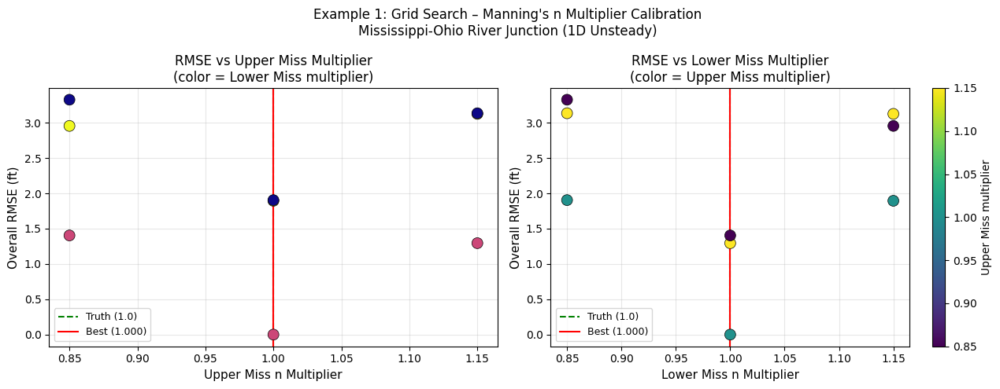
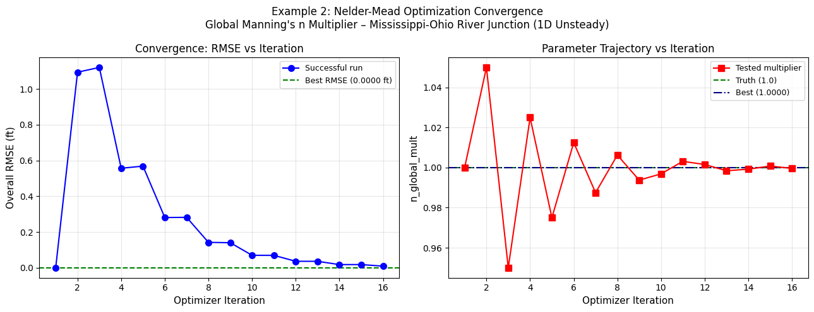

1D Manning's N Calibration Workflow¶
Demonstrates automated Manning's n calibration for a 1D HEC-RAS unsteady model
using the RasCalibrate module with grid_search() and optimize().
Two Examples¶
| Example | Method | Project | Parameters |
|---|---|---|---|
| 1 | Grid search | Example 24 - Mannings-n-Calibration | Channel n multipliers (Upper Miss + Lower Miss) |
| 2 | Optimization (Nelder-Mead) | Example 24 - Mannings-n-Calibration | Channel n multipliers (combined) |
Calibration Approach¶
This notebook uses a synthetic observed data approach:
- Run the model with original Manning's n to generate "truth" water surface elevations
- Define
CalibrationPointobjects at representative cross sections using those WSE as observations - Perturb Manning's n and run
grid_search()to recover the original values - Run
optimize()for a continuous Nelder-Mead search
This workflow mirrors real calibration except that observed data comes from streamflow gauges or survey data instead of a model run.
Background¶
The project is the Mississippi-Ohio River junction model from the HEC-RAS Example Applications
Guide (Example 24 - Manning's n Calibration). It includes:
- Mississippi River: Upper Miss and Lower Miss reaches (394 cross sections)
- Ohio River: OHS reach
- Unsteady simulation (~5.5 months, Sep 2004 to Mar 2005)
- Built-in HEC-RAS calibration zones defined as Roughness Change multipliers per reach segment
Prerequisites¶
- HEC-RAS 6.x installed (version 6.6 recommended)
ras-commanderinstalled (pip install ras-commanderor editable install)- Sufficient disk space (~500 MB) and compute time (~5 min per simulation)
Note: The grid search runs 3 simulations; the optimizer runs up to ~10 iterations. Total runtime: 20-60 minutes depending on your hardware.
# Standard library imports
from pathlib import Path
import re
import sys
import warnings
# Third-party imports
import numpy as np
import pandas as pd
import matplotlib.pyplot as plt
import matplotlib.ticker as mticker
warnings.filterwarnings("ignore")
# Flexible imports: works with installed package or editable install
try:
from ras_commander import (
init_ras_project,
RasCmdr,
RasExamples,
RasPlan,
RasCalibrate,
CalibrationPoint,
)
from ras_commander.hdf import HdfResultsXsec
except ImportError:
current_file = Path(".").resolve()
parent_directory = current_file.parent
sys.path.insert(0, str(parent_directory))
from ras_commander import (
init_ras_project,
RasCmdr,
RasExamples,
RasPlan,
RasCalibrate,
CalibrationPoint,
)
from ras_commander.hdf import HdfResultsXsec
print("Imports successful.")
Imports successful.
Setup: Extract and Initialize Project¶
# Extract and initialize Example 24 - Manning's n Calibration
project_path = RasExamples.extract_project(
"Example 24 - Mannings-n-Calibration",
suffix="calib_1d",
)
ras = init_ras_project(project_path, "6.6")
print(f"Project folder: {project_path}")
print()
print("Plans:")
display(
ras.plan_df[
["plan_number", "Plan Title", "Short Identifier", "Simulation Date"]
]
)
print()
print("Geometry:")
display(
ras.geom_df[
["geom_number", "geom_title", "num_cross_sections", "has_1d_xs"]
]
)
2026-04-12 13:30:23 - ras_commander.RasExamples - INFO - Found zip file: C:\Users\bill\AppData\Local\ras-commander\examples\Example_Projects_6_6.zip
2026-04-12 13:30:23 - ras_commander.RasExamples - INFO - Loading project data from CSV...
2026-04-12 13:30:23 - ras_commander.RasExamples - INFO - Loaded 68 projects from CSV.
2026-04-12 13:30:23 - ras_commander.RasExamples - INFO - ----- RasExamples Extracting Project -----
2026-04-12 13:30:23 - ras_commander.RasExamples - INFO - Extracting project 'Example 24 - Mannings-n-Calibration' as 'Example 24 - Mannings-n-Calibration_calib_1d'
2026-04-12 13:30:23 - ras_commander.RasExamples - INFO - Folder 'Example 24 - Mannings-n-Calibration_calib_1d' already exists. Deleting existing folder...
2026-04-12 13:30:23 - ras_commander.RasExamples - INFO - Existing folder 'Example 24 - Mannings-n-Calibration_calib_1d' has been deleted.
2026-04-12 13:30:24 - ras_commander.RasExamples - INFO - Successfully extracted project 'Example 24 - Mannings-n-Calibration' to G:\GH\ras-commander\examples\example_projects\Example 24 - Mannings-n-Calibration_calib_1d
2026-04-12 13:30:24 - ras_commander.RasUtils - INFO - Discovered HEC-RAS 6.6 at C:\Program Files (x86)\HEC\HEC-RAS\6.6\Ras.exe via filesystem (x86)
2026-04-12 13:30:24 - ras_commander.RasUtils - INFO - Discovered HEC-RAS 6.5 at C:\Program Files (x86)\HEC\HEC-RAS\6.5\Ras.exe via filesystem (x86)
2026-04-12 13:30:24 - ras_commander.RasUtils - INFO - Discovered HEC-RAS 6.3.1 at C:\Program Files (x86)\HEC\HEC-RAS\6.3.1\Ras.exe via filesystem (x86)
2026-04-12 13:30:24 - ras_commander.RasUtils - INFO - Discovered HEC-RAS 6.2 at C:\Program Files (x86)\HEC\HEC-RAS\6.2\Ras.exe via filesystem (x86)
2026-04-12 13:30:24 - ras_commander.RasUtils - INFO - Discovered HEC-RAS 6.1 at C:\Program Files (x86)\HEC\HEC-RAS\6.1\Ras.exe via filesystem (x86)
2026-04-12 13:30:24 - ras_commander.RasUtils - INFO - Discovered HEC-RAS 6.0 at C:\Program Files (x86)\HEC\HEC-RAS\6.0\Ras.exe via filesystem (x86)
2026-04-12 13:30:24 - ras_commander.RasUtils - INFO - Discovered HEC-RAS 5.0.7 at C:\Program Files (x86)\HEC\HEC-RAS\5.0.7\Ras.exe via filesystem (x86)
2026-04-12 13:30:24 - ras_commander.RasUtils - INFO - Discovered HEC-RAS 5.0.6 at C:\Program Files (x86)\HEC\HEC-RAS\5.0.6\Ras.exe via filesystem (x86)
2026-04-12 13:30:24 - ras_commander.RasUtils - INFO - Discovered HEC-RAS 5.0.5 at C:\Program Files (x86)\HEC\HEC-RAS\5.0.5\Ras.exe via filesystem (x86)
2026-04-12 13:30:24 - ras_commander.RasUtils - INFO - Discovered HEC-RAS 5.0.4 at C:\Program Files (x86)\HEC\HEC-RAS\5.0.4\Ras.exe via filesystem (x86)
2026-04-12 13:30:24 - ras_commander.RasUtils - INFO - Discovered HEC-RAS 5.0.3 at C:\Program Files (x86)\HEC\HEC-RAS\5.0.3\Ras.exe via filesystem (x86)
2026-04-12 13:30:24 - ras_commander.RasUtils - INFO - Discovered HEC-RAS 5.0.1 at C:\Program Files (x86)\HEC\HEC-RAS\5.0.1\Ras.exe via filesystem (x86)
2026-04-12 13:30:24 - ras_commander.RasUtils - INFO - Discovered HEC-RAS 5.0 at C:\Program Files (x86)\HEC\HEC-RAS\5.0\Ras.exe via filesystem (x86)
2026-04-12 13:30:24 - ras_commander.RasUtils - INFO - Discovered HEC-RAS 4.1.0 at C:\Program Files (x86)\HEC\HEC-RAS\4.1.0\Ras.exe via filesystem (x86)
2026-04-12 13:30:24 - ras_commander.RasUtils - INFO - Discovered HEC-RAS 6.7 Beta 5 at C:\Program Files (x86)\HEC\HEC-RAS\6.7 Beta 5\Ras.exe via filesystem (x86)
2026-04-12 13:30:24 - ras_commander.RasUtils - INFO - Discovered 15 installed HEC-RAS version(s)
2026-04-12 13:30:24 - ras_commander.RasMap - INFO - Successfully parsed RASMapper file: G:\GH\ras-commander\examples\example_projects\Example 24 - Mannings-n-Calibration_calib_1d\Manning'snCalibra.rasmap
2026-04-12 13:30:24 - ras_commander.RasPrj - WARNING - Could not resolve project CRS for G:\GH\ras-commander\examples\example_projects\Example 24 - Mannings-n-Calibration_calib_1d
2026-04-12 13:30:24 - ras_commander.RasPrj - INFO - Updated results_df with 5 plan(s)
2026-04-12 13:30:24 - ras_commander.RasPrj - INFO - ras-commander v0.91.0 | An open-source project of CLB Engineering Corporation (https://clbengineering.com/) | Docs: https://ras-commander.readthedocs.io | GitHub: https://github.com/gpt-cmdr/ras-commander
2026-04-12 13:30:24 - ras_commander.RasPrj - INFO - Project initialized: Manning'snCalibra | Folder: G:\GH\ras-commander\examples\example_projects\Example 24 - Mannings-n-Calibration_calib_1d
Project folder: G:\GH\ras-commander\examples\example_projects\Example 24 - Mannings-n-Calibration_calib_1d
Plans:
| plan_number | Plan Title | Short Identifier | Simulation Date | |
|---|---|---|---|---|
| 0 | 01 | Automatic Calibration | AutoCalibrate | 25sep2004,12:00,05MAR2005,12:00 |
| 1 | 02 | No Calibration Run | NoCalibration | 25sep2004,12:00,05MAR2005,12:00 |
| 2 | 03 | Automatic Calibration - Squared Error | Cal-SqErr | 25sep2004,12:00,05MAR2005,12:00 |
| 3 | 04 | Automatic Calibration - Sequential | AutoCalSequentia | 25sep2004,12:00,05MAR2005,12:00 |
| 4 | 05 | Automatic Calibration - Final Model | Final Model | 25sep2004,12:00,05MAR2005,12:00 |
Geometry:
| geom_number | geom_title | num_cross_sections | has_1d_xs | |
|---|---|---|---|---|
| 0 | 01 | Mississippi Ohio Junction | 394 | True |
Step 1: Run Baseline Simulation to Generate "Truth" WSE¶
We use Plan 02 (No Calibration Run) as the baseline. It applies a global Manning's n multiplier of 1.0 (no change from geometry defaults) to all reaches. The resulting water surface elevations become our synthetic observations.
# Run plan 02 (No Calibration Run) with default n values
# This generates the 'truth' results we will calibrate against
print("Running baseline plan 02 (No Calibration Run)...")
print("Expected runtime: ~5-15 minutes depending on hardware.")
RasCmdr.compute_plan(
"02",
ras_object=ras,
force_rerun=False, # Smart skip if already current
num_cores=2,
)
# Verify results
hdf_path_str = ras.plan_df.loc[
ras.plan_df["plan_number"] == "02", "HDF_Results_Path"
].iloc[0]
if hdf_path_str and Path(hdf_path_str).exists():
print(f"Baseline HDF: {hdf_path_str}")
else:
raise RuntimeError("Plan 02 did not produce an HDF file. Check HEC-RAS installation.")
2026-04-12 13:30:24 - ras_commander.RasCmdr - INFO - Using ras_object with project folder: G:\GH\ras-commander\examples\example_projects\Example 24 - Mannings-n-Calibration_calib_1d
2026-04-12 13:30:24 - ras_commander.RasUtils - INFO - Using provided plan file path: G:\GH\ras-commander\examples\example_projects\Example 24 - Mannings-n-Calibration_calib_1d\Manning'snCalibra.p02
2026-04-12 13:30:24 - ras_commander.RasUtils - INFO - Successfully updated file: G:\GH\ras-commander\examples\example_projects\Example 24 - Mannings-n-Calibration_calib_1d\Manning'snCalibra.p02
Running baseline plan 02 (No Calibration Run)...
Expected runtime: ~5-15 minutes depending on hardware.
2026-04-12 13:30:24 - ras_commander.RasCmdr - INFO - Set number of cores to 2 for plan: 02
2026-04-12 13:30:24 - ras_commander.RasCmdr - INFO - Running HEC-RAS from the Command Line:
2026-04-12 13:30:24 - ras_commander.RasCmdr - INFO - Running command: "C:\Program Files (x86)\HEC\HEC-RAS\6.6\Ras.exe" -c "G:\GH\ras-commander\examples\example_projects\Example 24 - Mannings-n-Calibration_calib_1d\Manning'snCalibra.prj" "G:\GH\ras-commander\examples\example_projects\Example 24 - Mannings-n-Calibration_calib_1d\Manning'snCalibra.p02"
2026-04-12 13:32:03 - ras_commander.RasCmdr - INFO - HEC-RAS execution completed for plan: 02
2026-04-12 13:32:03 - ras_commander.RasCmdr - INFO - Total run time for plan 02: 98.99 seconds
2026-04-12 13:32:03 - ras_commander.hdf.HdfResultsPlan - INFO - Using existing Path object HDF file: G:\GH\ras-commander\examples\example_projects\Example 24 - Mannings-n-Calibration_calib_1d\Manning'snCalibra.p02.hdf
2026-04-12 13:32:03 - ras_commander.hdf.HdfResultsPlan - INFO - Final validated file path: G:\GH\ras-commander\examples\example_projects\Example 24 - Mannings-n-Calibration_calib_1d\Manning'snCalibra.p02.hdf
2026-04-12 13:32:03 - ras_commander.hdf.HdfResultsPlan - INFO - Reading computation messages from HDF: Manning'snCalibra.p02.hdf
2026-04-12 13:32:03 - ras_commander.hdf.HdfResultsPlan - INFO - Successfully extracted 1987 characters from HDF
2026-04-12 13:32:03 - ras_commander.hdf.HdfResultsPlan - INFO - Using existing Path object HDF file: G:\GH\ras-commander\examples\example_projects\Example 24 - Mannings-n-Calibration_calib_1d\Manning'snCalibra.p02.hdf
2026-04-12 13:32:03 - ras_commander.hdf.HdfResultsPlan - INFO - Final validated file path: G:\GH\ras-commander\examples\example_projects\Example 24 - Mannings-n-Calibration_calib_1d\Manning'snCalibra.p02.hdf
2026-04-12 13:32:03 - ras_commander.hdf.HdfResultsPlan - INFO - Extracting Plan Information from: Manning'snCalibra.p02.hdf
2026-04-12 13:32:03 - ras_commander.hdf.HdfResultsPlan - INFO - Plan Name: No Calibration Run
2026-04-12 13:32:03 - ras_commander.hdf.HdfResultsPlan - INFO - Simulation Duration (hours): 3864.0
2026-04-12 13:32:03 - ras_commander.hdf.HdfResultsPlan - INFO - Using existing Path object HDF file: G:\GH\ras-commander\examples\example_projects\Example 24 - Mannings-n-Calibration_calib_1d\Manning'snCalibra.p02.hdf
2026-04-12 13:32:03 - ras_commander.hdf.HdfResultsPlan - INFO - Final validated file path: G:\GH\ras-commander\examples\example_projects\Example 24 - Mannings-n-Calibration_calib_1d\Manning'snCalibra.p02.hdf
2026-04-12 13:32:03 - ras_commander.RasPrj - INFO - Updated results_df with 1 plan(s)
Baseline HDF: G:\GH\ras-commander\examples\example_projects\Example 24 - Mannings-n-Calibration_calib_1d\Manning'snCalibra.p02.hdf
Step 2: Extract Baseline WSE at Representative Cross Sections¶
We extract the peak (maximum over time) water surface elevation at select cross sections along each calibration reach. These become our synthetic observations.
# Extract cross-section timeseries from baseline run
baseline_hdf = Path(hdf_path_str)
ds = HdfResultsXsec.get_xsec_timeseries(baseline_hdf)
print("Timeseries dataset variables:", list(ds.data_vars))
print("Coordinates:", list(ds.coords))
print()
# Show coordinate dimensions
rivers = [str(v).strip() for v in ds.coords["River"].values]
reaches = [str(v).strip() for v in ds.coords["Reach"].values]
stations = [str(v).strip() for v in ds.coords["Station"].values]
xs_info = pd.DataFrame(
{"River": rivers, "Reach": reaches, "Station": stations}
)
print(f"Total cross sections with output: {len(xs_info)}")
print()
print("Reach summary:")
print(xs_info.groupby(["River", "Reach"]).size().rename("XS count"))
2026-04-12 13:32:03 - ras_commander.hdf.HdfResultsXsec - INFO - Using existing Path object HDF file: G:\GH\ras-commander\examples\example_projects\Example 24 - Mannings-n-Calibration_calib_1d\Manning'snCalibra.p02.hdf
2026-04-12 13:32:03 - ras_commander.hdf.HdfResultsXsec - INFO - Final validated file path: G:\GH\ras-commander\examples\example_projects\Example 24 - Mannings-n-Calibration_calib_1d\Manning'snCalibra.p02.hdf
Timeseries dataset variables: ['Water_Surface', 'Velocity_Total', 'Velocity_Channel', 'Flow_Lateral', 'Flow']
Coordinates: ['time', 'cross_section', 'River', 'Reach', 'Station', 'Name', 'Maximum_Water_Surface', 'Maximum_Flow', 'Maximum_Channel_Velocity', 'Maximum_Velocity_Total', 'Maximum_Flow_Lateral']
Total cross sections with output: 394
Reach summary:
River Reach
Mississippi Lower Miss. 110
Upper Miss 230
Ohio River OHS 54
Name: XS count, dtype: int64
# Extract peak WSE (maximum over simulation period) for each cross section
# Note: HEC-RAS HDF stores the variable as "Water_Surface" (with underscore)
wse_data = ds["Water_Surface"] # shape: (n_xs, n_timesteps)
peak_wse = wse_data.max(dim="time") # shape: (n_xs,)
peak_wse_df = pd.DataFrame(
{
"River": rivers,
"Reach": reaches,
"Station": stations,
"peak_wse_ft": peak_wse.values,
}
)
print("Peak WSE summary by reach:")
display(
peak_wse_df.groupby(["River", "Reach"])["peak_wse_ft"]
.agg(["min", "mean", "max", "count"])
.round(2)
)
# Select representative cross sections: a few per calibration reach
# Upper Miss: 3 stations spanning the reach
# Lower Miss: 3 stations spanning the reach
upper_miss_xs = (
peak_wse_df[peak_wse_df["Reach"] == "Upper Miss"]
.dropna(subset=["peak_wse_ft"])
.iloc[[10, 60, 120]] # sample early, mid, late in reach
)
lower_miss_xs = (
peak_wse_df[peak_wse_df["Reach"] == "Lower Miss."]
.dropna(subset=["peak_wse_ft"])
.iloc[[5, 30, 60]]
)
selected_xs = pd.concat([upper_miss_xs, lower_miss_xs], ignore_index=True)
print()
print("Selected calibration cross sections:")
display(selected_xs[["River", "Reach", "Station", "peak_wse_ft"]].round(3))
Peak WSE summary by reach:
| min | mean | max | count | ||
|---|---|---|---|---|---|
| River | Reach | ||||
| Mississippi | Lower Miss. | 270.309998 | 299.630005 | 323.309998 | 110 |
| Upper Miss | 323.309998 | 342.010010 | 368.890015 | 230 | |
| Ohio River | OHS | 323.309998 | 326.820007 | 330.549988 | 54 |
Selected calibration cross sections:
| River | Reach | Station | peak_wse_ft | |
|---|---|---|---|---|
| 0 | Mississippi | Upper Miss | 107.3 | 367.321014 |
| 1 | Mississippi | Upper Miss | 81.09 | 354.108002 |
| 2 | Mississippi | Upper Miss | 51.03 | 338.936005 |
| 3 | Mississippi | Lower Miss. | 950 | 321.622986 |
| 4 | Mississippi | Lower Miss. | 925 | 313.428986 |
| 5 | Mississippi | Lower Miss. | 895 | 298.157013 |
Step 3: Inspect Manning's n Zones¶
The plan file stores Manning's n calibration zones as Roughness Change lines.
Each zone applies a multiplier (1.0 = no change) to the base geometry values
for a reach segment defined by upstream/downstream river stations.
We will calibrate a single global channel multiplier applied uniformly to all zones. In practice, you would calibrate zone-specific multipliers.
def parse_roughness_zones(plan_path: Path) -> list:
"""Parse Roughness Change zones from a HEC-RAS plan file.
Returns a list of dicts with keys: river, reach, us_station, ds_station,
header_line_idx, multiplier_line_indices.
"""
lines = plan_path.read_text(encoding="utf-8", errors="replace").splitlines()
zones = []
i = 0
while i < len(lines):
line = lines[i]
if line.startswith("Roughness Change="):
parts = line.split("=", 1)[1].split(",")
if len(parts) >= 5:
river = parts[0].strip()
reach = parts[1].strip()
us_sta = parts[2].strip()
ds_sta = parts[3].strip()
n_entries = int(parts[4].strip())
# Each data line holds ~5 pairs; ceil(n_entries / 5) lines
n_data_lines = (n_entries + 4) // 5
zones.append(
{
"river": river,
"reach": reach,
"us_station": us_sta,
"ds_station": ds_sta,
"n_entries": n_entries,
"header_line_idx": i,
"multiplier_line_indices": list(
range(i + 1, i + 1 + n_data_lines)
),
}
)
i += 1
return zones
# Inspect baseline plan zones
plan02_path = ras.plan_df.loc[
ras.plan_df["plan_number"] == "02", "full_path"
].iloc[0]
baseline_zones = parse_roughness_zones(Path(plan02_path))
print(f"Plan 02 has {len(baseline_zones)} Roughness Change zones:")
for z in baseline_zones:
print(
f" {z['river']}/{z['reach']} "
f"sta {z['us_station']} -> {z['ds_station']} "
f"({z['n_entries']} multipliers)"
)
Plan 02 has 6 Roughness Change zones:
Mississippi/Upper Miss sta 43.7 -> 29.09 (14 multipliers)
Mississippi/Lower Miss. sta 953.5 -> 923 (13 multipliers)
Mississippi/Lower Miss. sta 922 -> 874 (16 multipliers)
Mississippi/Lower Miss. sta 873 -> 846 (24 multipliers)
Mississippi/Upper Miss sta 110.4 -> 43.702 (14 multipliers)
Mississippi/Upper Miss sta 28.57 -> 1.39 (14 multipliers)
Step 4: Define the Apply Function for 1D Manning's n¶
The apply_fn receives (plan_path, param_row, ras_object) and modifies the
cloned plan file before HEC-RAS executes it. For this 1D model, we modify the
Roughness Change multipliers directly in the plan file.
n_upper_miss_mult: multiplier for Upper Mississippi reach zonesn_lower_miss_mult: multiplier for Lower Mississippi reach zones
def _rebuild_multiplier_lines(n_entries: int, multiplier: float) -> list:
"""Rebuild data lines for a Roughness Change zone with a new multiplier.
HEC-RAS format: up to 5 (station, multiplier) pairs per line.
Stations are sequential 1-based integers scaled by 100000.
The multiplier is a float rounded to 4 decimal places.
"""
pairs = []
for k in range(n_entries):
station_val = (k + 1) * 100000
pairs.append((station_val, round(multiplier, 6)))
new_lines = []
for chunk_start in range(0, len(pairs), 5):
chunk = pairs[chunk_start : chunk_start + 5]
line_parts = "".join(
f"{sta:8d}{mult:8.4f}" for sta, mult in chunk
)
new_lines.append(line_parts)
return new_lines
def make_1d_roughness_apply_fn(
param_to_reach_map: dict,
) -> object:
"""Factory for a 1D Manning's n apply_fn that modifies Roughness Change multipliers.
Args:
param_to_reach_map: Maps parameter column name to reach name substring.
Example: {'n_upper_mult': 'Upper Miss', 'n_lower_mult': 'Lower Miss.'}
A parameter value of 1.0 means 100% of baseline n (no change).
Returns:
An apply_fn compatible with RasCalibrate.grid_search() and optimize().
"""
def apply_fn(plan_path, param_row, ras_object=None):
plan_path = Path(plan_path)
lines = plan_path.read_text(
encoding="utf-8", errors="replace"
).splitlines()
zones = parse_roughness_zones(plan_path)
# Build reach -> multiplier lookup from param_row
reach_multiplier = {}
for param_col, reach_substr in param_to_reach_map.items():
if param_col in param_row.index:
reach_multiplier[reach_substr] = float(param_row[param_col])
# Apply multipliers to matching zones
modified_lines = lines.copy()
for zone in zones:
for reach_substr, mult in reach_multiplier.items():
if reach_substr in zone["reach"]:
new_data = _rebuild_multiplier_lines(
zone["n_entries"], mult
)
for line_idx, new_line in zip(
zone["multiplier_line_indices"], new_data
):
modified_lines[line_idx] = new_line
plan_path.write_text(
"\n".join(modified_lines) + "\n",
encoding="utf-8",
)
return apply_fn
# Test the apply function on plan 02 at baseline (multiplier = 1.0)
test_apply_fn = make_1d_roughness_apply_fn(
{
"n_upper_mult": "Upper Miss",
"n_lower_mult": "Lower Miss.",
}
)
test_params = pd.Series({"n_upper_mult": 1.0, "n_lower_mult": 1.0})
test_apply_fn(plan02_path, test_params)
# Verify zones parse correctly after apply
zones_after = parse_roughness_zones(Path(plan02_path))
print(f"Verified: {len(zones_after)} zones found after apply_fn test.")
print("Apply function factory working correctly.")
Verified: 6 zones found after apply_fn test.
Apply function factory working correctly.
Step 5: Define Calibration Points¶
Each CalibrationPoint specifies:
- extraction_method="1d_xs": extract from 1D cross section timeseries
- river, reach, station: must match the HEC-RAS cross section identifiers exactly
- observed: the peak WSE from the baseline run (our synthetic truth)
- time_index="max": extract the simulation maximum (matching how we got the truth)
- metric: objective for this point (RMSE - lower is better for scalar targets)
# Build calibration points from selected cross sections
calibration_points = []
for _, row in selected_xs.iterrows():
cp = CalibrationPoint(
name=f"{row['Reach'].replace(' ', '_').replace('.', '')}_{row['Station']}",
variable="wse",
extraction_method="1d_xs",
observed=float(row["peak_wse_ft"]),
river=row["River"],
reach=row["Reach"],
station=row["Station"],
time_index="max",
metric="rmse",
weight=1.0,
)
calibration_points.append(cp)
print(f"Created {len(calibration_points)} calibration points:")
for cp in calibration_points:
print(
f" {cp.name}: {cp.river}/{cp.reach} sta {cp.station}, "
f"observed WSE = {cp.observed:.2f} ft"
)
Created 6 calibration points:
Upper_Miss_107.3: Mississippi/Upper Miss sta 107.3, observed WSE = 367.32 ft
Upper_Miss_81.09: Mississippi/Upper Miss sta 81.09, observed WSE = 354.11 ft
Upper_Miss_51.03: Mississippi/Upper Miss sta 51.03, observed WSE = 338.94 ft
Lower_Miss_950: Mississippi/Lower Miss. sta 950, observed WSE = 321.62 ft
Lower_Miss_925: Mississippi/Lower Miss. sta 925, observed WSE = 313.43 ft
Lower_Miss_895: Mississippi/Lower Miss. sta 895, observed WSE = 298.16 ft
Example 1: Grid Search Calibration¶
We search over a grid of Manning's n multipliers for Upper Miss and Lower Miss
reaches. The "truth" is multiplier = 1.0. We search from 0.8 to 1.2 in 3 steps
to keep runtime short (3 × 3 = 9 combinations, but we do a focused 3-point search
per reach = 3 simulations total via grid_search with one varied parameter at a time).
Runtime: Each grid_search point runs one HEC-RAS simulation (~5-15 min each).
# Create apply_fn for grid search
grid_apply_fn = make_1d_roughness_apply_fn(
{
"n_upper_mult": "Upper Miss",
"n_lower_mult": "Lower Miss.",
}
)
# Define parameter grid: 3 values per parameter
# Truth is 1.0; we search 0.85 to 1.15 to verify recovery
parameters = {
"n_upper_mult": [0.85, 1.0, 1.15],
"n_lower_mult": [0.85, 1.0, 1.15],
}
print("Grid search parameters:")
from ras_commander import RasPermutation
params_preview = RasPermutation.define_parameters(parameters)
print(f"Total simulations: {len(params_preview)}")
display(params_preview[["absolute_perm_id", "n_upper_mult", "n_lower_mult"]])
2026-04-12 13:32:04 - ras_commander.RasPermutation - INFO - Defined 9 total permutation(s)
Grid search parameters:
Total simulations: 9
| absolute_perm_id | n_upper_mult | n_lower_mult | |
|---|---|---|---|
| 0 | 1 | 0.85 | 0.85 |
| 1 | 2 | 0.85 | 1.00 |
| 2 | 3 | 0.85 | 1.15 |
| 3 | 4 | 1.00 | 0.85 |
| 4 | 5 | 1.00 | 1.00 |
| 5 | 6 | 1.00 | 1.15 |
| 6 | 7 | 1.15 | 0.85 |
| 7 | 8 | 1.15 | 1.00 |
| 8 | 9 | 1.15 | 1.15 |
print("Running grid search...")
print(f"This will run {len(params_preview)} HEC-RAS simulations in parallel.")
print("Expected runtime: 30-90 minutes depending on hardware.")
print()
grid_results = RasCalibrate.grid_search(
template_plan="02", # No Calibration Run (base multipliers = 1.0)
parameters=parameters,
apply_fn=grid_apply_fn,
calibration_points=calibration_points,
metric="rmse", # RMSE between observed and modeled peak WSE
suffix="gs1d",
max_workers=2, # Run 2 simulations at a time
num_cores=2,
ras_object=ras,
)
print()
print(f"Grid search complete. {len(grid_results)} results returned.")
print()
print("Grid search results (sorted by overall RMSE):")
display_cols = [
"n_upper_mult",
"n_lower_mult",
"overall_objective",
"n_points_scored",
"status",
]
display(grid_results[display_cols].round(4))
2026-04-12 13:32:04 - ras_commander.RasPermutation - INFO - Defined 9 total permutation(s)
Running grid search...
This will run 9 HEC-RAS simulations in parallel.
Expected runtime: 30-90 minutes depending on hardware.
2026-04-12 13:32:04 - ras_commander.RasMap - INFO - Successfully parsed RASMapper file: G:\GH\ras-commander\examples\example_projects\Example 24 - Mannings-n-Calibration_calib_1d_gs1d_001\Manning'snCalibra.rasmap
2026-04-12 13:32:04 - ras_commander.RasPrj - WARNING - Could not resolve project CRS for G:\GH\ras-commander\examples\example_projects\Example 24 - Mannings-n-Calibration_calib_1d_gs1d_001
2026-04-12 13:32:04 - ras_commander.RasPrj - INFO - ras-commander v0.91.0 | An open-source project of CLB Engineering Corporation (https://clbengineering.com/) | Docs: https://ras-commander.readthedocs.io | GitHub: https://github.com/gpt-cmdr/ras-commander
2026-04-12 13:32:04 - ras_commander.RasPrj - INFO - Project initialized: Manning'snCalibra | Folder: G:\GH\ras-commander\examples\example_projects\Example 24 - Mannings-n-Calibration_calib_1d_gs1d_001
2026-04-12 13:32:04 - ras_commander.RasUtils - INFO - File cloned from G:\GH\ras-commander\examples\example_projects\Example 24 - Mannings-n-Calibration_calib_1d_gs1d_001\Manning'snCalibra.p02 to G:\GH\ras-commander\examples\example_projects\Example 24 - Mannings-n-Calibration_calib_1d_gs1d_001\Manning'snCalibra.p06
2026-04-12 13:32:04 - ras_commander.RasUtils - INFO - Successfully updated file: G:\GH\ras-commander\examples\example_projects\Example 24 - Mannings-n-Calibration_calib_1d_gs1d_001\Manning'snCalibra.p06
2026-04-12 13:32:04 - ras_commander.RasUtils - INFO - Project file updated with new Plan entry: 06
2026-04-12 13:32:04 - ras_commander.RasMap - INFO - Successfully parsed RASMapper file: G:\GH\ras-commander\examples\example_projects\Example 24 - Mannings-n-Calibration_calib_1d_gs1d_001\Manning'snCalibra.rasmap
2026-04-12 13:32:04 - ras_commander.RasPrj - WARNING - Could not resolve project CRS for G:\GH\ras-commander\examples\example_projects\Example 24 - Mannings-n-Calibration_calib_1d_gs1d_001
2026-04-12 13:32:04 - ras_commander.hdf.HdfResultsPlan - INFO - Using existing Path object HDF file: G:\GH\ras-commander\examples\example_projects\Example 24 - Mannings-n-Calibration_calib_1d_gs1d_001\Manning'snCalibra.p02.hdf
2026-04-12 13:32:04 - ras_commander.hdf.HdfResultsPlan - INFO - Final validated file path: G:\GH\ras-commander\examples\example_projects\Example 24 - Mannings-n-Calibration_calib_1d_gs1d_001\Manning'snCalibra.p02.hdf
2026-04-12 13:32:04 - ras_commander.hdf.HdfResultsPlan - INFO - Reading computation messages from HDF: Manning'snCalibra.p02.hdf
2026-04-12 13:32:04 - ras_commander.hdf.HdfResultsPlan - INFO - Successfully extracted 1987 characters from HDF
2026-04-12 13:32:04 - ras_commander.hdf.HdfResultsPlan - INFO - Using existing Path object HDF file: G:\GH\ras-commander\examples\example_projects\Example 24 - Mannings-n-Calibration_calib_1d_gs1d_001\Manning'snCalibra.p02.hdf
2026-04-12 13:32:04 - ras_commander.hdf.HdfResultsPlan - INFO - Final validated file path: G:\GH\ras-commander\examples\example_projects\Example 24 - Mannings-n-Calibration_calib_1d_gs1d_001\Manning'snCalibra.p02.hdf
2026-04-12 13:32:04 - ras_commander.hdf.HdfResultsPlan - INFO - Extracting Plan Information from: Manning'snCalibra.p02.hdf
2026-04-12 13:32:04 - ras_commander.hdf.HdfResultsPlan - INFO - Plan Name: No Calibration Run
2026-04-12 13:32:04 - ras_commander.hdf.HdfResultsPlan - INFO - Simulation Duration (hours): 3864.0
2026-04-12 13:32:04 - ras_commander.hdf.HdfResultsPlan - INFO - Using existing Path object HDF file: G:\GH\ras-commander\examples\example_projects\Example 24 - Mannings-n-Calibration_calib_1d_gs1d_001\Manning'snCalibra.p02.hdf
2026-04-12 13:32:04 - ras_commander.hdf.HdfResultsPlan - INFO - Final validated file path: G:\GH\ras-commander\examples\example_projects\Example 24 - Mannings-n-Calibration_calib_1d_gs1d_001\Manning'snCalibra.p02.hdf
2026-04-12 13:32:04 - ras_commander.RasPrj - INFO - Updated results_df with 6 plan(s)
2026-04-12 13:32:04 - ras_commander.RasUtils - INFO - File cloned from G:\GH\ras-commander\examples\example_projects\Example 24 - Mannings-n-Calibration_calib_1d_gs1d_001\Manning'snCalibra.p02 to G:\GH\ras-commander\examples\example_projects\Example 24 - Mannings-n-Calibration_calib_1d_gs1d_001\Manning'snCalibra.p07
2026-04-12 13:32:04 - ras_commander.RasUtils - INFO - Successfully updated file: G:\GH\ras-commander\examples\example_projects\Example 24 - Mannings-n-Calibration_calib_1d_gs1d_001\Manning'snCalibra.p07
2026-04-12 13:32:04 - ras_commander.RasUtils - INFO - Project file updated with new Plan entry: 07
2026-04-12 13:32:04 - ras_commander.RasMap - INFO - Successfully parsed RASMapper file: G:\GH\ras-commander\examples\example_projects\Example 24 - Mannings-n-Calibration_calib_1d_gs1d_001\Manning'snCalibra.rasmap
2026-04-12 13:32:04 - ras_commander.RasPrj - WARNING - Could not resolve project CRS for G:\GH\ras-commander\examples\example_projects\Example 24 - Mannings-n-Calibration_calib_1d_gs1d_001
2026-04-12 13:32:04 - ras_commander.hdf.HdfResultsPlan - INFO - Using existing Path object HDF file: G:\GH\ras-commander\examples\example_projects\Example 24 - Mannings-n-Calibration_calib_1d_gs1d_001\Manning'snCalibra.p02.hdf
2026-04-12 13:32:04 - ras_commander.hdf.HdfResultsPlan - INFO - Final validated file path: G:\GH\ras-commander\examples\example_projects\Example 24 - Mannings-n-Calibration_calib_1d_gs1d_001\Manning'snCalibra.p02.hdf
2026-04-12 13:32:04 - ras_commander.hdf.HdfResultsPlan - INFO - Reading computation messages from HDF: Manning'snCalibra.p02.hdf
2026-04-12 13:32:04 - ras_commander.hdf.HdfResultsPlan - INFO - Successfully extracted 1987 characters from HDF
2026-04-12 13:32:04 - ras_commander.hdf.HdfResultsPlan - INFO - Using existing Path object HDF file: G:\GH\ras-commander\examples\example_projects\Example 24 - Mannings-n-Calibration_calib_1d_gs1d_001\Manning'snCalibra.p02.hdf
2026-04-12 13:32:04 - ras_commander.hdf.HdfResultsPlan - INFO - Final validated file path: G:\GH\ras-commander\examples\example_projects\Example 24 - Mannings-n-Calibration_calib_1d_gs1d_001\Manning'snCalibra.p02.hdf
2026-04-12 13:32:04 - ras_commander.hdf.HdfResultsPlan - INFO - Extracting Plan Information from: Manning'snCalibra.p02.hdf
2026-04-12 13:32:04 - ras_commander.hdf.HdfResultsPlan - INFO - Plan Name: No Calibration Run
2026-04-12 13:32:04 - ras_commander.hdf.HdfResultsPlan - INFO - Simulation Duration (hours): 3864.0
2026-04-12 13:32:05 - ras_commander.hdf.HdfResultsPlan - INFO - Using existing Path object HDF file: G:\GH\ras-commander\examples\example_projects\Example 24 - Mannings-n-Calibration_calib_1d_gs1d_001\Manning'snCalibra.p02.hdf
2026-04-12 13:32:05 - ras_commander.hdf.HdfResultsPlan - INFO - Final validated file path: G:\GH\ras-commander\examples\example_projects\Example 24 - Mannings-n-Calibration_calib_1d_gs1d_001\Manning'snCalibra.p02.hdf
2026-04-12 13:32:05 - ras_commander.RasPrj - INFO - Updated results_df with 7 plan(s)
2026-04-12 13:32:05 - ras_commander.RasUtils - INFO - File cloned from G:\GH\ras-commander\examples\example_projects\Example 24 - Mannings-n-Calibration_calib_1d_gs1d_001\Manning'snCalibra.p02 to G:\GH\ras-commander\examples\example_projects\Example 24 - Mannings-n-Calibration_calib_1d_gs1d_001\Manning'snCalibra.p08
2026-04-12 13:32:05 - ras_commander.RasUtils - INFO - Successfully updated file: G:\GH\ras-commander\examples\example_projects\Example 24 - Mannings-n-Calibration_calib_1d_gs1d_001\Manning'snCalibra.p08
2026-04-12 13:32:05 - ras_commander.RasUtils - INFO - Project file updated with new Plan entry: 08
2026-04-12 13:32:05 - ras_commander.RasMap - INFO - Successfully parsed RASMapper file: G:\GH\ras-commander\examples\example_projects\Example 24 - Mannings-n-Calibration_calib_1d_gs1d_001\Manning'snCalibra.rasmap
2026-04-12 13:32:05 - ras_commander.RasPrj - WARNING - Could not resolve project CRS for G:\GH\ras-commander\examples\example_projects\Example 24 - Mannings-n-Calibration_calib_1d_gs1d_001
2026-04-12 13:32:05 - ras_commander.hdf.HdfResultsPlan - INFO - Using existing Path object HDF file: G:\GH\ras-commander\examples\example_projects\Example 24 - Mannings-n-Calibration_calib_1d_gs1d_001\Manning'snCalibra.p02.hdf
2026-04-12 13:32:05 - ras_commander.hdf.HdfResultsPlan - INFO - Final validated file path: G:\GH\ras-commander\examples\example_projects\Example 24 - Mannings-n-Calibration_calib_1d_gs1d_001\Manning'snCalibra.p02.hdf
2026-04-12 13:32:05 - ras_commander.hdf.HdfResultsPlan - INFO - Reading computation messages from HDF: Manning'snCalibra.p02.hdf
2026-04-12 13:32:05 - ras_commander.hdf.HdfResultsPlan - INFO - Successfully extracted 1987 characters from HDF
2026-04-12 13:32:05 - ras_commander.hdf.HdfResultsPlan - INFO - Using existing Path object HDF file: G:\GH\ras-commander\examples\example_projects\Example 24 - Mannings-n-Calibration_calib_1d_gs1d_001\Manning'snCalibra.p02.hdf
2026-04-12 13:32:05 - ras_commander.hdf.HdfResultsPlan - INFO - Final validated file path: G:\GH\ras-commander\examples\example_projects\Example 24 - Mannings-n-Calibration_calib_1d_gs1d_001\Manning'snCalibra.p02.hdf
2026-04-12 13:32:05 - ras_commander.hdf.HdfResultsPlan - INFO - Extracting Plan Information from: Manning'snCalibra.p02.hdf
2026-04-12 13:32:05 - ras_commander.hdf.HdfResultsPlan - INFO - Plan Name: No Calibration Run
2026-04-12 13:32:05 - ras_commander.hdf.HdfResultsPlan - INFO - Simulation Duration (hours): 3864.0
2026-04-12 13:32:05 - ras_commander.hdf.HdfResultsPlan - INFO - Using existing Path object HDF file: G:\GH\ras-commander\examples\example_projects\Example 24 - Mannings-n-Calibration_calib_1d_gs1d_001\Manning'snCalibra.p02.hdf
2026-04-12 13:32:05 - ras_commander.hdf.HdfResultsPlan - INFO - Final validated file path: G:\GH\ras-commander\examples\example_projects\Example 24 - Mannings-n-Calibration_calib_1d_gs1d_001\Manning'snCalibra.p02.hdf
2026-04-12 13:32:05 - ras_commander.RasPrj - INFO - Updated results_df with 8 plan(s)
2026-04-12 13:32:05 - ras_commander.RasUtils - INFO - File cloned from G:\GH\ras-commander\examples\example_projects\Example 24 - Mannings-n-Calibration_calib_1d_gs1d_001\Manning'snCalibra.p02 to G:\GH\ras-commander\examples\example_projects\Example 24 - Mannings-n-Calibration_calib_1d_gs1d_001\Manning'snCalibra.p09
2026-04-12 13:32:05 - ras_commander.RasUtils - INFO - Successfully updated file: G:\GH\ras-commander\examples\example_projects\Example 24 - Mannings-n-Calibration_calib_1d_gs1d_001\Manning'snCalibra.p09
2026-04-12 13:32:05 - ras_commander.RasUtils - INFO - Project file updated with new Plan entry: 09
2026-04-12 13:32:05 - ras_commander.RasMap - INFO - Successfully parsed RASMapper file: G:\GH\ras-commander\examples\example_projects\Example 24 - Mannings-n-Calibration_calib_1d_gs1d_001\Manning'snCalibra.rasmap
2026-04-12 13:32:05 - ras_commander.RasPrj - WARNING - Could not resolve project CRS for G:\GH\ras-commander\examples\example_projects\Example 24 - Mannings-n-Calibration_calib_1d_gs1d_001
2026-04-12 13:32:05 - ras_commander.hdf.HdfResultsPlan - INFO - Using existing Path object HDF file: G:\GH\ras-commander\examples\example_projects\Example 24 - Mannings-n-Calibration_calib_1d_gs1d_001\Manning'snCalibra.p02.hdf
2026-04-12 13:32:05 - ras_commander.hdf.HdfResultsPlan - INFO - Final validated file path: G:\GH\ras-commander\examples\example_projects\Example 24 - Mannings-n-Calibration_calib_1d_gs1d_001\Manning'snCalibra.p02.hdf
2026-04-12 13:32:05 - ras_commander.hdf.HdfResultsPlan - INFO - Reading computation messages from HDF: Manning'snCalibra.p02.hdf
2026-04-12 13:32:05 - ras_commander.hdf.HdfResultsPlan - INFO - Successfully extracted 1987 characters from HDF
2026-04-12 13:32:05 - ras_commander.hdf.HdfResultsPlan - INFO - Using existing Path object HDF file: G:\GH\ras-commander\examples\example_projects\Example 24 - Mannings-n-Calibration_calib_1d_gs1d_001\Manning'snCalibra.p02.hdf
2026-04-12 13:32:05 - ras_commander.hdf.HdfResultsPlan - INFO - Final validated file path: G:\GH\ras-commander\examples\example_projects\Example 24 - Mannings-n-Calibration_calib_1d_gs1d_001\Manning'snCalibra.p02.hdf
2026-04-12 13:32:05 - ras_commander.hdf.HdfResultsPlan - INFO - Extracting Plan Information from: Manning'snCalibra.p02.hdf
2026-04-12 13:32:05 - ras_commander.hdf.HdfResultsPlan - INFO - Plan Name: No Calibration Run
2026-04-12 13:32:05 - ras_commander.hdf.HdfResultsPlan - INFO - Simulation Duration (hours): 3864.0
2026-04-12 13:32:05 - ras_commander.hdf.HdfResultsPlan - INFO - Using existing Path object HDF file: G:\GH\ras-commander\examples\example_projects\Example 24 - Mannings-n-Calibration_calib_1d_gs1d_001\Manning'snCalibra.p02.hdf
2026-04-12 13:32:05 - ras_commander.hdf.HdfResultsPlan - INFO - Final validated file path: G:\GH\ras-commander\examples\example_projects\Example 24 - Mannings-n-Calibration_calib_1d_gs1d_001\Manning'snCalibra.p02.hdf
2026-04-12 13:32:05 - ras_commander.RasPrj - INFO - Updated results_df with 9 plan(s)
2026-04-12 13:32:05 - ras_commander.RasUtils - INFO - File cloned from G:\GH\ras-commander\examples\example_projects\Example 24 - Mannings-n-Calibration_calib_1d_gs1d_001\Manning'snCalibra.p02 to G:\GH\ras-commander\examples\example_projects\Example 24 - Mannings-n-Calibration_calib_1d_gs1d_001\Manning'snCalibra.p10
2026-04-12 13:32:05 - ras_commander.RasUtils - INFO - Successfully updated file: G:\GH\ras-commander\examples\example_projects\Example 24 - Mannings-n-Calibration_calib_1d_gs1d_001\Manning'snCalibra.p10
2026-04-12 13:32:05 - ras_commander.RasUtils - INFO - Project file updated with new Plan entry: 10
2026-04-12 13:32:05 - ras_commander.RasMap - INFO - Successfully parsed RASMapper file: G:\GH\ras-commander\examples\example_projects\Example 24 - Mannings-n-Calibration_calib_1d_gs1d_001\Manning'snCalibra.rasmap
2026-04-12 13:32:05 - ras_commander.RasPrj - WARNING - Could not resolve project CRS for G:\GH\ras-commander\examples\example_projects\Example 24 - Mannings-n-Calibration_calib_1d_gs1d_001
2026-04-12 13:32:05 - ras_commander.hdf.HdfResultsPlan - INFO - Using existing Path object HDF file: G:\GH\ras-commander\examples\example_projects\Example 24 - Mannings-n-Calibration_calib_1d_gs1d_001\Manning'snCalibra.p02.hdf
2026-04-12 13:32:05 - ras_commander.hdf.HdfResultsPlan - INFO - Final validated file path: G:\GH\ras-commander\examples\example_projects\Example 24 - Mannings-n-Calibration_calib_1d_gs1d_001\Manning'snCalibra.p02.hdf
2026-04-12 13:32:05 - ras_commander.hdf.HdfResultsPlan - INFO - Reading computation messages from HDF: Manning'snCalibra.p02.hdf
2026-04-12 13:32:05 - ras_commander.hdf.HdfResultsPlan - INFO - Successfully extracted 1987 characters from HDF
2026-04-12 13:32:05 - ras_commander.hdf.HdfResultsPlan - INFO - Using existing Path object HDF file: G:\GH\ras-commander\examples\example_projects\Example 24 - Mannings-n-Calibration_calib_1d_gs1d_001\Manning'snCalibra.p02.hdf
2026-04-12 13:32:05 - ras_commander.hdf.HdfResultsPlan - INFO - Final validated file path: G:\GH\ras-commander\examples\example_projects\Example 24 - Mannings-n-Calibration_calib_1d_gs1d_001\Manning'snCalibra.p02.hdf
2026-04-12 13:32:05 - ras_commander.hdf.HdfResultsPlan - INFO - Extracting Plan Information from: Manning'snCalibra.p02.hdf
2026-04-12 13:32:05 - ras_commander.hdf.HdfResultsPlan - INFO - Plan Name: No Calibration Run
2026-04-12 13:32:05 - ras_commander.hdf.HdfResultsPlan - INFO - Simulation Duration (hours): 3864.0
2026-04-12 13:32:05 - ras_commander.hdf.HdfResultsPlan - INFO - Using existing Path object HDF file: G:\GH\ras-commander\examples\example_projects\Example 24 - Mannings-n-Calibration_calib_1d_gs1d_001\Manning'snCalibra.p02.hdf
2026-04-12 13:32:05 - ras_commander.hdf.HdfResultsPlan - INFO - Final validated file path: G:\GH\ras-commander\examples\example_projects\Example 24 - Mannings-n-Calibration_calib_1d_gs1d_001\Manning'snCalibra.p02.hdf
2026-04-12 13:32:05 - ras_commander.RasPrj - INFO - Updated results_df with 10 plan(s)
2026-04-12 13:32:05 - ras_commander.RasUtils - INFO - File cloned from G:\GH\ras-commander\examples\example_projects\Example 24 - Mannings-n-Calibration_calib_1d_gs1d_001\Manning'snCalibra.p02 to G:\GH\ras-commander\examples\example_projects\Example 24 - Mannings-n-Calibration_calib_1d_gs1d_001\Manning'snCalibra.p11
2026-04-12 13:32:05 - ras_commander.RasUtils - INFO - Successfully updated file: G:\GH\ras-commander\examples\example_projects\Example 24 - Mannings-n-Calibration_calib_1d_gs1d_001\Manning'snCalibra.p11
2026-04-12 13:32:05 - ras_commander.RasUtils - INFO - Project file updated with new Plan entry: 11
2026-04-12 13:32:05 - ras_commander.RasMap - INFO - Successfully parsed RASMapper file: G:\GH\ras-commander\examples\example_projects\Example 24 - Mannings-n-Calibration_calib_1d_gs1d_001\Manning'snCalibra.rasmap
2026-04-12 13:32:05 - ras_commander.RasPrj - WARNING - Could not resolve project CRS for G:\GH\ras-commander\examples\example_projects\Example 24 - Mannings-n-Calibration_calib_1d_gs1d_001
2026-04-12 13:32:05 - ras_commander.hdf.HdfResultsPlan - INFO - Using existing Path object HDF file: G:\GH\ras-commander\examples\example_projects\Example 24 - Mannings-n-Calibration_calib_1d_gs1d_001\Manning'snCalibra.p02.hdf
2026-04-12 13:32:05 - ras_commander.hdf.HdfResultsPlan - INFO - Final validated file path: G:\GH\ras-commander\examples\example_projects\Example 24 - Mannings-n-Calibration_calib_1d_gs1d_001\Manning'snCalibra.p02.hdf
2026-04-12 13:32:05 - ras_commander.hdf.HdfResultsPlan - INFO - Reading computation messages from HDF: Manning'snCalibra.p02.hdf
2026-04-12 13:32:05 - ras_commander.hdf.HdfResultsPlan - INFO - Successfully extracted 1987 characters from HDF
2026-04-12 13:32:05 - ras_commander.hdf.HdfResultsPlan - INFO - Using existing Path object HDF file: G:\GH\ras-commander\examples\example_projects\Example 24 - Mannings-n-Calibration_calib_1d_gs1d_001\Manning'snCalibra.p02.hdf
2026-04-12 13:32:05 - ras_commander.hdf.HdfResultsPlan - INFO - Final validated file path: G:\GH\ras-commander\examples\example_projects\Example 24 - Mannings-n-Calibration_calib_1d_gs1d_001\Manning'snCalibra.p02.hdf
2026-04-12 13:32:05 - ras_commander.hdf.HdfResultsPlan - INFO - Extracting Plan Information from: Manning'snCalibra.p02.hdf
2026-04-12 13:32:05 - ras_commander.hdf.HdfResultsPlan - INFO - Plan Name: No Calibration Run
2026-04-12 13:32:05 - ras_commander.hdf.HdfResultsPlan - INFO - Simulation Duration (hours): 3864.0
2026-04-12 13:32:05 - ras_commander.hdf.HdfResultsPlan - INFO - Using existing Path object HDF file: G:\GH\ras-commander\examples\example_projects\Example 24 - Mannings-n-Calibration_calib_1d_gs1d_001\Manning'snCalibra.p02.hdf
2026-04-12 13:32:05 - ras_commander.hdf.HdfResultsPlan - INFO - Final validated file path: G:\GH\ras-commander\examples\example_projects\Example 24 - Mannings-n-Calibration_calib_1d_gs1d_001\Manning'snCalibra.p02.hdf
2026-04-12 13:32:05 - ras_commander.RasPrj - INFO - Updated results_df with 11 plan(s)
2026-04-12 13:32:05 - ras_commander.RasUtils - INFO - File cloned from G:\GH\ras-commander\examples\example_projects\Example 24 - Mannings-n-Calibration_calib_1d_gs1d_001\Manning'snCalibra.p02 to G:\GH\ras-commander\examples\example_projects\Example 24 - Mannings-n-Calibration_calib_1d_gs1d_001\Manning'snCalibra.p12
2026-04-12 13:32:05 - ras_commander.RasUtils - INFO - Successfully updated file: G:\GH\ras-commander\examples\example_projects\Example 24 - Mannings-n-Calibration_calib_1d_gs1d_001\Manning'snCalibra.p12
2026-04-12 13:32:05 - ras_commander.RasUtils - INFO - Project file updated with new Plan entry: 12
2026-04-12 13:32:06 - ras_commander.RasMap - INFO - Successfully parsed RASMapper file: G:\GH\ras-commander\examples\example_projects\Example 24 - Mannings-n-Calibration_calib_1d_gs1d_001\Manning'snCalibra.rasmap
2026-04-12 13:32:06 - ras_commander.RasPrj - WARNING - Could not resolve project CRS for G:\GH\ras-commander\examples\example_projects\Example 24 - Mannings-n-Calibration_calib_1d_gs1d_001
2026-04-12 13:32:06 - ras_commander.hdf.HdfResultsPlan - INFO - Using existing Path object HDF file: G:\GH\ras-commander\examples\example_projects\Example 24 - Mannings-n-Calibration_calib_1d_gs1d_001\Manning'snCalibra.p02.hdf
2026-04-12 13:32:06 - ras_commander.hdf.HdfResultsPlan - INFO - Final validated file path: G:\GH\ras-commander\examples\example_projects\Example 24 - Mannings-n-Calibration_calib_1d_gs1d_001\Manning'snCalibra.p02.hdf
2026-04-12 13:32:06 - ras_commander.hdf.HdfResultsPlan - INFO - Reading computation messages from HDF: Manning'snCalibra.p02.hdf
2026-04-12 13:32:06 - ras_commander.hdf.HdfResultsPlan - INFO - Successfully extracted 1987 characters from HDF
2026-04-12 13:32:06 - ras_commander.hdf.HdfResultsPlan - INFO - Using existing Path object HDF file: G:\GH\ras-commander\examples\example_projects\Example 24 - Mannings-n-Calibration_calib_1d_gs1d_001\Manning'snCalibra.p02.hdf
2026-04-12 13:32:06 - ras_commander.hdf.HdfResultsPlan - INFO - Final validated file path: G:\GH\ras-commander\examples\example_projects\Example 24 - Mannings-n-Calibration_calib_1d_gs1d_001\Manning'snCalibra.p02.hdf
2026-04-12 13:32:06 - ras_commander.hdf.HdfResultsPlan - INFO - Extracting Plan Information from: Manning'snCalibra.p02.hdf
2026-04-12 13:32:06 - ras_commander.hdf.HdfResultsPlan - INFO - Plan Name: No Calibration Run
2026-04-12 13:32:06 - ras_commander.hdf.HdfResultsPlan - INFO - Simulation Duration (hours): 3864.0
2026-04-12 13:32:06 - ras_commander.hdf.HdfResultsPlan - INFO - Using existing Path object HDF file: G:\GH\ras-commander\examples\example_projects\Example 24 - Mannings-n-Calibration_calib_1d_gs1d_001\Manning'snCalibra.p02.hdf
2026-04-12 13:32:06 - ras_commander.hdf.HdfResultsPlan - INFO - Final validated file path: G:\GH\ras-commander\examples\example_projects\Example 24 - Mannings-n-Calibration_calib_1d_gs1d_001\Manning'snCalibra.p02.hdf
2026-04-12 13:32:06 - ras_commander.RasPrj - INFO - Updated results_df with 12 plan(s)
2026-04-12 13:32:06 - ras_commander.RasUtils - INFO - File cloned from G:\GH\ras-commander\examples\example_projects\Example 24 - Mannings-n-Calibration_calib_1d_gs1d_001\Manning'snCalibra.p02 to G:\GH\ras-commander\examples\example_projects\Example 24 - Mannings-n-Calibration_calib_1d_gs1d_001\Manning'snCalibra.p13
2026-04-12 13:32:06 - ras_commander.RasUtils - INFO - Successfully updated file: G:\GH\ras-commander\examples\example_projects\Example 24 - Mannings-n-Calibration_calib_1d_gs1d_001\Manning'snCalibra.p13
2026-04-12 13:32:06 - ras_commander.RasUtils - INFO - Project file updated with new Plan entry: 13
2026-04-12 13:32:06 - ras_commander.RasMap - INFO - Successfully parsed RASMapper file: G:\GH\ras-commander\examples\example_projects\Example 24 - Mannings-n-Calibration_calib_1d_gs1d_001\Manning'snCalibra.rasmap
2026-04-12 13:32:06 - ras_commander.RasPrj - WARNING - Could not resolve project CRS for G:\GH\ras-commander\examples\example_projects\Example 24 - Mannings-n-Calibration_calib_1d_gs1d_001
2026-04-12 13:32:06 - ras_commander.hdf.HdfResultsPlan - INFO - Using existing Path object HDF file: G:\GH\ras-commander\examples\example_projects\Example 24 - Mannings-n-Calibration_calib_1d_gs1d_001\Manning'snCalibra.p02.hdf
2026-04-12 13:32:06 - ras_commander.hdf.HdfResultsPlan - INFO - Final validated file path: G:\GH\ras-commander\examples\example_projects\Example 24 - Mannings-n-Calibration_calib_1d_gs1d_001\Manning'snCalibra.p02.hdf
2026-04-12 13:32:06 - ras_commander.hdf.HdfResultsPlan - INFO - Reading computation messages from HDF: Manning'snCalibra.p02.hdf
2026-04-12 13:32:06 - ras_commander.hdf.HdfResultsPlan - INFO - Successfully extracted 1987 characters from HDF
2026-04-12 13:32:06 - ras_commander.hdf.HdfResultsPlan - INFO - Using existing Path object HDF file: G:\GH\ras-commander\examples\example_projects\Example 24 - Mannings-n-Calibration_calib_1d_gs1d_001\Manning'snCalibra.p02.hdf
2026-04-12 13:32:06 - ras_commander.hdf.HdfResultsPlan - INFO - Final validated file path: G:\GH\ras-commander\examples\example_projects\Example 24 - Mannings-n-Calibration_calib_1d_gs1d_001\Manning'snCalibra.p02.hdf
2026-04-12 13:32:06 - ras_commander.hdf.HdfResultsPlan - INFO - Extracting Plan Information from: Manning'snCalibra.p02.hdf
2026-04-12 13:32:06 - ras_commander.hdf.HdfResultsPlan - INFO - Plan Name: No Calibration Run
2026-04-12 13:32:06 - ras_commander.hdf.HdfResultsPlan - INFO - Simulation Duration (hours): 3864.0
2026-04-12 13:32:06 - ras_commander.hdf.HdfResultsPlan - INFO - Using existing Path object HDF file: G:\GH\ras-commander\examples\example_projects\Example 24 - Mannings-n-Calibration_calib_1d_gs1d_001\Manning'snCalibra.p02.hdf
2026-04-12 13:32:06 - ras_commander.hdf.HdfResultsPlan - INFO - Final validated file path: G:\GH\ras-commander\examples\example_projects\Example 24 - Mannings-n-Calibration_calib_1d_gs1d_001\Manning'snCalibra.p02.hdf
2026-04-12 13:32:06 - ras_commander.RasPrj - INFO - Updated results_df with 13 plan(s)
2026-04-12 13:32:06 - ras_commander.RasUtils - INFO - File cloned from G:\GH\ras-commander\examples\example_projects\Example 24 - Mannings-n-Calibration_calib_1d_gs1d_001\Manning'snCalibra.p02 to G:\GH\ras-commander\examples\example_projects\Example 24 - Mannings-n-Calibration_calib_1d_gs1d_001\Manning'snCalibra.p14
2026-04-12 13:32:06 - ras_commander.RasUtils - INFO - Successfully updated file: G:\GH\ras-commander\examples\example_projects\Example 24 - Mannings-n-Calibration_calib_1d_gs1d_001\Manning'snCalibra.p14
2026-04-12 13:32:06 - ras_commander.RasUtils - INFO - Project file updated with new Plan entry: 14
2026-04-12 13:32:06 - ras_commander.RasMap - INFO - Successfully parsed RASMapper file: G:\GH\ras-commander\examples\example_projects\Example 24 - Mannings-n-Calibration_calib_1d_gs1d_001\Manning'snCalibra.rasmap
2026-04-12 13:32:06 - ras_commander.RasPrj - WARNING - Could not resolve project CRS for G:\GH\ras-commander\examples\example_projects\Example 24 - Mannings-n-Calibration_calib_1d_gs1d_001
2026-04-12 13:32:06 - ras_commander.hdf.HdfResultsPlan - INFO - Using existing Path object HDF file: G:\GH\ras-commander\examples\example_projects\Example 24 - Mannings-n-Calibration_calib_1d_gs1d_001\Manning'snCalibra.p02.hdf
2026-04-12 13:32:06 - ras_commander.hdf.HdfResultsPlan - INFO - Final validated file path: G:\GH\ras-commander\examples\example_projects\Example 24 - Mannings-n-Calibration_calib_1d_gs1d_001\Manning'snCalibra.p02.hdf
2026-04-12 13:32:06 - ras_commander.hdf.HdfResultsPlan - INFO - Reading computation messages from HDF: Manning'snCalibra.p02.hdf
2026-04-12 13:32:06 - ras_commander.hdf.HdfResultsPlan - INFO - Successfully extracted 1987 characters from HDF
2026-04-12 13:32:06 - ras_commander.hdf.HdfResultsPlan - INFO - Using existing Path object HDF file: G:\GH\ras-commander\examples\example_projects\Example 24 - Mannings-n-Calibration_calib_1d_gs1d_001\Manning'snCalibra.p02.hdf
2026-04-12 13:32:06 - ras_commander.hdf.HdfResultsPlan - INFO - Final validated file path: G:\GH\ras-commander\examples\example_projects\Example 24 - Mannings-n-Calibration_calib_1d_gs1d_001\Manning'snCalibra.p02.hdf
2026-04-12 13:32:06 - ras_commander.hdf.HdfResultsPlan - INFO - Extracting Plan Information from: Manning'snCalibra.p02.hdf
2026-04-12 13:32:06 - ras_commander.hdf.HdfResultsPlan - INFO - Plan Name: No Calibration Run
2026-04-12 13:32:06 - ras_commander.hdf.HdfResultsPlan - INFO - Simulation Duration (hours): 3864.0
2026-04-12 13:32:06 - ras_commander.hdf.HdfResultsPlan - INFO - Using existing Path object HDF file: G:\GH\ras-commander\examples\example_projects\Example 24 - Mannings-n-Calibration_calib_1d_gs1d_001\Manning'snCalibra.p02.hdf
2026-04-12 13:32:06 - ras_commander.hdf.HdfResultsPlan - INFO - Final validated file path: G:\GH\ras-commander\examples\example_projects\Example 24 - Mannings-n-Calibration_calib_1d_gs1d_001\Manning'snCalibra.p02.hdf
2026-04-12 13:32:06 - ras_commander.RasPrj - INFO - Updated results_df with 14 plan(s)
2026-04-12 13:32:06 - ras_commander.RasPermutation - INFO - Generated 9 permutation(s) across 1 batch(es)
2026-04-12 13:32:06 - ras_commander.RasMap - INFO - Successfully parsed RASMapper file: G:\GH\ras-commander\examples\example_projects\Example 24 - Mannings-n-Calibration_calib_1d_gs1d_001\Manning'snCalibra.rasmap
2026-04-12 13:32:06 - ras_commander.RasPrj - WARNING - Could not resolve project CRS for G:\GH\ras-commander\examples\example_projects\Example 24 - Mannings-n-Calibration_calib_1d_gs1d_001
2026-04-12 13:32:06 - ras_commander.hdf.HdfResultsPlan - INFO - Using existing Path object HDF file: G:\GH\ras-commander\examples\example_projects\Example 24 - Mannings-n-Calibration_calib_1d_gs1d_001\Manning'snCalibra.p02.hdf
2026-04-12 13:32:06 - ras_commander.hdf.HdfResultsPlan - INFO - Final validated file path: G:\GH\ras-commander\examples\example_projects\Example 24 - Mannings-n-Calibration_calib_1d_gs1d_001\Manning'snCalibra.p02.hdf
2026-04-12 13:32:06 - ras_commander.hdf.HdfResultsPlan - INFO - Reading computation messages from HDF: Manning'snCalibra.p02.hdf
2026-04-12 13:32:06 - ras_commander.hdf.HdfResultsPlan - INFO - Successfully extracted 1987 characters from HDF
2026-04-12 13:32:06 - ras_commander.hdf.HdfResultsPlan - INFO - Using existing Path object HDF file: G:\GH\ras-commander\examples\example_projects\Example 24 - Mannings-n-Calibration_calib_1d_gs1d_001\Manning'snCalibra.p02.hdf
2026-04-12 13:32:06 - ras_commander.hdf.HdfResultsPlan - INFO - Final validated file path: G:\GH\ras-commander\examples\example_projects\Example 24 - Mannings-n-Calibration_calib_1d_gs1d_001\Manning'snCalibra.p02.hdf
2026-04-12 13:32:06 - ras_commander.hdf.HdfResultsPlan - INFO - Extracting Plan Information from: Manning'snCalibra.p02.hdf
2026-04-12 13:32:06 - ras_commander.hdf.HdfResultsPlan - INFO - Plan Name: No Calibration Run
2026-04-12 13:32:06 - ras_commander.hdf.HdfResultsPlan - INFO - Simulation Duration (hours): 3864.0
2026-04-12 13:32:06 - ras_commander.hdf.HdfResultsPlan - INFO - Using existing Path object HDF file: G:\GH\ras-commander\examples\example_projects\Example 24 - Mannings-n-Calibration_calib_1d_gs1d_001\Manning'snCalibra.p02.hdf
2026-04-12 13:32:06 - ras_commander.hdf.HdfResultsPlan - INFO - Final validated file path: G:\GH\ras-commander\examples\example_projects\Example 24 - Mannings-n-Calibration_calib_1d_gs1d_001\Manning'snCalibra.p02.hdf
2026-04-12 13:32:06 - ras_commander.RasPrj - INFO - Updated results_df with 14 plan(s)
2026-04-12 13:32:06 - ras_commander.RasPrj - INFO - ras-commander v0.91.0 | An open-source project of CLB Engineering Corporation (https://clbengineering.com/) | Docs: https://ras-commander.readthedocs.io | GitHub: https://github.com/gpt-cmdr/ras-commander
2026-04-12 13:32:06 - ras_commander.RasPrj - INFO - Project initialized: Manning'snCalibra | Folder: G:\GH\ras-commander\examples\example_projects\Example 24 - Mannings-n-Calibration_calib_1d_gs1d_001
2026-04-12 13:32:06 - ras_commander.RasCmdr - INFO - Filtered plans to execute: ['06', '07', '08', '09', '10', '11', '12', '13', '14']
2026-04-12 13:32:06 - ras_commander.RasCmdr - INFO - Adjusted max_workers to 2 based on the number of plans to compute: 9
2026-04-12 13:32:06 - ras_commander.RasCmdr - INFO - Created worker folder: G:\GH\ras-commander\examples\example_projects\Example 24 - Mannings-n-Calibration_calib_1d_gs1d_001 [Worker 1]
2026-04-12 13:32:07 - ras_commander.RasMap - INFO - Successfully parsed RASMapper file: G:\GH\ras-commander\examples\example_projects\Example 24 - Mannings-n-Calibration_calib_1d_gs1d_001 [Worker 1]\Manning'snCalibra.rasmap
2026-04-12 13:32:07 - ras_commander.RasPrj - WARNING - Could not resolve project CRS for G:\GH\ras-commander\examples\example_projects\Example 24 - Mannings-n-Calibration_calib_1d_gs1d_001 [Worker 1]
2026-04-12 13:32:07 - ras_commander.hdf.HdfResultsPlan - INFO - Using existing Path object HDF file: G:\GH\ras-commander\examples\example_projects\Example 24 - Mannings-n-Calibration_calib_1d_gs1d_001 [Worker 1]\Manning'snCalibra.p02.hdf
2026-04-12 13:32:07 - ras_commander.hdf.HdfResultsPlan - INFO - Final validated file path: G:\GH\ras-commander\examples\example_projects\Example 24 - Mannings-n-Calibration_calib_1d_gs1d_001 [Worker 1]\Manning'snCalibra.p02.hdf
2026-04-12 13:32:07 - ras_commander.hdf.HdfResultsPlan - INFO - Reading computation messages from HDF: Manning'snCalibra.p02.hdf
2026-04-12 13:32:07 - ras_commander.hdf.HdfResultsPlan - INFO - Successfully extracted 1987 characters from HDF
2026-04-12 13:32:07 - ras_commander.hdf.HdfResultsPlan - INFO - Using existing Path object HDF file: G:\GH\ras-commander\examples\example_projects\Example 24 - Mannings-n-Calibration_calib_1d_gs1d_001 [Worker 1]\Manning'snCalibra.p02.hdf
2026-04-12 13:32:07 - ras_commander.hdf.HdfResultsPlan - INFO - Final validated file path: G:\GH\ras-commander\examples\example_projects\Example 24 - Mannings-n-Calibration_calib_1d_gs1d_001 [Worker 1]\Manning'snCalibra.p02.hdf
2026-04-12 13:32:07 - ras_commander.hdf.HdfResultsPlan - INFO - Extracting Plan Information from: Manning'snCalibra.p02.hdf
2026-04-12 13:32:07 - ras_commander.hdf.HdfResultsPlan - INFO - Plan Name: No Calibration Run
2026-04-12 13:32:07 - ras_commander.hdf.HdfResultsPlan - INFO - Simulation Duration (hours): 3864.0
2026-04-12 13:32:07 - ras_commander.hdf.HdfResultsPlan - INFO - Using existing Path object HDF file: G:\GH\ras-commander\examples\example_projects\Example 24 - Mannings-n-Calibration_calib_1d_gs1d_001 [Worker 1]\Manning'snCalibra.p02.hdf
2026-04-12 13:32:07 - ras_commander.hdf.HdfResultsPlan - INFO - Final validated file path: G:\GH\ras-commander\examples\example_projects\Example 24 - Mannings-n-Calibration_calib_1d_gs1d_001 [Worker 1]\Manning'snCalibra.p02.hdf
2026-04-12 13:32:07 - ras_commander.RasPrj - INFO - Updated results_df with 14 plan(s)
2026-04-12 13:32:07 - ras_commander.RasPrj - INFO - ras-commander v0.91.0 | An open-source project of CLB Engineering Corporation (https://clbengineering.com/) | Docs: https://ras-commander.readthedocs.io | GitHub: https://github.com/gpt-cmdr/ras-commander
2026-04-12 13:32:07 - ras_commander.RasPrj - INFO - Project initialized: Manning'snCalibra | Folder: G:\GH\ras-commander\examples\example_projects\Example 24 - Mannings-n-Calibration_calib_1d_gs1d_001 [Worker 1]
2026-04-12 13:32:07 - ras_commander.RasCmdr - INFO - Created worker folder: G:\GH\ras-commander\examples\example_projects\Example 24 - Mannings-n-Calibration_calib_1d_gs1d_001 [Worker 2]
2026-04-12 13:32:07 - ras_commander.RasMap - INFO - Successfully parsed RASMapper file: G:\GH\ras-commander\examples\example_projects\Example 24 - Mannings-n-Calibration_calib_1d_gs1d_001 [Worker 2]\Manning'snCalibra.rasmap
2026-04-12 13:32:07 - ras_commander.RasPrj - WARNING - Could not resolve project CRS for G:\GH\ras-commander\examples\example_projects\Example 24 - Mannings-n-Calibration_calib_1d_gs1d_001 [Worker 2]
2026-04-12 13:32:07 - ras_commander.hdf.HdfResultsPlan - INFO - Using existing Path object HDF file: G:\GH\ras-commander\examples\example_projects\Example 24 - Mannings-n-Calibration_calib_1d_gs1d_001 [Worker 2]\Manning'snCalibra.p02.hdf
2026-04-12 13:32:07 - ras_commander.hdf.HdfResultsPlan - INFO - Final validated file path: G:\GH\ras-commander\examples\example_projects\Example 24 - Mannings-n-Calibration_calib_1d_gs1d_001 [Worker 2]\Manning'snCalibra.p02.hdf
2026-04-12 13:32:07 - ras_commander.hdf.HdfResultsPlan - INFO - Reading computation messages from HDF: Manning'snCalibra.p02.hdf
2026-04-12 13:32:07 - ras_commander.hdf.HdfResultsPlan - INFO - Successfully extracted 1987 characters from HDF
2026-04-12 13:32:07 - ras_commander.hdf.HdfResultsPlan - INFO - Using existing Path object HDF file: G:\GH\ras-commander\examples\example_projects\Example 24 - Mannings-n-Calibration_calib_1d_gs1d_001 [Worker 2]\Manning'snCalibra.p02.hdf
2026-04-12 13:32:07 - ras_commander.hdf.HdfResultsPlan - INFO - Final validated file path: G:\GH\ras-commander\examples\example_projects\Example 24 - Mannings-n-Calibration_calib_1d_gs1d_001 [Worker 2]\Manning'snCalibra.p02.hdf
2026-04-12 13:32:07 - ras_commander.hdf.HdfResultsPlan - INFO - Extracting Plan Information from: Manning'snCalibra.p02.hdf
2026-04-12 13:32:07 - ras_commander.hdf.HdfResultsPlan - INFO - Plan Name: No Calibration Run
2026-04-12 13:32:07 - ras_commander.hdf.HdfResultsPlan - INFO - Simulation Duration (hours): 3864.0
2026-04-12 13:32:07 - ras_commander.hdf.HdfResultsPlan - INFO - Using existing Path object HDF file: G:\GH\ras-commander\examples\example_projects\Example 24 - Mannings-n-Calibration_calib_1d_gs1d_001 [Worker 2]\Manning'snCalibra.p02.hdf
2026-04-12 13:32:07 - ras_commander.hdf.HdfResultsPlan - INFO - Final validated file path: G:\GH\ras-commander\examples\example_projects\Example 24 - Mannings-n-Calibration_calib_1d_gs1d_001 [Worker 2]\Manning'snCalibra.p02.hdf
2026-04-12 13:32:07 - ras_commander.RasPrj - INFO - Updated results_df with 14 plan(s)
2026-04-12 13:32:07 - ras_commander.RasPrj - INFO - ras-commander v0.91.0 | An open-source project of CLB Engineering Corporation (https://clbengineering.com/) | Docs: https://ras-commander.readthedocs.io | GitHub: https://github.com/gpt-cmdr/ras-commander
2026-04-12 13:32:07 - ras_commander.RasPrj - INFO - Project initialized: Manning'snCalibra | Folder: G:\GH\ras-commander\examples\example_projects\Example 24 - Mannings-n-Calibration_calib_1d_gs1d_001 [Worker 2]
2026-04-12 13:32:07 - ras_commander.RasCmdr - INFO - Using ras_object with project folder: G:\GH\ras-commander\examples\example_projects\Example 24 - Mannings-n-Calibration_calib_1d_gs1d_001 [Worker 1]
2026-04-12 13:32:07 - ras_commander.RasUtils - INFO - Using provided plan file path: G:\GH\ras-commander\examples\example_projects\Example 24 - Mannings-n-Calibration_calib_1d_gs1d_001 [Worker 1]\Manning'snCalibra.p06
2026-04-12 13:32:07 - ras_commander.RasUtils - INFO - Successfully updated file: G:\GH\ras-commander\examples\example_projects\Example 24 - Mannings-n-Calibration_calib_1d_gs1d_001 [Worker 1]\Manning'snCalibra.p06
2026-04-12 13:32:07 - ras_commander.RasCmdr - INFO - Using ras_object with project folder: G:\GH\ras-commander\examples\example_projects\Example 24 - Mannings-n-Calibration_calib_1d_gs1d_001 [Worker 2]
2026-04-12 13:32:07 - ras_commander.RasUtils - INFO - Using provided plan file path: G:\GH\ras-commander\examples\example_projects\Example 24 - Mannings-n-Calibration_calib_1d_gs1d_001 [Worker 2]\Manning'snCalibra.p07
2026-04-12 13:32:07 - ras_commander.RasUtils - INFO - Successfully updated file: G:\GH\ras-commander\examples\example_projects\Example 24 - Mannings-n-Calibration_calib_1d_gs1d_001 [Worker 2]\Manning'snCalibra.p07
2026-04-12 13:32:07 - ras_commander.RasCmdr - INFO - Set number of cores to 2 for plan: 06
2026-04-12 13:32:07 - ras_commander.RasCmdr - INFO - Running HEC-RAS from the Command Line:
2026-04-12 13:32:07 - ras_commander.RasCmdr - INFO - Running command: "C:\Program Files (x86)\HEC\HEC-RAS\6.6\Ras.exe" -c "G:\GH\ras-commander\examples\example_projects\Example 24 - Mannings-n-Calibration_calib_1d_gs1d_001 [Worker 1]\Manning'snCalibra.prj" "G:\GH\ras-commander\examples\example_projects\Example 24 - Mannings-n-Calibration_calib_1d_gs1d_001 [Worker 1]\Manning'snCalibra.p06"
2026-04-12 13:32:07 - ras_commander.RasCmdr - INFO - Set number of cores to 2 for plan: 07
2026-04-12 13:32:07 - ras_commander.RasCmdr - INFO - Running HEC-RAS from the Command Line:
2026-04-12 13:32:07 - ras_commander.RasCmdr - INFO - Running command: "C:\Program Files (x86)\HEC\HEC-RAS\6.6\Ras.exe" -c "G:\GH\ras-commander\examples\example_projects\Example 24 - Mannings-n-Calibration_calib_1d_gs1d_001 [Worker 2]\Manning'snCalibra.prj" "G:\GH\ras-commander\examples\example_projects\Example 24 - Mannings-n-Calibration_calib_1d_gs1d_001 [Worker 2]\Manning'snCalibra.p07"
2026-04-12 13:33:55 - ras_commander.RasCmdr - INFO - HEC-RAS execution completed for plan: 06
2026-04-12 13:33:55 - ras_commander.RasCmdr - INFO - Total run time for plan 06: 108.27 seconds
2026-04-12 13:33:55 - ras_commander.hdf.HdfResultsPlan - INFO - Using existing Path object HDF file: G:\GH\ras-commander\examples\example_projects\Example 24 - Mannings-n-Calibration_calib_1d_gs1d_001 [Worker 1]\Manning'snCalibra.p06.hdf
2026-04-12 13:33:55 - ras_commander.hdf.HdfResultsPlan - INFO - Final validated file path: G:\GH\ras-commander\examples\example_projects\Example 24 - Mannings-n-Calibration_calib_1d_gs1d_001 [Worker 1]\Manning'snCalibra.p06.hdf
2026-04-12 13:33:55 - ras_commander.hdf.HdfResultsPlan - INFO - Reading computation messages from HDF: Manning'snCalibra.p06.hdf
2026-04-12 13:33:55 - ras_commander.hdf.HdfResultsPlan - INFO - Successfully extracted 1651 characters from HDF
2026-04-12 13:33:55 - ras_commander.hdf.HdfResultsPlan - INFO - Using existing Path object HDF file: G:\GH\ras-commander\examples\example_projects\Example 24 - Mannings-n-Calibration_calib_1d_gs1d_001 [Worker 1]\Manning'snCalibra.p06.hdf
2026-04-12 13:33:55 - ras_commander.hdf.HdfResultsPlan - INFO - Final validated file path: G:\GH\ras-commander\examples\example_projects\Example 24 - Mannings-n-Calibration_calib_1d_gs1d_001 [Worker 1]\Manning'snCalibra.p06.hdf
2026-04-12 13:33:55 - ras_commander.hdf.HdfResultsPlan - INFO - Extracting Plan Information from: Manning'snCalibra.p06.hdf
2026-04-12 13:33:55 - ras_commander.hdf.HdfResultsPlan - INFO - Plan Name: No Calibration Run Perm 00001
2026-04-12 13:33:55 - ras_commander.hdf.HdfResultsPlan - INFO - Simulation Duration (hours): 3864.0
2026-04-12 13:33:55 - ras_commander.hdf.HdfResultsPlan - INFO - Using existing Path object HDF file: G:\GH\ras-commander\examples\example_projects\Example 24 - Mannings-n-Calibration_calib_1d_gs1d_001 [Worker 1]\Manning'snCalibra.p06.hdf
2026-04-12 13:33:56 - ras_commander.hdf.HdfResultsPlan - INFO - Final validated file path: G:\GH\ras-commander\examples\example_projects\Example 24 - Mannings-n-Calibration_calib_1d_gs1d_001 [Worker 1]\Manning'snCalibra.p06.hdf
2026-04-12 13:33:56 - ras_commander.RasPrj - INFO - Updated results_df with 1 plan(s)
2026-04-12 13:33:56 - ras_commander.RasCmdr - INFO - Using ras_object with project folder: G:\GH\ras-commander\examples\example_projects\Example 24 - Mannings-n-Calibration_calib_1d_gs1d_001 [Worker 1]
2026-04-12 13:33:56 - ras_commander.RasCmdr - INFO - Plan 06 executed in worker 1: Successful
2026-04-12 13:33:56 - ras_commander.RasUtils - INFO - Using provided plan file path: G:\GH\ras-commander\examples\example_projects\Example 24 - Mannings-n-Calibration_calib_1d_gs1d_001 [Worker 1]\Manning'snCalibra.p08
2026-04-12 13:33:56 - ras_commander.RasUtils - INFO - Successfully updated file: G:\GH\ras-commander\examples\example_projects\Example 24 - Mannings-n-Calibration_calib_1d_gs1d_001 [Worker 1]\Manning'snCalibra.p08
2026-04-12 13:33:56 - ras_commander.RasCmdr - INFO - Set number of cores to 2 for plan: 08
2026-04-12 13:33:56 - ras_commander.RasCmdr - INFO - Running HEC-RAS from the Command Line:
2026-04-12 13:33:56 - ras_commander.RasCmdr - INFO - Running command: "C:\Program Files (x86)\HEC\HEC-RAS\6.6\Ras.exe" -c "G:\GH\ras-commander\examples\example_projects\Example 24 - Mannings-n-Calibration_calib_1d_gs1d_001 [Worker 1]\Manning'snCalibra.prj" "G:\GH\ras-commander\examples\example_projects\Example 24 - Mannings-n-Calibration_calib_1d_gs1d_001 [Worker 1]\Manning'snCalibra.p08"
2026-04-12 13:33:56 - ras_commander.RasCmdr - INFO - HEC-RAS execution completed for plan: 07
2026-04-12 13:33:56 - ras_commander.RasCmdr - INFO - Total run time for plan 07: 108.76 seconds
2026-04-12 13:33:56 - ras_commander.hdf.HdfResultsPlan - INFO - Using existing Path object HDF file: G:\GH\ras-commander\examples\example_projects\Example 24 - Mannings-n-Calibration_calib_1d_gs1d_001 [Worker 2]\Manning'snCalibra.p07.hdf
2026-04-12 13:33:56 - ras_commander.hdf.HdfResultsPlan - INFO - Final validated file path: G:\GH\ras-commander\examples\example_projects\Example 24 - Mannings-n-Calibration_calib_1d_gs1d_001 [Worker 2]\Manning'snCalibra.p07.hdf
2026-04-12 13:33:56 - ras_commander.hdf.HdfResultsPlan - INFO - Reading computation messages from HDF: Manning'snCalibra.p07.hdf
2026-04-12 13:33:56 - ras_commander.hdf.HdfResultsPlan - INFO - Successfully extracted 1901 characters from HDF
2026-04-12 13:33:56 - ras_commander.hdf.HdfResultsPlan - INFO - Using existing Path object HDF file: G:\GH\ras-commander\examples\example_projects\Example 24 - Mannings-n-Calibration_calib_1d_gs1d_001 [Worker 2]\Manning'snCalibra.p07.hdf
2026-04-12 13:33:56 - ras_commander.hdf.HdfResultsPlan - INFO - Final validated file path: G:\GH\ras-commander\examples\example_projects\Example 24 - Mannings-n-Calibration_calib_1d_gs1d_001 [Worker 2]\Manning'snCalibra.p07.hdf
2026-04-12 13:33:56 - ras_commander.hdf.HdfResultsPlan - INFO - Extracting Plan Information from: Manning'snCalibra.p07.hdf
2026-04-12 13:33:56 - ras_commander.hdf.HdfResultsPlan - INFO - Plan Name: No Calibration Run Perm 00002
2026-04-12 13:33:56 - ras_commander.hdf.HdfResultsPlan - INFO - Simulation Duration (hours): 3864.0
2026-04-12 13:33:56 - ras_commander.hdf.HdfResultsPlan - INFO - Using existing Path object HDF file: G:\GH\ras-commander\examples\example_projects\Example 24 - Mannings-n-Calibration_calib_1d_gs1d_001 [Worker 2]\Manning'snCalibra.p07.hdf
2026-04-12 13:33:56 - ras_commander.hdf.HdfResultsPlan - INFO - Final validated file path: G:\GH\ras-commander\examples\example_projects\Example 24 - Mannings-n-Calibration_calib_1d_gs1d_001 [Worker 2]\Manning'snCalibra.p07.hdf
2026-04-12 13:33:56 - ras_commander.RasPrj - INFO - Updated results_df with 1 plan(s)
2026-04-12 13:33:56 - ras_commander.RasCmdr - INFO - Using ras_object with project folder: G:\GH\ras-commander\examples\example_projects\Example 24 - Mannings-n-Calibration_calib_1d_gs1d_001 [Worker 2]
2026-04-12 13:33:56 - ras_commander.RasCmdr - INFO - Plan 07 executed in worker 2: Successful
2026-04-12 13:33:56 - ras_commander.RasUtils - INFO - Using provided plan file path: G:\GH\ras-commander\examples\example_projects\Example 24 - Mannings-n-Calibration_calib_1d_gs1d_001 [Worker 2]\Manning'snCalibra.p09
2026-04-12 13:33:56 - ras_commander.RasUtils - INFO - Successfully updated file: G:\GH\ras-commander\examples\example_projects\Example 24 - Mannings-n-Calibration_calib_1d_gs1d_001 [Worker 2]\Manning'snCalibra.p09
2026-04-12 13:33:56 - ras_commander.RasCmdr - INFO - Set number of cores to 2 for plan: 09
2026-04-12 13:33:56 - ras_commander.RasCmdr - INFO - Running HEC-RAS from the Command Line:
2026-04-12 13:33:56 - ras_commander.RasCmdr - INFO - Running command: "C:\Program Files (x86)\HEC\HEC-RAS\6.6\Ras.exe" -c "G:\GH\ras-commander\examples\example_projects\Example 24 - Mannings-n-Calibration_calib_1d_gs1d_001 [Worker 2]\Manning'snCalibra.prj" "G:\GH\ras-commander\examples\example_projects\Example 24 - Mannings-n-Calibration_calib_1d_gs1d_001 [Worker 2]\Manning'snCalibra.p09"
2026-04-12 13:35:37 - ras_commander.RasCmdr - INFO - HEC-RAS execution completed for plan: 09
2026-04-12 13:35:37 - ras_commander.RasCmdr - INFO - Total run time for plan 09: 100.65 seconds
2026-04-12 13:35:37 - ras_commander.hdf.HdfResultsPlan - INFO - Using existing Path object HDF file: G:\GH\ras-commander\examples\example_projects\Example 24 - Mannings-n-Calibration_calib_1d_gs1d_001 [Worker 2]\Manning'snCalibra.p09.hdf
2026-04-12 13:35:37 - ras_commander.hdf.HdfResultsPlan - INFO - Final validated file path: G:\GH\ras-commander\examples\example_projects\Example 24 - Mannings-n-Calibration_calib_1d_gs1d_001 [Worker 2]\Manning'snCalibra.p09.hdf
2026-04-12 13:35:37 - ras_commander.hdf.HdfResultsPlan - INFO - Reading computation messages from HDF: Manning'snCalibra.p09.hdf
2026-04-12 13:35:37 - ras_commander.hdf.HdfResultsPlan - INFO - Successfully extracted 1651 characters from HDF
2026-04-12 13:35:37 - ras_commander.hdf.HdfResultsPlan - INFO - Using existing Path object HDF file: G:\GH\ras-commander\examples\example_projects\Example 24 - Mannings-n-Calibration_calib_1d_gs1d_001 [Worker 2]\Manning'snCalibra.p09.hdf
2026-04-12 13:35:37 - ras_commander.hdf.HdfResultsPlan - INFO - Final validated file path: G:\GH\ras-commander\examples\example_projects\Example 24 - Mannings-n-Calibration_calib_1d_gs1d_001 [Worker 2]\Manning'snCalibra.p09.hdf
2026-04-12 13:35:37 - ras_commander.hdf.HdfResultsPlan - INFO - Extracting Plan Information from: Manning'snCalibra.p09.hdf
2026-04-12 13:35:37 - ras_commander.hdf.HdfResultsPlan - INFO - Plan Name: No Calibration Run Perm 00004
2026-04-12 13:35:37 - ras_commander.hdf.HdfResultsPlan - INFO - Simulation Duration (hours): 3864.0
2026-04-12 13:35:37 - ras_commander.hdf.HdfResultsPlan - INFO - Using existing Path object HDF file: G:\GH\ras-commander\examples\example_projects\Example 24 - Mannings-n-Calibration_calib_1d_gs1d_001 [Worker 2]\Manning'snCalibra.p09.hdf
2026-04-12 13:35:37 - ras_commander.hdf.HdfResultsPlan - INFO - Final validated file path: G:\GH\ras-commander\examples\example_projects\Example 24 - Mannings-n-Calibration_calib_1d_gs1d_001 [Worker 2]\Manning'snCalibra.p09.hdf
2026-04-12 13:35:37 - ras_commander.RasPrj - INFO - Updated results_df with 1 plan(s)
2026-04-12 13:35:37 - ras_commander.RasCmdr - INFO - Using ras_object with project folder: G:\GH\ras-commander\examples\example_projects\Example 24 - Mannings-n-Calibration_calib_1d_gs1d_001 [Worker 1]
2026-04-12 13:35:37 - ras_commander.RasCmdr - INFO - Plan 09 executed in worker 2: Successful
2026-04-12 13:35:37 - ras_commander.RasUtils - INFO - Using provided plan file path: G:\GH\ras-commander\examples\example_projects\Example 24 - Mannings-n-Calibration_calib_1d_gs1d_001 [Worker 1]\Manning'snCalibra.p10
2026-04-12 13:35:37 - ras_commander.RasUtils - INFO - Successfully updated file: G:\GH\ras-commander\examples\example_projects\Example 24 - Mannings-n-Calibration_calib_1d_gs1d_001 [Worker 1]\Manning'snCalibra.p10
2026-04-12 13:35:37 - ras_commander.RasCmdr - INFO - Set number of cores to 2 for plan: 10
2026-04-12 13:35:37 - ras_commander.RasCmdr - INFO - Running HEC-RAS from the Command Line:
2026-04-12 13:35:37 - ras_commander.RasCmdr - INFO - Running command: "C:\Program Files (x86)\HEC\HEC-RAS\6.6\Ras.exe" -c "G:\GH\ras-commander\examples\example_projects\Example 24 - Mannings-n-Calibration_calib_1d_gs1d_001 [Worker 1]\Manning'snCalibra.prj" "G:\GH\ras-commander\examples\example_projects\Example 24 - Mannings-n-Calibration_calib_1d_gs1d_001 [Worker 1]\Manning'snCalibra.p10"
2026-04-12 13:35:37 - ras_commander.RasCmdr - INFO - HEC-RAS execution completed for plan: 08
2026-04-12 13:35:37 - ras_commander.RasCmdr - INFO - Total run time for plan 08: 101.53 seconds
2026-04-12 13:35:37 - ras_commander.hdf.HdfResultsPlan - INFO - Using existing Path object HDF file: G:\GH\ras-commander\examples\example_projects\Example 24 - Mannings-n-Calibration_calib_1d_gs1d_001 [Worker 1]\Manning'snCalibra.p08.hdf
2026-04-12 13:35:37 - ras_commander.hdf.HdfResultsPlan - INFO - Final validated file path: G:\GH\ras-commander\examples\example_projects\Example 24 - Mannings-n-Calibration_calib_1d_gs1d_001 [Worker 1]\Manning'snCalibra.p08.hdf
2026-04-12 13:35:37 - ras_commander.hdf.HdfResultsPlan - INFO - Reading computation messages from HDF: Manning'snCalibra.p08.hdf
2026-04-12 13:35:37 - ras_commander.hdf.HdfResultsPlan - INFO - Successfully extracted 1651 characters from HDF
2026-04-12 13:35:37 - ras_commander.hdf.HdfResultsPlan - INFO - Using existing Path object HDF file: G:\GH\ras-commander\examples\example_projects\Example 24 - Mannings-n-Calibration_calib_1d_gs1d_001 [Worker 1]\Manning'snCalibra.p08.hdf
2026-04-12 13:35:37 - ras_commander.hdf.HdfResultsPlan - INFO - Final validated file path: G:\GH\ras-commander\examples\example_projects\Example 24 - Mannings-n-Calibration_calib_1d_gs1d_001 [Worker 1]\Manning'snCalibra.p08.hdf
2026-04-12 13:35:37 - ras_commander.hdf.HdfResultsPlan - INFO - Extracting Plan Information from: Manning'snCalibra.p08.hdf
2026-04-12 13:35:37 - ras_commander.hdf.HdfResultsPlan - INFO - Plan Name: No Calibration Run Perm 00003
2026-04-12 13:35:37 - ras_commander.hdf.HdfResultsPlan - INFO - Simulation Duration (hours): 3864.0
2026-04-12 13:35:37 - ras_commander.hdf.HdfResultsPlan - INFO - Using existing Path object HDF file: G:\GH\ras-commander\examples\example_projects\Example 24 - Mannings-n-Calibration_calib_1d_gs1d_001 [Worker 1]\Manning'snCalibra.p08.hdf
2026-04-12 13:35:37 - ras_commander.hdf.HdfResultsPlan - INFO - Final validated file path: G:\GH\ras-commander\examples\example_projects\Example 24 - Mannings-n-Calibration_calib_1d_gs1d_001 [Worker 1]\Manning'snCalibra.p08.hdf
2026-04-12 13:35:37 - ras_commander.RasPrj - INFO - Updated results_df with 1 plan(s)
2026-04-12 13:35:37 - ras_commander.RasCmdr - INFO - Using ras_object with project folder: G:\GH\ras-commander\examples\example_projects\Example 24 - Mannings-n-Calibration_calib_1d_gs1d_001 [Worker 2]
2026-04-12 13:35:37 - ras_commander.RasCmdr - INFO - Plan 08 executed in worker 1: Successful
2026-04-12 13:35:37 - ras_commander.RasUtils - INFO - Using provided plan file path: G:\GH\ras-commander\examples\example_projects\Example 24 - Mannings-n-Calibration_calib_1d_gs1d_001 [Worker 2]\Manning'snCalibra.p11
2026-04-12 13:35:37 - ras_commander.RasUtils - INFO - Successfully updated file: G:\GH\ras-commander\examples\example_projects\Example 24 - Mannings-n-Calibration_calib_1d_gs1d_001 [Worker 2]\Manning'snCalibra.p11
2026-04-12 13:35:37 - ras_commander.RasCmdr - INFO - Set number of cores to 2 for plan: 11
2026-04-12 13:35:37 - ras_commander.RasCmdr - INFO - Running HEC-RAS from the Command Line:
2026-04-12 13:35:37 - ras_commander.RasCmdr - INFO - Running command: "C:\Program Files (x86)\HEC\HEC-RAS\6.6\Ras.exe" -c "G:\GH\ras-commander\examples\example_projects\Example 24 - Mannings-n-Calibration_calib_1d_gs1d_001 [Worker 2]\Manning'snCalibra.prj" "G:\GH\ras-commander\examples\example_projects\Example 24 - Mannings-n-Calibration_calib_1d_gs1d_001 [Worker 2]\Manning'snCalibra.p11"
2026-04-12 13:37:18 - ras_commander.RasCmdr - INFO - HEC-RAS execution completed for plan: 10
2026-04-12 13:37:18 - ras_commander.RasCmdr - INFO - Total run time for plan 10: 100.58 seconds
2026-04-12 13:37:18 - ras_commander.hdf.HdfResultsPlan - INFO - Using existing Path object HDF file: G:\GH\ras-commander\examples\example_projects\Example 24 - Mannings-n-Calibration_calib_1d_gs1d_001 [Worker 1]\Manning'snCalibra.p10.hdf
2026-04-12 13:37:18 - ras_commander.hdf.HdfResultsPlan - INFO - Final validated file path: G:\GH\ras-commander\examples\example_projects\Example 24 - Mannings-n-Calibration_calib_1d_gs1d_001 [Worker 1]\Manning'snCalibra.p10.hdf
2026-04-12 13:37:18 - ras_commander.hdf.HdfResultsPlan - INFO - Reading computation messages from HDF: Manning'snCalibra.p10.hdf
2026-04-12 13:37:18 - ras_commander.hdf.HdfResultsPlan - INFO - Successfully extracted 1651 characters from HDF
2026-04-12 13:37:18 - ras_commander.hdf.HdfResultsPlan - INFO - Using existing Path object HDF file: G:\GH\ras-commander\examples\example_projects\Example 24 - Mannings-n-Calibration_calib_1d_gs1d_001 [Worker 1]\Manning'snCalibra.p10.hdf
2026-04-12 13:37:18 - ras_commander.hdf.HdfResultsPlan - INFO - Final validated file path: G:\GH\ras-commander\examples\example_projects\Example 24 - Mannings-n-Calibration_calib_1d_gs1d_001 [Worker 1]\Manning'snCalibra.p10.hdf
2026-04-12 13:37:18 - ras_commander.hdf.HdfResultsPlan - INFO - Extracting Plan Information from: Manning'snCalibra.p10.hdf
2026-04-12 13:37:18 - ras_commander.hdf.HdfResultsPlan - INFO - Plan Name: No Calibration Run Perm 00005
2026-04-12 13:37:18 - ras_commander.hdf.HdfResultsPlan - INFO - Simulation Duration (hours): 3864.0
2026-04-12 13:37:18 - ras_commander.hdf.HdfResultsPlan - INFO - Using existing Path object HDF file: G:\GH\ras-commander\examples\example_projects\Example 24 - Mannings-n-Calibration_calib_1d_gs1d_001 [Worker 1]\Manning'snCalibra.p10.hdf
2026-04-12 13:37:18 - ras_commander.hdf.HdfResultsPlan - INFO - Final validated file path: G:\GH\ras-commander\examples\example_projects\Example 24 - Mannings-n-Calibration_calib_1d_gs1d_001 [Worker 1]\Manning'snCalibra.p10.hdf
2026-04-12 13:37:18 - ras_commander.RasPrj - INFO - Updated results_df with 1 plan(s)
2026-04-12 13:37:18 - ras_commander.RasCmdr - INFO - Using ras_object with project folder: G:\GH\ras-commander\examples\example_projects\Example 24 - Mannings-n-Calibration_calib_1d_gs1d_001 [Worker 1]
2026-04-12 13:37:18 - ras_commander.RasCmdr - INFO - Plan 10 executed in worker 1: Successful
2026-04-12 13:37:18 - ras_commander.RasUtils - INFO - Using provided plan file path: G:\GH\ras-commander\examples\example_projects\Example 24 - Mannings-n-Calibration_calib_1d_gs1d_001 [Worker 1]\Manning'snCalibra.p12
2026-04-12 13:37:18 - ras_commander.RasUtils - INFO - Successfully updated file: G:\GH\ras-commander\examples\example_projects\Example 24 - Mannings-n-Calibration_calib_1d_gs1d_001 [Worker 1]\Manning'snCalibra.p12
2026-04-12 13:37:18 - ras_commander.RasCmdr - INFO - Set number of cores to 2 for plan: 12
2026-04-12 13:37:18 - ras_commander.RasCmdr - INFO - Running HEC-RAS from the Command Line:
2026-04-12 13:37:18 - ras_commander.RasCmdr - INFO - Running command: "C:\Program Files (x86)\HEC\HEC-RAS\6.6\Ras.exe" -c "G:\GH\ras-commander\examples\example_projects\Example 24 - Mannings-n-Calibration_calib_1d_gs1d_001 [Worker 1]\Manning'snCalibra.prj" "G:\GH\ras-commander\examples\example_projects\Example 24 - Mannings-n-Calibration_calib_1d_gs1d_001 [Worker 1]\Manning'snCalibra.p12"
2026-04-12 13:37:18 - ras_commander.RasCmdr - INFO - HEC-RAS execution completed for plan: 11
2026-04-12 13:37:18 - ras_commander.RasCmdr - INFO - Total run time for plan 11: 100.53 seconds
2026-04-12 13:37:18 - ras_commander.hdf.HdfResultsPlan - INFO - Using existing Path object HDF file: G:\GH\ras-commander\examples\example_projects\Example 24 - Mannings-n-Calibration_calib_1d_gs1d_001 [Worker 2]\Manning'snCalibra.p11.hdf
2026-04-12 13:37:18 - ras_commander.hdf.HdfResultsPlan - INFO - Final validated file path: G:\GH\ras-commander\examples\example_projects\Example 24 - Mannings-n-Calibration_calib_1d_gs1d_001 [Worker 2]\Manning'snCalibra.p11.hdf
2026-04-12 13:37:18 - ras_commander.hdf.HdfResultsPlan - INFO - Reading computation messages from HDF: Manning'snCalibra.p11.hdf
2026-04-12 13:37:18 - ras_commander.hdf.HdfResultsPlan - INFO - Successfully extracted 1901 characters from HDF
2026-04-12 13:37:18 - ras_commander.hdf.HdfResultsPlan - INFO - Using existing Path object HDF file: G:\GH\ras-commander\examples\example_projects\Example 24 - Mannings-n-Calibration_calib_1d_gs1d_001 [Worker 2]\Manning'snCalibra.p11.hdf
2026-04-12 13:37:18 - ras_commander.hdf.HdfResultsPlan - INFO - Final validated file path: G:\GH\ras-commander\examples\example_projects\Example 24 - Mannings-n-Calibration_calib_1d_gs1d_001 [Worker 2]\Manning'snCalibra.p11.hdf
2026-04-12 13:37:18 - ras_commander.hdf.HdfResultsPlan - INFO - Extracting Plan Information from: Manning'snCalibra.p11.hdf
2026-04-12 13:37:18 - ras_commander.hdf.HdfResultsPlan - INFO - Plan Name: No Calibration Run Perm 00006
2026-04-12 13:37:18 - ras_commander.hdf.HdfResultsPlan - INFO - Simulation Duration (hours): 3864.0
2026-04-12 13:37:18 - ras_commander.hdf.HdfResultsPlan - INFO - Using existing Path object HDF file: G:\GH\ras-commander\examples\example_projects\Example 24 - Mannings-n-Calibration_calib_1d_gs1d_001 [Worker 2]\Manning'snCalibra.p11.hdf
2026-04-12 13:37:18 - ras_commander.hdf.HdfResultsPlan - INFO - Final validated file path: G:\GH\ras-commander\examples\example_projects\Example 24 - Mannings-n-Calibration_calib_1d_gs1d_001 [Worker 2]\Manning'snCalibra.p11.hdf
2026-04-12 13:37:18 - ras_commander.RasPrj - INFO - Updated results_df with 1 plan(s)
2026-04-12 13:37:18 - ras_commander.RasCmdr - INFO - Using ras_object with project folder: G:\GH\ras-commander\examples\example_projects\Example 24 - Mannings-n-Calibration_calib_1d_gs1d_001 [Worker 2]
2026-04-12 13:37:18 - ras_commander.RasCmdr - INFO - Plan 11 executed in worker 2: Successful
2026-04-12 13:37:18 - ras_commander.RasUtils - INFO - Using provided plan file path: G:\GH\ras-commander\examples\example_projects\Example 24 - Mannings-n-Calibration_calib_1d_gs1d_001 [Worker 2]\Manning'snCalibra.p13
2026-04-12 13:37:18 - ras_commander.RasUtils - INFO - Successfully updated file: G:\GH\ras-commander\examples\example_projects\Example 24 - Mannings-n-Calibration_calib_1d_gs1d_001 [Worker 2]\Manning'snCalibra.p13
2026-04-12 13:37:18 - ras_commander.RasCmdr - INFO - Set number of cores to 2 for plan: 13
2026-04-12 13:37:18 - ras_commander.RasCmdr - INFO - Running HEC-RAS from the Command Line:
2026-04-12 13:37:18 - ras_commander.RasCmdr - INFO - Running command: "C:\Program Files (x86)\HEC\HEC-RAS\6.6\Ras.exe" -c "G:\GH\ras-commander\examples\example_projects\Example 24 - Mannings-n-Calibration_calib_1d_gs1d_001 [Worker 2]\Manning'snCalibra.prj" "G:\GH\ras-commander\examples\example_projects\Example 24 - Mannings-n-Calibration_calib_1d_gs1d_001 [Worker 2]\Manning'snCalibra.p13"
2026-04-12 13:38:55 - ras_commander.RasCmdr - INFO - HEC-RAS execution completed for plan: 12
2026-04-12 13:38:55 - ras_commander.RasCmdr - INFO - Total run time for plan 12: 96.66 seconds
2026-04-12 13:38:55 - ras_commander.hdf.HdfResultsPlan - INFO - Using existing Path object HDF file: G:\GH\ras-commander\examples\example_projects\Example 24 - Mannings-n-Calibration_calib_1d_gs1d_001 [Worker 1]\Manning'snCalibra.p12.hdf
2026-04-12 13:38:55 - ras_commander.hdf.HdfResultsPlan - INFO - Final validated file path: G:\GH\ras-commander\examples\example_projects\Example 24 - Mannings-n-Calibration_calib_1d_gs1d_001 [Worker 1]\Manning'snCalibra.p12.hdf
2026-04-12 13:38:55 - ras_commander.hdf.HdfResultsPlan - INFO - Reading computation messages from HDF: Manning'snCalibra.p12.hdf
2026-04-12 13:38:55 - ras_commander.hdf.HdfResultsPlan - INFO - Successfully extracted 1651 characters from HDF
2026-04-12 13:38:55 - ras_commander.hdf.HdfResultsPlan - INFO - Using existing Path object HDF file: G:\GH\ras-commander\examples\example_projects\Example 24 - Mannings-n-Calibration_calib_1d_gs1d_001 [Worker 1]\Manning'snCalibra.p12.hdf
2026-04-12 13:38:55 - ras_commander.hdf.HdfResultsPlan - INFO - Final validated file path: G:\GH\ras-commander\examples\example_projects\Example 24 - Mannings-n-Calibration_calib_1d_gs1d_001 [Worker 1]\Manning'snCalibra.p12.hdf
2026-04-12 13:38:55 - ras_commander.hdf.HdfResultsPlan - INFO - Extracting Plan Information from: Manning'snCalibra.p12.hdf
2026-04-12 13:38:55 - ras_commander.hdf.HdfResultsPlan - INFO - Plan Name: No Calibration Run Perm 00007
2026-04-12 13:38:55 - ras_commander.hdf.HdfResultsPlan - INFO - Simulation Duration (hours): 3864.0
2026-04-12 13:38:55 - ras_commander.hdf.HdfResultsPlan - INFO - Using existing Path object HDF file: G:\GH\ras-commander\examples\example_projects\Example 24 - Mannings-n-Calibration_calib_1d_gs1d_001 [Worker 1]\Manning'snCalibra.p12.hdf
2026-04-12 13:38:55 - ras_commander.hdf.HdfResultsPlan - INFO - Final validated file path: G:\GH\ras-commander\examples\example_projects\Example 24 - Mannings-n-Calibration_calib_1d_gs1d_001 [Worker 1]\Manning'snCalibra.p12.hdf
2026-04-12 13:38:55 - ras_commander.RasPrj - INFO - Updated results_df with 1 plan(s)
2026-04-12 13:38:55 - ras_commander.RasCmdr - INFO - Using ras_object with project folder: G:\GH\ras-commander\examples\example_projects\Example 24 - Mannings-n-Calibration_calib_1d_gs1d_001 [Worker 1]
2026-04-12 13:38:55 - ras_commander.RasCmdr - INFO - Plan 12 executed in worker 1: Successful
2026-04-12 13:38:55 - ras_commander.RasUtils - INFO - Using provided plan file path: G:\GH\ras-commander\examples\example_projects\Example 24 - Mannings-n-Calibration_calib_1d_gs1d_001 [Worker 1]\Manning'snCalibra.p14
2026-04-12 13:38:55 - ras_commander.RasUtils - INFO - Successfully updated file: G:\GH\ras-commander\examples\example_projects\Example 24 - Mannings-n-Calibration_calib_1d_gs1d_001 [Worker 1]\Manning'snCalibra.p14
2026-04-12 13:38:55 - ras_commander.RasCmdr - INFO - Set number of cores to 2 for plan: 14
2026-04-12 13:38:55 - ras_commander.RasCmdr - INFO - Running HEC-RAS from the Command Line:
2026-04-12 13:38:55 - ras_commander.RasCmdr - INFO - Running command: "C:\Program Files (x86)\HEC\HEC-RAS\6.6\Ras.exe" -c "G:\GH\ras-commander\examples\example_projects\Example 24 - Mannings-n-Calibration_calib_1d_gs1d_001 [Worker 1]\Manning'snCalibra.prj" "G:\GH\ras-commander\examples\example_projects\Example 24 - Mannings-n-Calibration_calib_1d_gs1d_001 [Worker 1]\Manning'snCalibra.p14"
2026-04-12 13:38:56 - ras_commander.RasCmdr - INFO - HEC-RAS execution completed for plan: 13
2026-04-12 13:38:56 - ras_commander.RasCmdr - INFO - Total run time for plan 13: 97.79 seconds
2026-04-12 13:38:56 - ras_commander.hdf.HdfResultsPlan - INFO - Using existing Path object HDF file: G:\GH\ras-commander\examples\example_projects\Example 24 - Mannings-n-Calibration_calib_1d_gs1d_001 [Worker 2]\Manning'snCalibra.p13.hdf
2026-04-12 13:38:56 - ras_commander.hdf.HdfResultsPlan - INFO - Final validated file path: G:\GH\ras-commander\examples\example_projects\Example 24 - Mannings-n-Calibration_calib_1d_gs1d_001 [Worker 2]\Manning'snCalibra.p13.hdf
2026-04-12 13:38:56 - ras_commander.hdf.HdfResultsPlan - INFO - Reading computation messages from HDF: Manning'snCalibra.p13.hdf
2026-04-12 13:38:56 - ras_commander.hdf.HdfResultsPlan - INFO - Successfully extracted 1901 characters from HDF
2026-04-12 13:38:56 - ras_commander.hdf.HdfResultsPlan - INFO - Using existing Path object HDF file: G:\GH\ras-commander\examples\example_projects\Example 24 - Mannings-n-Calibration_calib_1d_gs1d_001 [Worker 2]\Manning'snCalibra.p13.hdf
2026-04-12 13:38:56 - ras_commander.hdf.HdfResultsPlan - INFO - Final validated file path: G:\GH\ras-commander\examples\example_projects\Example 24 - Mannings-n-Calibration_calib_1d_gs1d_001 [Worker 2]\Manning'snCalibra.p13.hdf
2026-04-12 13:38:56 - ras_commander.hdf.HdfResultsPlan - INFO - Extracting Plan Information from: Manning'snCalibra.p13.hdf
2026-04-12 13:38:56 - ras_commander.hdf.HdfResultsPlan - INFO - Plan Name: No Calibration Run Perm 00008
2026-04-12 13:38:56 - ras_commander.hdf.HdfResultsPlan - INFO - Simulation Duration (hours): 3864.0
2026-04-12 13:38:56 - ras_commander.hdf.HdfResultsPlan - INFO - Using existing Path object HDF file: G:\GH\ras-commander\examples\example_projects\Example 24 - Mannings-n-Calibration_calib_1d_gs1d_001 [Worker 2]\Manning'snCalibra.p13.hdf
2026-04-12 13:38:56 - ras_commander.hdf.HdfResultsPlan - INFO - Final validated file path: G:\GH\ras-commander\examples\example_projects\Example 24 - Mannings-n-Calibration_calib_1d_gs1d_001 [Worker 2]\Manning'snCalibra.p13.hdf
2026-04-12 13:38:56 - ras_commander.RasPrj - INFO - Updated results_df with 1 plan(s)
2026-04-12 13:38:56 - ras_commander.RasCmdr - INFO - Plan 13 executed in worker 2: Successful
2026-04-12 13:40:25 - ras_commander.RasCmdr - INFO - HEC-RAS execution completed for plan: 14
2026-04-12 13:40:25 - ras_commander.RasCmdr - INFO - Total run time for plan 14: 90.15 seconds
2026-04-12 13:40:25 - ras_commander.hdf.HdfResultsPlan - INFO - Using existing Path object HDF file: G:\GH\ras-commander\examples\example_projects\Example 24 - Mannings-n-Calibration_calib_1d_gs1d_001 [Worker 1]\Manning'snCalibra.p14.hdf
2026-04-12 13:40:25 - ras_commander.hdf.HdfResultsPlan - INFO - Final validated file path: G:\GH\ras-commander\examples\example_projects\Example 24 - Mannings-n-Calibration_calib_1d_gs1d_001 [Worker 1]\Manning'snCalibra.p14.hdf
2026-04-12 13:40:25 - ras_commander.hdf.HdfResultsPlan - INFO - Reading computation messages from HDF: Manning'snCalibra.p14.hdf
2026-04-12 13:40:25 - ras_commander.hdf.HdfResultsPlan - INFO - Successfully extracted 1651 characters from HDF
2026-04-12 13:40:25 - ras_commander.hdf.HdfResultsPlan - INFO - Using existing Path object HDF file: G:\GH\ras-commander\examples\example_projects\Example 24 - Mannings-n-Calibration_calib_1d_gs1d_001 [Worker 1]\Manning'snCalibra.p14.hdf
2026-04-12 13:40:25 - ras_commander.hdf.HdfResultsPlan - INFO - Final validated file path: G:\GH\ras-commander\examples\example_projects\Example 24 - Mannings-n-Calibration_calib_1d_gs1d_001 [Worker 1]\Manning'snCalibra.p14.hdf
2026-04-12 13:40:25 - ras_commander.hdf.HdfResultsPlan - INFO - Extracting Plan Information from: Manning'snCalibra.p14.hdf
2026-04-12 13:40:25 - ras_commander.hdf.HdfResultsPlan - INFO - Plan Name: No Calibration Run Perm 00009
2026-04-12 13:40:25 - ras_commander.hdf.HdfResultsPlan - INFO - Simulation Duration (hours): 3864.0
2026-04-12 13:40:25 - ras_commander.hdf.HdfResultsPlan - INFO - Using existing Path object HDF file: G:\GH\ras-commander\examples\example_projects\Example 24 - Mannings-n-Calibration_calib_1d_gs1d_001 [Worker 1]\Manning'snCalibra.p14.hdf
2026-04-12 13:40:25 - ras_commander.hdf.HdfResultsPlan - INFO - Final validated file path: G:\GH\ras-commander\examples\example_projects\Example 24 - Mannings-n-Calibration_calib_1d_gs1d_001 [Worker 1]\Manning'snCalibra.p14.hdf
2026-04-12 13:40:25 - ras_commander.RasPrj - INFO - Updated results_df with 1 plan(s)
2026-04-12 13:40:25 - ras_commander.RasCmdr - INFO - Plan 14 executed in worker 1: Successful
2026-04-12 13:40:25 - ras_commander.RasCmdr - INFO - Consolidating results back to original project folder: G:\GH\ras-commander\examples\example_projects\Example 24 - Mannings-n-Calibration_calib_1d_gs1d_001
2026-04-12 13:40:31 - ras_commander.RasCmdr - INFO - Consolidated 37 worker artifact(s) to G:\GH\ras-commander\examples\example_projects\Example 24 - Mannings-n-Calibration_calib_1d_gs1d_001
2026-04-12 13:40:31 - ras_commander.RasCmdr - INFO -
Execution Results:
2026-04-12 13:40:31 - ras_commander.RasCmdr - INFO - Plan 06: Successful
2026-04-12 13:40:31 - ras_commander.RasCmdr - INFO - Plan 07: Successful
2026-04-12 13:40:31 - ras_commander.RasCmdr - INFO - Plan 09: Successful
2026-04-12 13:40:31 - ras_commander.RasCmdr - INFO - Plan 08: Successful
2026-04-12 13:40:31 - ras_commander.RasCmdr - INFO - Plan 10: Successful
2026-04-12 13:40:31 - ras_commander.RasCmdr - INFO - Plan 11: Successful
2026-04-12 13:40:31 - ras_commander.RasCmdr - INFO - Plan 12: Successful
2026-04-12 13:40:31 - ras_commander.RasCmdr - INFO - Plan 13: Successful
2026-04-12 13:40:31 - ras_commander.RasCmdr - INFO - Plan 14: Successful
2026-04-12 13:40:31 - ras_commander.hdf.HdfResultsPlan - INFO - Using existing Path object HDF file: G:\GH\ras-commander\examples\example_projects\Example 24 - Mannings-n-Calibration_calib_1d_gs1d_001\Manning'snCalibra.p06.hdf
2026-04-12 13:40:31 - ras_commander.hdf.HdfResultsPlan - INFO - Final validated file path: G:\GH\ras-commander\examples\example_projects\Example 24 - Mannings-n-Calibration_calib_1d_gs1d_001\Manning'snCalibra.p06.hdf
2026-04-12 13:40:31 - ras_commander.hdf.HdfResultsPlan - INFO - Reading computation messages from HDF: Manning'snCalibra.p06.hdf
2026-04-12 13:40:31 - ras_commander.hdf.HdfResultsPlan - INFO - Successfully extracted 1651 characters from HDF
2026-04-12 13:40:31 - ras_commander.hdf.HdfResultsPlan - INFO - Using existing Path object HDF file: G:\GH\ras-commander\examples\example_projects\Example 24 - Mannings-n-Calibration_calib_1d_gs1d_001\Manning'snCalibra.p06.hdf
2026-04-12 13:40:31 - ras_commander.hdf.HdfResultsPlan - INFO - Final validated file path: G:\GH\ras-commander\examples\example_projects\Example 24 - Mannings-n-Calibration_calib_1d_gs1d_001\Manning'snCalibra.p06.hdf
2026-04-12 13:40:31 - ras_commander.hdf.HdfResultsPlan - INFO - Extracting Plan Information from: Manning'snCalibra.p06.hdf
2026-04-12 13:40:31 - ras_commander.hdf.HdfResultsPlan - INFO - Plan Name: No Calibration Run Perm 00001
2026-04-12 13:40:31 - ras_commander.hdf.HdfResultsPlan - INFO - Simulation Duration (hours): 3864.0
2026-04-12 13:40:31 - ras_commander.hdf.HdfResultsPlan - INFO - Using existing Path object HDF file: G:\GH\ras-commander\examples\example_projects\Example 24 - Mannings-n-Calibration_calib_1d_gs1d_001\Manning'snCalibra.p06.hdf
2026-04-12 13:40:31 - ras_commander.hdf.HdfResultsPlan - INFO - Final validated file path: G:\GH\ras-commander\examples\example_projects\Example 24 - Mannings-n-Calibration_calib_1d_gs1d_001\Manning'snCalibra.p06.hdf
2026-04-12 13:40:31 - ras_commander.hdf.HdfResultsPlan - INFO - Using existing Path object HDF file: G:\GH\ras-commander\examples\example_projects\Example 24 - Mannings-n-Calibration_calib_1d_gs1d_001\Manning'snCalibra.p07.hdf
2026-04-12 13:40:31 - ras_commander.hdf.HdfResultsPlan - INFO - Final validated file path: G:\GH\ras-commander\examples\example_projects\Example 24 - Mannings-n-Calibration_calib_1d_gs1d_001\Manning'snCalibra.p07.hdf
2026-04-12 13:40:31 - ras_commander.hdf.HdfResultsPlan - INFO - Reading computation messages from HDF: Manning'snCalibra.p07.hdf
2026-04-12 13:40:31 - ras_commander.hdf.HdfResultsPlan - INFO - Successfully extracted 1901 characters from HDF
2026-04-12 13:40:31 - ras_commander.hdf.HdfResultsPlan - INFO - Using existing Path object HDF file: G:\GH\ras-commander\examples\example_projects\Example 24 - Mannings-n-Calibration_calib_1d_gs1d_001\Manning'snCalibra.p07.hdf
2026-04-12 13:40:31 - ras_commander.hdf.HdfResultsPlan - INFO - Final validated file path: G:\GH\ras-commander\examples\example_projects\Example 24 - Mannings-n-Calibration_calib_1d_gs1d_001\Manning'snCalibra.p07.hdf
2026-04-12 13:40:31 - ras_commander.hdf.HdfResultsPlan - INFO - Extracting Plan Information from: Manning'snCalibra.p07.hdf
2026-04-12 13:40:31 - ras_commander.hdf.HdfResultsPlan - INFO - Plan Name: No Calibration Run Perm 00002
2026-04-12 13:40:31 - ras_commander.hdf.HdfResultsPlan - INFO - Simulation Duration (hours): 3864.0
2026-04-12 13:40:31 - ras_commander.hdf.HdfResultsPlan - INFO - Using existing Path object HDF file: G:\GH\ras-commander\examples\example_projects\Example 24 - Mannings-n-Calibration_calib_1d_gs1d_001\Manning'snCalibra.p07.hdf
2026-04-12 13:40:31 - ras_commander.hdf.HdfResultsPlan - INFO - Final validated file path: G:\GH\ras-commander\examples\example_projects\Example 24 - Mannings-n-Calibration_calib_1d_gs1d_001\Manning'snCalibra.p07.hdf
2026-04-12 13:40:31 - ras_commander.hdf.HdfResultsPlan - INFO - Using existing Path object HDF file: G:\GH\ras-commander\examples\example_projects\Example 24 - Mannings-n-Calibration_calib_1d_gs1d_001\Manning'snCalibra.p08.hdf
2026-04-12 13:40:31 - ras_commander.hdf.HdfResultsPlan - INFO - Final validated file path: G:\GH\ras-commander\examples\example_projects\Example 24 - Mannings-n-Calibration_calib_1d_gs1d_001\Manning'snCalibra.p08.hdf
2026-04-12 13:40:31 - ras_commander.hdf.HdfResultsPlan - INFO - Reading computation messages from HDF: Manning'snCalibra.p08.hdf
2026-04-12 13:40:31 - ras_commander.hdf.HdfResultsPlan - INFO - Successfully extracted 1651 characters from HDF
2026-04-12 13:40:31 - ras_commander.hdf.HdfResultsPlan - INFO - Using existing Path object HDF file: G:\GH\ras-commander\examples\example_projects\Example 24 - Mannings-n-Calibration_calib_1d_gs1d_001\Manning'snCalibra.p08.hdf
2026-04-12 13:40:31 - ras_commander.hdf.HdfResultsPlan - INFO - Final validated file path: G:\GH\ras-commander\examples\example_projects\Example 24 - Mannings-n-Calibration_calib_1d_gs1d_001\Manning'snCalibra.p08.hdf
2026-04-12 13:40:31 - ras_commander.hdf.HdfResultsPlan - INFO - Extracting Plan Information from: Manning'snCalibra.p08.hdf
2026-04-12 13:40:31 - ras_commander.hdf.HdfResultsPlan - INFO - Plan Name: No Calibration Run Perm 00003
2026-04-12 13:40:31 - ras_commander.hdf.HdfResultsPlan - INFO - Simulation Duration (hours): 3864.0
2026-04-12 13:40:31 - ras_commander.hdf.HdfResultsPlan - INFO - Using existing Path object HDF file: G:\GH\ras-commander\examples\example_projects\Example 24 - Mannings-n-Calibration_calib_1d_gs1d_001\Manning'snCalibra.p08.hdf
2026-04-12 13:40:31 - ras_commander.hdf.HdfResultsPlan - INFO - Final validated file path: G:\GH\ras-commander\examples\example_projects\Example 24 - Mannings-n-Calibration_calib_1d_gs1d_001\Manning'snCalibra.p08.hdf
2026-04-12 13:40:31 - ras_commander.hdf.HdfResultsPlan - INFO - Using existing Path object HDF file: G:\GH\ras-commander\examples\example_projects\Example 24 - Mannings-n-Calibration_calib_1d_gs1d_001\Manning'snCalibra.p09.hdf
2026-04-12 13:40:31 - ras_commander.hdf.HdfResultsPlan - INFO - Final validated file path: G:\GH\ras-commander\examples\example_projects\Example 24 - Mannings-n-Calibration_calib_1d_gs1d_001\Manning'snCalibra.p09.hdf
2026-04-12 13:40:31 - ras_commander.hdf.HdfResultsPlan - INFO - Reading computation messages from HDF: Manning'snCalibra.p09.hdf
2026-04-12 13:40:31 - ras_commander.hdf.HdfResultsPlan - INFO - Successfully extracted 1651 characters from HDF
2026-04-12 13:40:31 - ras_commander.hdf.HdfResultsPlan - INFO - Using existing Path object HDF file: G:\GH\ras-commander\examples\example_projects\Example 24 - Mannings-n-Calibration_calib_1d_gs1d_001\Manning'snCalibra.p09.hdf
2026-04-12 13:40:31 - ras_commander.hdf.HdfResultsPlan - INFO - Final validated file path: G:\GH\ras-commander\examples\example_projects\Example 24 - Mannings-n-Calibration_calib_1d_gs1d_001\Manning'snCalibra.p09.hdf
2026-04-12 13:40:31 - ras_commander.hdf.HdfResultsPlan - INFO - Extracting Plan Information from: Manning'snCalibra.p09.hdf
2026-04-12 13:40:31 - ras_commander.hdf.HdfResultsPlan - INFO - Plan Name: No Calibration Run Perm 00004
2026-04-12 13:40:31 - ras_commander.hdf.HdfResultsPlan - INFO - Simulation Duration (hours): 3864.0
2026-04-12 13:40:31 - ras_commander.hdf.HdfResultsPlan - INFO - Using existing Path object HDF file: G:\GH\ras-commander\examples\example_projects\Example 24 - Mannings-n-Calibration_calib_1d_gs1d_001\Manning'snCalibra.p09.hdf
2026-04-12 13:40:31 - ras_commander.hdf.HdfResultsPlan - INFO - Final validated file path: G:\GH\ras-commander\examples\example_projects\Example 24 - Mannings-n-Calibration_calib_1d_gs1d_001\Manning'snCalibra.p09.hdf
2026-04-12 13:40:31 - ras_commander.hdf.HdfResultsPlan - INFO - Using existing Path object HDF file: G:\GH\ras-commander\examples\example_projects\Example 24 - Mannings-n-Calibration_calib_1d_gs1d_001\Manning'snCalibra.p10.hdf
2026-04-12 13:40:31 - ras_commander.hdf.HdfResultsPlan - INFO - Final validated file path: G:\GH\ras-commander\examples\example_projects\Example 24 - Mannings-n-Calibration_calib_1d_gs1d_001\Manning'snCalibra.p10.hdf
2026-04-12 13:40:31 - ras_commander.hdf.HdfResultsPlan - INFO - Reading computation messages from HDF: Manning'snCalibra.p10.hdf
2026-04-12 13:40:31 - ras_commander.hdf.HdfResultsPlan - INFO - Successfully extracted 1651 characters from HDF
2026-04-12 13:40:31 - ras_commander.hdf.HdfResultsPlan - INFO - Using existing Path object HDF file: G:\GH\ras-commander\examples\example_projects\Example 24 - Mannings-n-Calibration_calib_1d_gs1d_001\Manning'snCalibra.p10.hdf
2026-04-12 13:40:31 - ras_commander.hdf.HdfResultsPlan - INFO - Final validated file path: G:\GH\ras-commander\examples\example_projects\Example 24 - Mannings-n-Calibration_calib_1d_gs1d_001\Manning'snCalibra.p10.hdf
2026-04-12 13:40:31 - ras_commander.hdf.HdfResultsPlan - INFO - Extracting Plan Information from: Manning'snCalibra.p10.hdf
2026-04-12 13:40:31 - ras_commander.hdf.HdfResultsPlan - INFO - Plan Name: No Calibration Run Perm 00005
2026-04-12 13:40:31 - ras_commander.hdf.HdfResultsPlan - INFO - Simulation Duration (hours): 3864.0
2026-04-12 13:40:31 - ras_commander.hdf.HdfResultsPlan - INFO - Using existing Path object HDF file: G:\GH\ras-commander\examples\example_projects\Example 24 - Mannings-n-Calibration_calib_1d_gs1d_001\Manning'snCalibra.p10.hdf
2026-04-12 13:40:31 - ras_commander.hdf.HdfResultsPlan - INFO - Final validated file path: G:\GH\ras-commander\examples\example_projects\Example 24 - Mannings-n-Calibration_calib_1d_gs1d_001\Manning'snCalibra.p10.hdf
2026-04-12 13:40:31 - ras_commander.hdf.HdfResultsPlan - INFO - Using existing Path object HDF file: G:\GH\ras-commander\examples\example_projects\Example 24 - Mannings-n-Calibration_calib_1d_gs1d_001\Manning'snCalibra.p11.hdf
2026-04-12 13:40:31 - ras_commander.hdf.HdfResultsPlan - INFO - Final validated file path: G:\GH\ras-commander\examples\example_projects\Example 24 - Mannings-n-Calibration_calib_1d_gs1d_001\Manning'snCalibra.p11.hdf
2026-04-12 13:40:31 - ras_commander.hdf.HdfResultsPlan - INFO - Reading computation messages from HDF: Manning'snCalibra.p11.hdf
2026-04-12 13:40:31 - ras_commander.hdf.HdfResultsPlan - INFO - Successfully extracted 1901 characters from HDF
2026-04-12 13:40:31 - ras_commander.hdf.HdfResultsPlan - INFO - Using existing Path object HDF file: G:\GH\ras-commander\examples\example_projects\Example 24 - Mannings-n-Calibration_calib_1d_gs1d_001\Manning'snCalibra.p11.hdf
2026-04-12 13:40:31 - ras_commander.hdf.HdfResultsPlan - INFO - Final validated file path: G:\GH\ras-commander\examples\example_projects\Example 24 - Mannings-n-Calibration_calib_1d_gs1d_001\Manning'snCalibra.p11.hdf
2026-04-12 13:40:31 - ras_commander.hdf.HdfResultsPlan - INFO - Extracting Plan Information from: Manning'snCalibra.p11.hdf
2026-04-12 13:40:31 - ras_commander.hdf.HdfResultsPlan - INFO - Plan Name: No Calibration Run Perm 00006
2026-04-12 13:40:31 - ras_commander.hdf.HdfResultsPlan - INFO - Simulation Duration (hours): 3864.0
2026-04-12 13:40:31 - ras_commander.hdf.HdfResultsPlan - INFO - Using existing Path object HDF file: G:\GH\ras-commander\examples\example_projects\Example 24 - Mannings-n-Calibration_calib_1d_gs1d_001\Manning'snCalibra.p11.hdf
2026-04-12 13:40:31 - ras_commander.hdf.HdfResultsPlan - INFO - Final validated file path: G:\GH\ras-commander\examples\example_projects\Example 24 - Mannings-n-Calibration_calib_1d_gs1d_001\Manning'snCalibra.p11.hdf
2026-04-12 13:40:31 - ras_commander.hdf.HdfResultsPlan - INFO - Using existing Path object HDF file: G:\GH\ras-commander\examples\example_projects\Example 24 - Mannings-n-Calibration_calib_1d_gs1d_001\Manning'snCalibra.p12.hdf
2026-04-12 13:40:31 - ras_commander.hdf.HdfResultsPlan - INFO - Final validated file path: G:\GH\ras-commander\examples\example_projects\Example 24 - Mannings-n-Calibration_calib_1d_gs1d_001\Manning'snCalibra.p12.hdf
2026-04-12 13:40:31 - ras_commander.hdf.HdfResultsPlan - INFO - Reading computation messages from HDF: Manning'snCalibra.p12.hdf
2026-04-12 13:40:31 - ras_commander.hdf.HdfResultsPlan - INFO - Successfully extracted 1651 characters from HDF
2026-04-12 13:40:31 - ras_commander.hdf.HdfResultsPlan - INFO - Using existing Path object HDF file: G:\GH\ras-commander\examples\example_projects\Example 24 - Mannings-n-Calibration_calib_1d_gs1d_001\Manning'snCalibra.p12.hdf
2026-04-12 13:40:31 - ras_commander.hdf.HdfResultsPlan - INFO - Final validated file path: G:\GH\ras-commander\examples\example_projects\Example 24 - Mannings-n-Calibration_calib_1d_gs1d_001\Manning'snCalibra.p12.hdf
2026-04-12 13:40:31 - ras_commander.hdf.HdfResultsPlan - INFO - Extracting Plan Information from: Manning'snCalibra.p12.hdf
2026-04-12 13:40:31 - ras_commander.hdf.HdfResultsPlan - INFO - Plan Name: No Calibration Run Perm 00007
2026-04-12 13:40:31 - ras_commander.hdf.HdfResultsPlan - INFO - Simulation Duration (hours): 3864.0
2026-04-12 13:40:31 - ras_commander.hdf.HdfResultsPlan - INFO - Using existing Path object HDF file: G:\GH\ras-commander\examples\example_projects\Example 24 - Mannings-n-Calibration_calib_1d_gs1d_001\Manning'snCalibra.p12.hdf
2026-04-12 13:40:31 - ras_commander.hdf.HdfResultsPlan - INFO - Final validated file path: G:\GH\ras-commander\examples\example_projects\Example 24 - Mannings-n-Calibration_calib_1d_gs1d_001\Manning'snCalibra.p12.hdf
2026-04-12 13:40:31 - ras_commander.hdf.HdfResultsPlan - INFO - Using existing Path object HDF file: G:\GH\ras-commander\examples\example_projects\Example 24 - Mannings-n-Calibration_calib_1d_gs1d_001\Manning'snCalibra.p13.hdf
2026-04-12 13:40:31 - ras_commander.hdf.HdfResultsPlan - INFO - Final validated file path: G:\GH\ras-commander\examples\example_projects\Example 24 - Mannings-n-Calibration_calib_1d_gs1d_001\Manning'snCalibra.p13.hdf
2026-04-12 13:40:31 - ras_commander.hdf.HdfResultsPlan - INFO - Reading computation messages from HDF: Manning'snCalibra.p13.hdf
2026-04-12 13:40:31 - ras_commander.hdf.HdfResultsPlan - INFO - Successfully extracted 1901 characters from HDF
2026-04-12 13:40:31 - ras_commander.hdf.HdfResultsPlan - INFO - Using existing Path object HDF file: G:\GH\ras-commander\examples\example_projects\Example 24 - Mannings-n-Calibration_calib_1d_gs1d_001\Manning'snCalibra.p13.hdf
2026-04-12 13:40:31 - ras_commander.hdf.HdfResultsPlan - INFO - Final validated file path: G:\GH\ras-commander\examples\example_projects\Example 24 - Mannings-n-Calibration_calib_1d_gs1d_001\Manning'snCalibra.p13.hdf
2026-04-12 13:40:31 - ras_commander.hdf.HdfResultsPlan - INFO - Extracting Plan Information from: Manning'snCalibra.p13.hdf
2026-04-12 13:40:31 - ras_commander.hdf.HdfResultsPlan - INFO - Plan Name: No Calibration Run Perm 00008
2026-04-12 13:40:31 - ras_commander.hdf.HdfResultsPlan - INFO - Simulation Duration (hours): 3864.0
2026-04-12 13:40:31 - ras_commander.hdf.HdfResultsPlan - INFO - Using existing Path object HDF file: G:\GH\ras-commander\examples\example_projects\Example 24 - Mannings-n-Calibration_calib_1d_gs1d_001\Manning'snCalibra.p13.hdf
2026-04-12 13:40:31 - ras_commander.hdf.HdfResultsPlan - INFO - Final validated file path: G:\GH\ras-commander\examples\example_projects\Example 24 - Mannings-n-Calibration_calib_1d_gs1d_001\Manning'snCalibra.p13.hdf
2026-04-12 13:40:31 - ras_commander.hdf.HdfResultsPlan - INFO - Using existing Path object HDF file: G:\GH\ras-commander\examples\example_projects\Example 24 - Mannings-n-Calibration_calib_1d_gs1d_001\Manning'snCalibra.p14.hdf
2026-04-12 13:40:31 - ras_commander.hdf.HdfResultsPlan - INFO - Final validated file path: G:\GH\ras-commander\examples\example_projects\Example 24 - Mannings-n-Calibration_calib_1d_gs1d_001\Manning'snCalibra.p14.hdf
2026-04-12 13:40:31 - ras_commander.hdf.HdfResultsPlan - INFO - Reading computation messages from HDF: Manning'snCalibra.p14.hdf
2026-04-12 13:40:31 - ras_commander.hdf.HdfResultsPlan - INFO - Successfully extracted 1651 characters from HDF
2026-04-12 13:40:31 - ras_commander.hdf.HdfResultsPlan - INFO - Using existing Path object HDF file: G:\GH\ras-commander\examples\example_projects\Example 24 - Mannings-n-Calibration_calib_1d_gs1d_001\Manning'snCalibra.p14.hdf
2026-04-12 13:40:31 - ras_commander.hdf.HdfResultsPlan - INFO - Final validated file path: G:\GH\ras-commander\examples\example_projects\Example 24 - Mannings-n-Calibration_calib_1d_gs1d_001\Manning'snCalibra.p14.hdf
2026-04-12 13:40:31 - ras_commander.hdf.HdfResultsPlan - INFO - Extracting Plan Information from: Manning'snCalibra.p14.hdf
2026-04-12 13:40:31 - ras_commander.hdf.HdfResultsPlan - INFO - Plan Name: No Calibration Run Perm 00009
2026-04-12 13:40:31 - ras_commander.hdf.HdfResultsPlan - INFO - Simulation Duration (hours): 3864.0
2026-04-12 13:40:31 - ras_commander.hdf.HdfResultsPlan - INFO - Using existing Path object HDF file: G:\GH\ras-commander\examples\example_projects\Example 24 - Mannings-n-Calibration_calib_1d_gs1d_001\Manning'snCalibra.p14.hdf
2026-04-12 13:40:31 - ras_commander.hdf.HdfResultsPlan - INFO - Final validated file path: G:\GH\ras-commander\examples\example_projects\Example 24 - Mannings-n-Calibration_calib_1d_gs1d_001\Manning'snCalibra.p14.hdf
2026-04-12 13:40:31 - ras_commander.RasPrj - INFO - Updated results_df with 9 plan(s)
2026-04-12 13:40:31 - ras_commander.hdf.HdfChannelCapacity - INFO - Extracting Max WSE from Manning'snCalibra.p06.hdf as 'max_wse'
2026-04-12 13:40:31 - ras_commander.hdf.HdfChannelCapacity - INFO - Extracted Max WSE: 394 XS, 1 plans
2026-04-12 13:40:31 - ras_commander.hdf.HdfChannelCapacity - INFO - Extracting Max WSE from Manning'snCalibra.p07.hdf as 'max_wse'
2026-04-12 13:40:31 - ras_commander.hdf.HdfChannelCapacity - INFO - Extracted Max WSE: 394 XS, 1 plans
2026-04-12 13:40:31 - ras_commander.hdf.HdfChannelCapacity - INFO - Extracting Max WSE from Manning'snCalibra.p08.hdf as 'max_wse'
2026-04-12 13:40:31 - ras_commander.hdf.HdfChannelCapacity - INFO - Extracted Max WSE: 394 XS, 1 plans
2026-04-12 13:40:31 - ras_commander.hdf.HdfChannelCapacity - INFO - Extracting Max WSE from Manning'snCalibra.p09.hdf as 'max_wse'
2026-04-12 13:40:31 - ras_commander.hdf.HdfChannelCapacity - INFO - Extracted Max WSE: 394 XS, 1 plans
2026-04-12 13:40:31 - ras_commander.hdf.HdfChannelCapacity - INFO - Extracting Max WSE from Manning'snCalibra.p10.hdf as 'max_wse'
2026-04-12 13:40:31 - ras_commander.hdf.HdfChannelCapacity - INFO - Extracted Max WSE: 394 XS, 1 plans
2026-04-12 13:40:31 - ras_commander.hdf.HdfChannelCapacity - INFO - Extracting Max WSE from Manning'snCalibra.p11.hdf as 'max_wse'
2026-04-12 13:40:31 - ras_commander.hdf.HdfChannelCapacity - INFO - Extracted Max WSE: 394 XS, 1 plans
2026-04-12 13:40:31 - ras_commander.hdf.HdfChannelCapacity - INFO - Extracting Max WSE from Manning'snCalibra.p12.hdf as 'max_wse'
2026-04-12 13:40:31 - ras_commander.hdf.HdfChannelCapacity - INFO - Extracted Max WSE: 394 XS, 1 plans
2026-04-12 13:40:31 - ras_commander.hdf.HdfChannelCapacity - INFO - Extracting Max WSE from Manning'snCalibra.p13.hdf as 'max_wse'
2026-04-12 13:40:32 - ras_commander.hdf.HdfChannelCapacity - INFO - Extracted Max WSE: 394 XS, 1 plans
2026-04-12 13:40:32 - ras_commander.hdf.HdfChannelCapacity - INFO - Extracting Max WSE from Manning'snCalibra.p14.hdf as 'max_wse'
2026-04-12 13:40:32 - ras_commander.hdf.HdfChannelCapacity - INFO - Extracted Max WSE: 394 XS, 1 plans
2026-04-12 13:40:32 - ras_commander.hdf.HdfResultsXsec - INFO - Using existing Path object HDF file: G:\GH\ras-commander\examples\example_projects\Example 24 - Mannings-n-Calibration_calib_1d_gs1d_001\Manning'snCalibra.p06.hdf
2026-04-12 13:40:32 - ras_commander.hdf.HdfResultsXsec - INFO - Final validated file path: G:\GH\ras-commander\examples\example_projects\Example 24 - Mannings-n-Calibration_calib_1d_gs1d_001\Manning'snCalibra.p06.hdf
2026-04-12 13:40:32 - ras_commander.hdf.HdfResultsXsec - INFO - Using existing Path object HDF file: G:\GH\ras-commander\examples\example_projects\Example 24 - Mannings-n-Calibration_calib_1d_gs1d_001\Manning'snCalibra.p06.hdf
2026-04-12 13:40:32 - ras_commander.hdf.HdfResultsXsec - INFO - Final validated file path: G:\GH\ras-commander\examples\example_projects\Example 24 - Mannings-n-Calibration_calib_1d_gs1d_001\Manning'snCalibra.p06.hdf
2026-04-12 13:40:32 - ras_commander.hdf.HdfResultsXsec - INFO - Using existing Path object HDF file: G:\GH\ras-commander\examples\example_projects\Example 24 - Mannings-n-Calibration_calib_1d_gs1d_001\Manning'snCalibra.p06.hdf
2026-04-12 13:40:32 - ras_commander.hdf.HdfResultsXsec - INFO - Final validated file path: G:\GH\ras-commander\examples\example_projects\Example 24 - Mannings-n-Calibration_calib_1d_gs1d_001\Manning'snCalibra.p06.hdf
2026-04-12 13:40:32 - ras_commander.hdf.HdfResultsXsec - INFO - Using existing Path object HDF file: G:\GH\ras-commander\examples\example_projects\Example 24 - Mannings-n-Calibration_calib_1d_gs1d_001\Manning'snCalibra.p06.hdf
2026-04-12 13:40:32 - ras_commander.hdf.HdfResultsXsec - INFO - Final validated file path: G:\GH\ras-commander\examples\example_projects\Example 24 - Mannings-n-Calibration_calib_1d_gs1d_001\Manning'snCalibra.p06.hdf
2026-04-12 13:40:33 - ras_commander.hdf.HdfResultsXsec - INFO - Using existing Path object HDF file: G:\GH\ras-commander\examples\example_projects\Example 24 - Mannings-n-Calibration_calib_1d_gs1d_001\Manning'snCalibra.p06.hdf
2026-04-12 13:40:33 - ras_commander.hdf.HdfResultsXsec - INFO - Final validated file path: G:\GH\ras-commander\examples\example_projects\Example 24 - Mannings-n-Calibration_calib_1d_gs1d_001\Manning'snCalibra.p06.hdf
2026-04-12 13:40:33 - ras_commander.hdf.HdfResultsXsec - INFO - Using existing Path object HDF file: G:\GH\ras-commander\examples\example_projects\Example 24 - Mannings-n-Calibration_calib_1d_gs1d_001\Manning'snCalibra.p06.hdf
2026-04-12 13:40:33 - ras_commander.hdf.HdfResultsXsec - INFO - Final validated file path: G:\GH\ras-commander\examples\example_projects\Example 24 - Mannings-n-Calibration_calib_1d_gs1d_001\Manning'snCalibra.p06.hdf
2026-04-12 13:40:33 - ras_commander.hdf.HdfResultsXsec - INFO - Using existing Path object HDF file: G:\GH\ras-commander\examples\example_projects\Example 24 - Mannings-n-Calibration_calib_1d_gs1d_001\Manning'snCalibra.p07.hdf
2026-04-12 13:40:33 - ras_commander.hdf.HdfResultsXsec - INFO - Final validated file path: G:\GH\ras-commander\examples\example_projects\Example 24 - Mannings-n-Calibration_calib_1d_gs1d_001\Manning'snCalibra.p07.hdf
2026-04-12 13:40:33 - ras_commander.hdf.HdfResultsXsec - INFO - Using existing Path object HDF file: G:\GH\ras-commander\examples\example_projects\Example 24 - Mannings-n-Calibration_calib_1d_gs1d_001\Manning'snCalibra.p07.hdf
2026-04-12 13:40:33 - ras_commander.hdf.HdfResultsXsec - INFO - Final validated file path: G:\GH\ras-commander\examples\example_projects\Example 24 - Mannings-n-Calibration_calib_1d_gs1d_001\Manning'snCalibra.p07.hdf
2026-04-12 13:40:33 - ras_commander.hdf.HdfResultsXsec - INFO - Using existing Path object HDF file: G:\GH\ras-commander\examples\example_projects\Example 24 - Mannings-n-Calibration_calib_1d_gs1d_001\Manning'snCalibra.p07.hdf
2026-04-12 13:40:33 - ras_commander.hdf.HdfResultsXsec - INFO - Final validated file path: G:\GH\ras-commander\examples\example_projects\Example 24 - Mannings-n-Calibration_calib_1d_gs1d_001\Manning'snCalibra.p07.hdf
2026-04-12 13:40:34 - ras_commander.hdf.HdfResultsXsec - INFO - Using existing Path object HDF file: G:\GH\ras-commander\examples\example_projects\Example 24 - Mannings-n-Calibration_calib_1d_gs1d_001\Manning'snCalibra.p07.hdf
2026-04-12 13:40:34 - ras_commander.hdf.HdfResultsXsec - INFO - Final validated file path: G:\GH\ras-commander\examples\example_projects\Example 24 - Mannings-n-Calibration_calib_1d_gs1d_001\Manning'snCalibra.p07.hdf
2026-04-12 13:40:34 - ras_commander.hdf.HdfResultsXsec - INFO - Using existing Path object HDF file: G:\GH\ras-commander\examples\example_projects\Example 24 - Mannings-n-Calibration_calib_1d_gs1d_001\Manning'snCalibra.p07.hdf
2026-04-12 13:40:34 - ras_commander.hdf.HdfResultsXsec - INFO - Final validated file path: G:\GH\ras-commander\examples\example_projects\Example 24 - Mannings-n-Calibration_calib_1d_gs1d_001\Manning'snCalibra.p07.hdf
2026-04-12 13:40:34 - ras_commander.hdf.HdfResultsXsec - INFO - Using existing Path object HDF file: G:\GH\ras-commander\examples\example_projects\Example 24 - Mannings-n-Calibration_calib_1d_gs1d_001\Manning'snCalibra.p07.hdf
2026-04-12 13:40:34 - ras_commander.hdf.HdfResultsXsec - INFO - Final validated file path: G:\GH\ras-commander\examples\example_projects\Example 24 - Mannings-n-Calibration_calib_1d_gs1d_001\Manning'snCalibra.p07.hdf
2026-04-12 13:40:34 - ras_commander.hdf.HdfResultsXsec - INFO - Using existing Path object HDF file: G:\GH\ras-commander\examples\example_projects\Example 24 - Mannings-n-Calibration_calib_1d_gs1d_001\Manning'snCalibra.p08.hdf
2026-04-12 13:40:34 - ras_commander.hdf.HdfResultsXsec - INFO - Final validated file path: G:\GH\ras-commander\examples\example_projects\Example 24 - Mannings-n-Calibration_calib_1d_gs1d_001\Manning'snCalibra.p08.hdf
2026-04-12 13:40:35 - ras_commander.hdf.HdfResultsXsec - INFO - Using existing Path object HDF file: G:\GH\ras-commander\examples\example_projects\Example 24 - Mannings-n-Calibration_calib_1d_gs1d_001\Manning'snCalibra.p08.hdf
2026-04-12 13:40:35 - ras_commander.hdf.HdfResultsXsec - INFO - Final validated file path: G:\GH\ras-commander\examples\example_projects\Example 24 - Mannings-n-Calibration_calib_1d_gs1d_001\Manning'snCalibra.p08.hdf
2026-04-12 13:40:35 - ras_commander.hdf.HdfResultsXsec - INFO - Using existing Path object HDF file: G:\GH\ras-commander\examples\example_projects\Example 24 - Mannings-n-Calibration_calib_1d_gs1d_001\Manning'snCalibra.p08.hdf
2026-04-12 13:40:35 - ras_commander.hdf.HdfResultsXsec - INFO - Final validated file path: G:\GH\ras-commander\examples\example_projects\Example 24 - Mannings-n-Calibration_calib_1d_gs1d_001\Manning'snCalibra.p08.hdf
2026-04-12 13:40:35 - ras_commander.hdf.HdfResultsXsec - INFO - Using existing Path object HDF file: G:\GH\ras-commander\examples\example_projects\Example 24 - Mannings-n-Calibration_calib_1d_gs1d_001\Manning'snCalibra.p08.hdf
2026-04-12 13:40:35 - ras_commander.hdf.HdfResultsXsec - INFO - Final validated file path: G:\GH\ras-commander\examples\example_projects\Example 24 - Mannings-n-Calibration_calib_1d_gs1d_001\Manning'snCalibra.p08.hdf
2026-04-12 13:40:35 - ras_commander.hdf.HdfResultsXsec - INFO - Using existing Path object HDF file: G:\GH\ras-commander\examples\example_projects\Example 24 - Mannings-n-Calibration_calib_1d_gs1d_001\Manning'snCalibra.p08.hdf
2026-04-12 13:40:35 - ras_commander.hdf.HdfResultsXsec - INFO - Final validated file path: G:\GH\ras-commander\examples\example_projects\Example 24 - Mannings-n-Calibration_calib_1d_gs1d_001\Manning'snCalibra.p08.hdf
2026-04-12 13:40:36 - ras_commander.hdf.HdfResultsXsec - INFO - Using existing Path object HDF file: G:\GH\ras-commander\examples\example_projects\Example 24 - Mannings-n-Calibration_calib_1d_gs1d_001\Manning'snCalibra.p08.hdf
2026-04-12 13:40:36 - ras_commander.hdf.HdfResultsXsec - INFO - Final validated file path: G:\GH\ras-commander\examples\example_projects\Example 24 - Mannings-n-Calibration_calib_1d_gs1d_001\Manning'snCalibra.p08.hdf
2026-04-12 13:40:36 - ras_commander.hdf.HdfResultsXsec - INFO - Using existing Path object HDF file: G:\GH\ras-commander\examples\example_projects\Example 24 - Mannings-n-Calibration_calib_1d_gs1d_001\Manning'snCalibra.p09.hdf
2026-04-12 13:40:36 - ras_commander.hdf.HdfResultsXsec - INFO - Final validated file path: G:\GH\ras-commander\examples\example_projects\Example 24 - Mannings-n-Calibration_calib_1d_gs1d_001\Manning'snCalibra.p09.hdf
2026-04-12 13:40:36 - ras_commander.hdf.HdfResultsXsec - INFO - Using existing Path object HDF file: G:\GH\ras-commander\examples\example_projects\Example 24 - Mannings-n-Calibration_calib_1d_gs1d_001\Manning'snCalibra.p09.hdf
2026-04-12 13:40:36 - ras_commander.hdf.HdfResultsXsec - INFO - Final validated file path: G:\GH\ras-commander\examples\example_projects\Example 24 - Mannings-n-Calibration_calib_1d_gs1d_001\Manning'snCalibra.p09.hdf
2026-04-12 13:40:36 - ras_commander.hdf.HdfResultsXsec - INFO - Using existing Path object HDF file: G:\GH\ras-commander\examples\example_projects\Example 24 - Mannings-n-Calibration_calib_1d_gs1d_001\Manning'snCalibra.p09.hdf
2026-04-12 13:40:36 - ras_commander.hdf.HdfResultsXsec - INFO - Final validated file path: G:\GH\ras-commander\examples\example_projects\Example 24 - Mannings-n-Calibration_calib_1d_gs1d_001\Manning'snCalibra.p09.hdf
2026-04-12 13:40:37 - ras_commander.hdf.HdfResultsXsec - INFO - Using existing Path object HDF file: G:\GH\ras-commander\examples\example_projects\Example 24 - Mannings-n-Calibration_calib_1d_gs1d_001\Manning'snCalibra.p09.hdf
2026-04-12 13:40:37 - ras_commander.hdf.HdfResultsXsec - INFO - Final validated file path: G:\GH\ras-commander\examples\example_projects\Example 24 - Mannings-n-Calibration_calib_1d_gs1d_001\Manning'snCalibra.p09.hdf
2026-04-12 13:40:37 - ras_commander.hdf.HdfResultsXsec - INFO - Using existing Path object HDF file: G:\GH\ras-commander\examples\example_projects\Example 24 - Mannings-n-Calibration_calib_1d_gs1d_001\Manning'snCalibra.p09.hdf
2026-04-12 13:40:37 - ras_commander.hdf.HdfResultsXsec - INFO - Final validated file path: G:\GH\ras-commander\examples\example_projects\Example 24 - Mannings-n-Calibration_calib_1d_gs1d_001\Manning'snCalibra.p09.hdf
2026-04-12 13:40:37 - ras_commander.hdf.HdfResultsXsec - INFO - Using existing Path object HDF file: G:\GH\ras-commander\examples\example_projects\Example 24 - Mannings-n-Calibration_calib_1d_gs1d_001\Manning'snCalibra.p09.hdf
2026-04-12 13:40:37 - ras_commander.hdf.HdfResultsXsec - INFO - Final validated file path: G:\GH\ras-commander\examples\example_projects\Example 24 - Mannings-n-Calibration_calib_1d_gs1d_001\Manning'snCalibra.p09.hdf
2026-04-12 13:40:37 - ras_commander.hdf.HdfResultsXsec - INFO - Using existing Path object HDF file: G:\GH\ras-commander\examples\example_projects\Example 24 - Mannings-n-Calibration_calib_1d_gs1d_001\Manning'snCalibra.p10.hdf
2026-04-12 13:40:37 - ras_commander.hdf.HdfResultsXsec - INFO - Final validated file path: G:\GH\ras-commander\examples\example_projects\Example 24 - Mannings-n-Calibration_calib_1d_gs1d_001\Manning'snCalibra.p10.hdf
2026-04-12 13:40:38 - ras_commander.hdf.HdfResultsXsec - INFO - Using existing Path object HDF file: G:\GH\ras-commander\examples\example_projects\Example 24 - Mannings-n-Calibration_calib_1d_gs1d_001\Manning'snCalibra.p10.hdf
2026-04-12 13:40:38 - ras_commander.hdf.HdfResultsXsec - INFO - Final validated file path: G:\GH\ras-commander\examples\example_projects\Example 24 - Mannings-n-Calibration_calib_1d_gs1d_001\Manning'snCalibra.p10.hdf
2026-04-12 13:40:38 - ras_commander.hdf.HdfResultsXsec - INFO - Using existing Path object HDF file: G:\GH\ras-commander\examples\example_projects\Example 24 - Mannings-n-Calibration_calib_1d_gs1d_001\Manning'snCalibra.p10.hdf
2026-04-12 13:40:38 - ras_commander.hdf.HdfResultsXsec - INFO - Final validated file path: G:\GH\ras-commander\examples\example_projects\Example 24 - Mannings-n-Calibration_calib_1d_gs1d_001\Manning'snCalibra.p10.hdf
2026-04-12 13:40:38 - ras_commander.hdf.HdfResultsXsec - INFO - Using existing Path object HDF file: G:\GH\ras-commander\examples\example_projects\Example 24 - Mannings-n-Calibration_calib_1d_gs1d_001\Manning'snCalibra.p10.hdf
2026-04-12 13:40:38 - ras_commander.hdf.HdfResultsXsec - INFO - Final validated file path: G:\GH\ras-commander\examples\example_projects\Example 24 - Mannings-n-Calibration_calib_1d_gs1d_001\Manning'snCalibra.p10.hdf
2026-04-12 13:40:38 - ras_commander.hdf.HdfResultsXsec - INFO - Using existing Path object HDF file: G:\GH\ras-commander\examples\example_projects\Example 24 - Mannings-n-Calibration_calib_1d_gs1d_001\Manning'snCalibra.p10.hdf
2026-04-12 13:40:38 - ras_commander.hdf.HdfResultsXsec - INFO - Final validated file path: G:\GH\ras-commander\examples\example_projects\Example 24 - Mannings-n-Calibration_calib_1d_gs1d_001\Manning'snCalibra.p10.hdf
2026-04-12 13:40:39 - ras_commander.hdf.HdfResultsXsec - INFO - Using existing Path object HDF file: G:\GH\ras-commander\examples\example_projects\Example 24 - Mannings-n-Calibration_calib_1d_gs1d_001\Manning'snCalibra.p10.hdf
2026-04-12 13:40:39 - ras_commander.hdf.HdfResultsXsec - INFO - Final validated file path: G:\GH\ras-commander\examples\example_projects\Example 24 - Mannings-n-Calibration_calib_1d_gs1d_001\Manning'snCalibra.p10.hdf
2026-04-12 13:40:39 - ras_commander.hdf.HdfResultsXsec - INFO - Using existing Path object HDF file: G:\GH\ras-commander\examples\example_projects\Example 24 - Mannings-n-Calibration_calib_1d_gs1d_001\Manning'snCalibra.p11.hdf
2026-04-12 13:40:39 - ras_commander.hdf.HdfResultsXsec - INFO - Final validated file path: G:\GH\ras-commander\examples\example_projects\Example 24 - Mannings-n-Calibration_calib_1d_gs1d_001\Manning'snCalibra.p11.hdf
2026-04-12 13:40:39 - ras_commander.hdf.HdfResultsXsec - INFO - Using existing Path object HDF file: G:\GH\ras-commander\examples\example_projects\Example 24 - Mannings-n-Calibration_calib_1d_gs1d_001\Manning'snCalibra.p11.hdf
2026-04-12 13:40:39 - ras_commander.hdf.HdfResultsXsec - INFO - Final validated file path: G:\GH\ras-commander\examples\example_projects\Example 24 - Mannings-n-Calibration_calib_1d_gs1d_001\Manning'snCalibra.p11.hdf
2026-04-12 13:40:39 - ras_commander.hdf.HdfResultsXsec - INFO - Using existing Path object HDF file: G:\GH\ras-commander\examples\example_projects\Example 24 - Mannings-n-Calibration_calib_1d_gs1d_001\Manning'snCalibra.p11.hdf
2026-04-12 13:40:39 - ras_commander.hdf.HdfResultsXsec - INFO - Final validated file path: G:\GH\ras-commander\examples\example_projects\Example 24 - Mannings-n-Calibration_calib_1d_gs1d_001\Manning'snCalibra.p11.hdf
2026-04-12 13:40:40 - ras_commander.hdf.HdfResultsXsec - INFO - Using existing Path object HDF file: G:\GH\ras-commander\examples\example_projects\Example 24 - Mannings-n-Calibration_calib_1d_gs1d_001\Manning'snCalibra.p11.hdf
2026-04-12 13:40:40 - ras_commander.hdf.HdfResultsXsec - INFO - Final validated file path: G:\GH\ras-commander\examples\example_projects\Example 24 - Mannings-n-Calibration_calib_1d_gs1d_001\Manning'snCalibra.p11.hdf
2026-04-12 13:40:40 - ras_commander.hdf.HdfResultsXsec - INFO - Using existing Path object HDF file: G:\GH\ras-commander\examples\example_projects\Example 24 - Mannings-n-Calibration_calib_1d_gs1d_001\Manning'snCalibra.p11.hdf
2026-04-12 13:40:40 - ras_commander.hdf.HdfResultsXsec - INFO - Final validated file path: G:\GH\ras-commander\examples\example_projects\Example 24 - Mannings-n-Calibration_calib_1d_gs1d_001\Manning'snCalibra.p11.hdf
2026-04-12 13:40:40 - ras_commander.hdf.HdfResultsXsec - INFO - Using existing Path object HDF file: G:\GH\ras-commander\examples\example_projects\Example 24 - Mannings-n-Calibration_calib_1d_gs1d_001\Manning'snCalibra.p11.hdf
2026-04-12 13:40:40 - ras_commander.hdf.HdfResultsXsec - INFO - Final validated file path: G:\GH\ras-commander\examples\example_projects\Example 24 - Mannings-n-Calibration_calib_1d_gs1d_001\Manning'snCalibra.p11.hdf
2026-04-12 13:40:40 - ras_commander.hdf.HdfResultsXsec - INFO - Using existing Path object HDF file: G:\GH\ras-commander\examples\example_projects\Example 24 - Mannings-n-Calibration_calib_1d_gs1d_001\Manning'snCalibra.p12.hdf
2026-04-12 13:40:40 - ras_commander.hdf.HdfResultsXsec - INFO - Final validated file path: G:\GH\ras-commander\examples\example_projects\Example 24 - Mannings-n-Calibration_calib_1d_gs1d_001\Manning'snCalibra.p12.hdf
2026-04-12 13:40:41 - ras_commander.hdf.HdfResultsXsec - INFO - Using existing Path object HDF file: G:\GH\ras-commander\examples\example_projects\Example 24 - Mannings-n-Calibration_calib_1d_gs1d_001\Manning'snCalibra.p12.hdf
2026-04-12 13:40:41 - ras_commander.hdf.HdfResultsXsec - INFO - Final validated file path: G:\GH\ras-commander\examples\example_projects\Example 24 - Mannings-n-Calibration_calib_1d_gs1d_001\Manning'snCalibra.p12.hdf
2026-04-12 13:40:41 - ras_commander.hdf.HdfResultsXsec - INFO - Using existing Path object HDF file: G:\GH\ras-commander\examples\example_projects\Example 24 - Mannings-n-Calibration_calib_1d_gs1d_001\Manning'snCalibra.p12.hdf
2026-04-12 13:40:41 - ras_commander.hdf.HdfResultsXsec - INFO - Final validated file path: G:\GH\ras-commander\examples\example_projects\Example 24 - Mannings-n-Calibration_calib_1d_gs1d_001\Manning'snCalibra.p12.hdf
2026-04-12 13:40:41 - ras_commander.hdf.HdfResultsXsec - INFO - Using existing Path object HDF file: G:\GH\ras-commander\examples\example_projects\Example 24 - Mannings-n-Calibration_calib_1d_gs1d_001\Manning'snCalibra.p12.hdf
2026-04-12 13:40:41 - ras_commander.hdf.HdfResultsXsec - INFO - Final validated file path: G:\GH\ras-commander\examples\example_projects\Example 24 - Mannings-n-Calibration_calib_1d_gs1d_001\Manning'snCalibra.p12.hdf
2026-04-12 13:40:41 - ras_commander.hdf.HdfResultsXsec - INFO - Using existing Path object HDF file: G:\GH\ras-commander\examples\example_projects\Example 24 - Mannings-n-Calibration_calib_1d_gs1d_001\Manning'snCalibra.p12.hdf
2026-04-12 13:40:41 - ras_commander.hdf.HdfResultsXsec - INFO - Final validated file path: G:\GH\ras-commander\examples\example_projects\Example 24 - Mannings-n-Calibration_calib_1d_gs1d_001\Manning'snCalibra.p12.hdf
2026-04-12 13:40:42 - ras_commander.hdf.HdfResultsXsec - INFO - Using existing Path object HDF file: G:\GH\ras-commander\examples\example_projects\Example 24 - Mannings-n-Calibration_calib_1d_gs1d_001\Manning'snCalibra.p12.hdf
2026-04-12 13:40:42 - ras_commander.hdf.HdfResultsXsec - INFO - Final validated file path: G:\GH\ras-commander\examples\example_projects\Example 24 - Mannings-n-Calibration_calib_1d_gs1d_001\Manning'snCalibra.p12.hdf
2026-04-12 13:40:42 - ras_commander.hdf.HdfResultsXsec - INFO - Using existing Path object HDF file: G:\GH\ras-commander\examples\example_projects\Example 24 - Mannings-n-Calibration_calib_1d_gs1d_001\Manning'snCalibra.p13.hdf
2026-04-12 13:40:42 - ras_commander.hdf.HdfResultsXsec - INFO - Final validated file path: G:\GH\ras-commander\examples\example_projects\Example 24 - Mannings-n-Calibration_calib_1d_gs1d_001\Manning'snCalibra.p13.hdf
2026-04-12 13:40:42 - ras_commander.hdf.HdfResultsXsec - INFO - Using existing Path object HDF file: G:\GH\ras-commander\examples\example_projects\Example 24 - Mannings-n-Calibration_calib_1d_gs1d_001\Manning'snCalibra.p13.hdf
2026-04-12 13:40:42 - ras_commander.hdf.HdfResultsXsec - INFO - Final validated file path: G:\GH\ras-commander\examples\example_projects\Example 24 - Mannings-n-Calibration_calib_1d_gs1d_001\Manning'snCalibra.p13.hdf
2026-04-12 13:40:42 - ras_commander.hdf.HdfResultsXsec - INFO - Using existing Path object HDF file: G:\GH\ras-commander\examples\example_projects\Example 24 - Mannings-n-Calibration_calib_1d_gs1d_001\Manning'snCalibra.p13.hdf
2026-04-12 13:40:42 - ras_commander.hdf.HdfResultsXsec - INFO - Final validated file path: G:\GH\ras-commander\examples\example_projects\Example 24 - Mannings-n-Calibration_calib_1d_gs1d_001\Manning'snCalibra.p13.hdf
2026-04-12 13:40:43 - ras_commander.hdf.HdfResultsXsec - INFO - Using existing Path object HDF file: G:\GH\ras-commander\examples\example_projects\Example 24 - Mannings-n-Calibration_calib_1d_gs1d_001\Manning'snCalibra.p13.hdf
2026-04-12 13:40:43 - ras_commander.hdf.HdfResultsXsec - INFO - Final validated file path: G:\GH\ras-commander\examples\example_projects\Example 24 - Mannings-n-Calibration_calib_1d_gs1d_001\Manning'snCalibra.p13.hdf
2026-04-12 13:40:43 - ras_commander.hdf.HdfResultsXsec - INFO - Using existing Path object HDF file: G:\GH\ras-commander\examples\example_projects\Example 24 - Mannings-n-Calibration_calib_1d_gs1d_001\Manning'snCalibra.p13.hdf
2026-04-12 13:40:43 - ras_commander.hdf.HdfResultsXsec - INFO - Final validated file path: G:\GH\ras-commander\examples\example_projects\Example 24 - Mannings-n-Calibration_calib_1d_gs1d_001\Manning'snCalibra.p13.hdf
2026-04-12 13:40:43 - ras_commander.hdf.HdfResultsXsec - INFO - Using existing Path object HDF file: G:\GH\ras-commander\examples\example_projects\Example 24 - Mannings-n-Calibration_calib_1d_gs1d_001\Manning'snCalibra.p13.hdf
2026-04-12 13:40:43 - ras_commander.hdf.HdfResultsXsec - INFO - Final validated file path: G:\GH\ras-commander\examples\example_projects\Example 24 - Mannings-n-Calibration_calib_1d_gs1d_001\Manning'snCalibra.p13.hdf
2026-04-12 13:40:43 - ras_commander.hdf.HdfResultsXsec - INFO - Using existing Path object HDF file: G:\GH\ras-commander\examples\example_projects\Example 24 - Mannings-n-Calibration_calib_1d_gs1d_001\Manning'snCalibra.p14.hdf
2026-04-12 13:40:43 - ras_commander.hdf.HdfResultsXsec - INFO - Final validated file path: G:\GH\ras-commander\examples\example_projects\Example 24 - Mannings-n-Calibration_calib_1d_gs1d_001\Manning'snCalibra.p14.hdf
2026-04-12 13:40:44 - ras_commander.hdf.HdfResultsXsec - INFO - Using existing Path object HDF file: G:\GH\ras-commander\examples\example_projects\Example 24 - Mannings-n-Calibration_calib_1d_gs1d_001\Manning'snCalibra.p14.hdf
2026-04-12 13:40:44 - ras_commander.hdf.HdfResultsXsec - INFO - Final validated file path: G:\GH\ras-commander\examples\example_projects\Example 24 - Mannings-n-Calibration_calib_1d_gs1d_001\Manning'snCalibra.p14.hdf
2026-04-12 13:40:44 - ras_commander.hdf.HdfResultsXsec - INFO - Using existing Path object HDF file: G:\GH\ras-commander\examples\example_projects\Example 24 - Mannings-n-Calibration_calib_1d_gs1d_001\Manning'snCalibra.p14.hdf
2026-04-12 13:40:44 - ras_commander.hdf.HdfResultsXsec - INFO - Final validated file path: G:\GH\ras-commander\examples\example_projects\Example 24 - Mannings-n-Calibration_calib_1d_gs1d_001\Manning'snCalibra.p14.hdf
2026-04-12 13:40:44 - ras_commander.hdf.HdfResultsXsec - INFO - Using existing Path object HDF file: G:\GH\ras-commander\examples\example_projects\Example 24 - Mannings-n-Calibration_calib_1d_gs1d_001\Manning'snCalibra.p14.hdf
2026-04-12 13:40:44 - ras_commander.hdf.HdfResultsXsec - INFO - Final validated file path: G:\GH\ras-commander\examples\example_projects\Example 24 - Mannings-n-Calibration_calib_1d_gs1d_001\Manning'snCalibra.p14.hdf
2026-04-12 13:40:44 - ras_commander.hdf.HdfResultsXsec - INFO - Using existing Path object HDF file: G:\GH\ras-commander\examples\example_projects\Example 24 - Mannings-n-Calibration_calib_1d_gs1d_001\Manning'snCalibra.p14.hdf
2026-04-12 13:40:44 - ras_commander.hdf.HdfResultsXsec - INFO - Final validated file path: G:\GH\ras-commander\examples\example_projects\Example 24 - Mannings-n-Calibration_calib_1d_gs1d_001\Manning'snCalibra.p14.hdf
2026-04-12 13:40:44 - ras_commander.hdf.HdfResultsXsec - INFO - Using existing Path object HDF file: G:\GH\ras-commander\examples\example_projects\Example 24 - Mannings-n-Calibration_calib_1d_gs1d_001\Manning'snCalibra.p14.hdf
2026-04-12 13:40:44 - ras_commander.hdf.HdfResultsXsec - INFO - Final validated file path: G:\GH\ras-commander\examples\example_projects\Example 24 - Mannings-n-Calibration_calib_1d_gs1d_001\Manning'snCalibra.p14.hdf
Grid search complete. 9 results returned.
Grid search results (sorted by overall RMSE):
| n_upper_mult | n_lower_mult | overall_objective | n_points_scored | status | |
|---|---|---|---|---|---|
| 0 | 1.00 | 1.00 | 0.0000 | 6 | completed |
| 1 | 1.15 | 1.00 | 1.2951 | 6 | completed |
| 2 | 0.85 | 1.00 | 1.4042 | 6 | completed |
| 3 | 1.00 | 1.15 | 1.8948 | 6 | completed |
| 4 | 1.00 | 0.85 | 1.9044 | 6 | completed |
| 5 | 0.85 | 1.15 | 2.9553 | 6 | completed |
| 6 | 1.15 | 1.15 | 3.1258 | 6 | completed |
| 7 | 1.15 | 0.85 | 3.1346 | 6 | completed |
| 8 | 0.85 | 0.85 | 3.3265 | 6 | completed |
# Identify the best parameter combination
best_row = grid_results.iloc[0]
best_upper = best_row["n_upper_mult"]
best_lower = best_row["n_lower_mult"]
best_rmse = best_row["overall_objective"]
print("Best grid search result:")
print(f" Upper Miss multiplier: {best_upper:.4f} (truth = 1.0)")
print(f" Lower Miss multiplier: {best_lower:.4f} (truth = 1.0)")
print(f" Overall RMSE: {best_rmse:.4f} ft")
print()
# Show per-point objectives if available
point_cols = [c for c in grid_results.columns if "_objective" in c and c != "overall_objective"]
if point_cols:
print("Per-point RMSE at best parameter set:")
for col in point_cols:
val = grid_results.iloc[0][col]
name = col.replace("_objective", "").replace("point_", "")
print(f" {name}: {val:.4f} ft")
Best grid search result:
Upper Miss multiplier: 1.0000 (truth = 1.0)
Lower Miss multiplier: 1.0000 (truth = 1.0)
Overall RMSE: 0.0000 ft
Per-point RMSE at best parameter set:
01_upper_miss_107_3: 0.0000 ft
02_upper_miss_81_09: 0.0000 ft
03_upper_miss_51_03: 0.0000 ft
04_lower_miss_950: 0.0000 ft
05_lower_miss_925: 0.0000 ft
06_lower_miss_895: 0.0000 ft
# Visualize grid search results
if {"n_upper_mult", "n_lower_mult"}.issubset(grid_results.columns):
fig, axes = plt.subplots(1, 2, figsize=(13, 5))
fig.suptitle(
"Example 1: Grid Search – Manning's n Multiplier Calibration\n"
"Mississippi-Ohio River Junction (1D Unsteady)",
fontsize=12,
)
# Left: RMSE vs Upper Miss multiplier
ax = axes[0]
ax.scatter(
grid_results["n_upper_mult"],
grid_results["overall_objective"],
c=grid_results["n_lower_mult"],
cmap="plasma",
s=100,
edgecolors="k",
linewidths=0.5,
zorder=3,
)
ax.axvline(1.0, color="green", linestyle="--", label="Truth (1.0)")
ax.axvline(best_upper, color="red", linestyle="-", label=f"Best ({best_upper:.3f})")
ax.set_xlabel("Upper Miss n Multiplier", fontsize=11)
ax.set_ylabel("Overall RMSE (ft)", fontsize=11)
ax.set_title("RMSE vs Upper Miss Multiplier\n(color = Lower Miss multiplier)")
ax.legend(fontsize=9)
ax.grid(True, alpha=0.3)
# Right: RMSE vs Lower Miss multiplier
ax = axes[1]
sc = ax.scatter(
grid_results["n_lower_mult"],
grid_results["overall_objective"],
c=grid_results["n_upper_mult"],
cmap="viridis",
s=100,
edgecolors="k",
linewidths=0.5,
zorder=3,
)
plt.colorbar(sc, ax=ax, label="Upper Miss multiplier")
ax.axvline(1.0, color="green", linestyle="--", label="Truth (1.0)")
ax.axvline(best_lower, color="red", linestyle="-", label=f"Best ({best_lower:.3f})")
ax.set_xlabel("Lower Miss n Multiplier", fontsize=11)
ax.set_ylabel("Overall RMSE (ft)", fontsize=11)
ax.set_title("RMSE vs Lower Miss Multiplier\n(color = Upper Miss multiplier)")
ax.legend(fontsize=9)
ax.grid(True, alpha=0.3)
plt.tight_layout()
plt.show()
print()
print("Interpretation: The green dashed line marks the true multiplier (1.0).")
print(" The red solid line shows the best grid point found by the search.")
print(" Lower RMSE = better agreement with baseline WSE.")

Interpretation: The green dashed line marks the true multiplier (1.0).
The red solid line shows the best grid point found by the search.
Lower RMSE = better agreement with baseline WSE.
Example 2: Optimization with Nelder-Mead¶
Instead of exhaustive search, RasCalibrate.optimize() uses SciPy's Nelder-Mead
algorithm to find the best parameter combination iteratively. It modifies and
re-runs the same plan in place, evaluating the objective at each step.
For this example we calibrate a single combined multiplier applied equally to both reaches, simplifying the search space to 1D and keeping runtime manageable.
Runtime: Each optimizer iteration = one HEC-RAS run. With
max_iterations=8this runs ~10 simulations total.
# For optimization, use a single global multiplier applied to both reaches.
# This simplifies the search to 1 dimension.
opt_apply_fn = make_1d_roughness_apply_fn(
{
"n_global_mult": "Upper Miss", # applied to Upper Miss zones
# Lower Miss gets same value via second entry
}
)
# Actually apply global to both reaches
def global_apply_fn(plan_path, param_row, ras_object=None):
"""Apply a single n_global_mult to all Roughness Change zones."""
plan_path = Path(plan_path)
lines = plan_path.read_text(encoding="utf-8", errors="replace").splitlines()
zones = parse_roughness_zones(plan_path)
multiplier = float(param_row["n_global_mult"])
modified_lines = lines.copy()
for zone in zones:
new_data = _rebuild_multiplier_lines(zone["n_entries"], multiplier)
for line_idx, new_line in zip(zone["multiplier_line_indices"], new_data):
modified_lines[line_idx] = new_line
plan_path.write_text(
"\n".join(modified_lines) + "\n",
encoding="utf-8",
)
print("Optimizer setup:")
print(" Parameter: n_global_mult (applied to all Roughness Change zones)")
print(" Bounds: [0.8, 1.2]")
print(" Algorithm: Nelder-Mead")
print(" Max iterations: 8")
print(" Metric: RMSE")
print()
print("Running optimization...")
print("Expected runtime: 60-120 minutes (each iteration = 1 HEC-RAS run).")
opt_result = RasCalibrate.optimize(
plan_number="02",
parameter_bounds={"n_global_mult": (0.8, 1.2)},
apply_fn=global_apply_fn,
calibration_points=calibration_points,
metric="rmse",
method="nelder-mead",
max_iterations=8,
num_cores=2,
ras_object=ras,
)
print()
print("Optimization complete.")
print(f" Success: {opt_result['success']}")
print(f" Message: {opt_result['message']}")
print(f" Iterations: {opt_result['nit']}")
print(f" Function evaluations: {opt_result['nfev']}")
print()
print(f" Starting n_global_mult: {opt_result['starting_parameters']['n_global_mult']:.4f}")
print(f" Best n_global_mult: {opt_result['best_parameters']['n_global_mult']:.4f} (truth = 1.0)")
print(f" Best overall RMSE: {opt_result['best_objective']:.4f} ft")
2026-04-12 13:40:45 - ras_commander.RasCalibrate - WARNING - SciPy's Nelder-Mead bound handling varies by version; midpoint initialization stays inside the requested bounds, but strict bound enforcement depends on SciPy.
2026-04-12 13:40:45 - ras_commander.RasCmdr - INFO - Using ras_object with project folder: G:\GH\ras-commander\examples\example_projects\Example 24 - Mannings-n-Calibration_calib_1d
2026-04-12 13:40:45 - ras_commander.RasUtils - INFO - Using provided plan file path: G:\GH\ras-commander\examples\example_projects\Example 24 - Mannings-n-Calibration_calib_1d\Manning'snCalibra.p02
2026-04-12 13:40:45 - ras_commander.RasUtils - INFO - Successfully updated file: G:\GH\ras-commander\examples\example_projects\Example 24 - Mannings-n-Calibration_calib_1d\Manning'snCalibra.p02
2026-04-12 13:40:45 - ras_commander.RasCmdr - INFO - Set number of cores to 2 for plan: 02
2026-04-12 13:40:45 - ras_commander.RasCmdr - INFO - Running HEC-RAS from the Command Line:
2026-04-12 13:40:45 - ras_commander.RasCmdr - INFO - Running command: "C:\Program Files (x86)\HEC\HEC-RAS\6.6\Ras.exe" -c "G:\GH\ras-commander\examples\example_projects\Example 24 - Mannings-n-Calibration_calib_1d\Manning'snCalibra.prj" "G:\GH\ras-commander\examples\example_projects\Example 24 - Mannings-n-Calibration_calib_1d\Manning'snCalibra.p02"
Optimizer setup:
Parameter: n_global_mult (applied to all Roughness Change zones)
Bounds: [0.8, 1.2]
Algorithm: Nelder-Mead
Max iterations: 8
Metric: RMSE
Running optimization...
Expected runtime: 60-120 minutes (each iteration = 1 HEC-RAS run).
2026-04-12 13:42:16 - ras_commander.RasCmdr - INFO - HEC-RAS execution completed for plan: 02
2026-04-12 13:42:16 - ras_commander.RasCmdr - INFO - Total run time for plan 02: 90.80 seconds
2026-04-12 13:42:16 - ras_commander.hdf.HdfResultsPlan - INFO - Using existing Path object HDF file: G:\GH\ras-commander\examples\example_projects\Example 24 - Mannings-n-Calibration_calib_1d\Manning'snCalibra.p02.hdf
2026-04-12 13:42:16 - ras_commander.hdf.HdfResultsPlan - INFO - Final validated file path: G:\GH\ras-commander\examples\example_projects\Example 24 - Mannings-n-Calibration_calib_1d\Manning'snCalibra.p02.hdf
2026-04-12 13:42:16 - ras_commander.hdf.HdfResultsPlan - INFO - Reading computation messages from HDF: Manning'snCalibra.p02.hdf
2026-04-12 13:42:16 - ras_commander.hdf.HdfResultsPlan - INFO - Successfully extracted 1640 characters from HDF
2026-04-12 13:42:16 - ras_commander.hdf.HdfResultsPlan - INFO - Using existing Path object HDF file: G:\GH\ras-commander\examples\example_projects\Example 24 - Mannings-n-Calibration_calib_1d\Manning'snCalibra.p02.hdf
2026-04-12 13:42:16 - ras_commander.hdf.HdfResultsPlan - INFO - Final validated file path: G:\GH\ras-commander\examples\example_projects\Example 24 - Mannings-n-Calibration_calib_1d\Manning'snCalibra.p02.hdf
2026-04-12 13:42:16 - ras_commander.hdf.HdfResultsPlan - INFO - Extracting Plan Information from: Manning'snCalibra.p02.hdf
2026-04-12 13:42:16 - ras_commander.hdf.HdfResultsPlan - INFO - Plan Name: No Calibration Run
2026-04-12 13:42:16 - ras_commander.hdf.HdfResultsPlan - INFO - Simulation Duration (hours): 3864.0
2026-04-12 13:42:16 - ras_commander.hdf.HdfResultsPlan - INFO - Using existing Path object HDF file: G:\GH\ras-commander\examples\example_projects\Example 24 - Mannings-n-Calibration_calib_1d\Manning'snCalibra.p02.hdf
2026-04-12 13:42:16 - ras_commander.hdf.HdfResultsPlan - INFO - Final validated file path: G:\GH\ras-commander\examples\example_projects\Example 24 - Mannings-n-Calibration_calib_1d\Manning'snCalibra.p02.hdf
2026-04-12 13:42:16 - ras_commander.RasPrj - INFO - Updated results_df with 1 plan(s)
2026-04-12 13:42:16 - ras_commander.hdf.HdfResultsXsec - INFO - Using existing Path object HDF file: G:\GH\ras-commander\examples\example_projects\Example 24 - Mannings-n-Calibration_calib_1d\Manning'snCalibra.p02.hdf
2026-04-12 13:42:16 - ras_commander.hdf.HdfResultsXsec - INFO - Final validated file path: G:\GH\ras-commander\examples\example_projects\Example 24 - Mannings-n-Calibration_calib_1d\Manning'snCalibra.p02.hdf
2026-04-12 13:42:17 - ras_commander.hdf.HdfResultsXsec - INFO - Using existing Path object HDF file: G:\GH\ras-commander\examples\example_projects\Example 24 - Mannings-n-Calibration_calib_1d\Manning'snCalibra.p02.hdf
2026-04-12 13:42:17 - ras_commander.hdf.HdfResultsXsec - INFO - Final validated file path: G:\GH\ras-commander\examples\example_projects\Example 24 - Mannings-n-Calibration_calib_1d\Manning'snCalibra.p02.hdf
2026-04-12 13:42:17 - ras_commander.hdf.HdfResultsXsec - INFO - Using existing Path object HDF file: G:\GH\ras-commander\examples\example_projects\Example 24 - Mannings-n-Calibration_calib_1d\Manning'snCalibra.p02.hdf
2026-04-12 13:42:17 - ras_commander.hdf.HdfResultsXsec - INFO - Final validated file path: G:\GH\ras-commander\examples\example_projects\Example 24 - Mannings-n-Calibration_calib_1d\Manning'snCalibra.p02.hdf
2026-04-12 13:42:17 - ras_commander.hdf.HdfResultsXsec - INFO - Using existing Path object HDF file: G:\GH\ras-commander\examples\example_projects\Example 24 - Mannings-n-Calibration_calib_1d\Manning'snCalibra.p02.hdf
2026-04-12 13:42:17 - ras_commander.hdf.HdfResultsXsec - INFO - Final validated file path: G:\GH\ras-commander\examples\example_projects\Example 24 - Mannings-n-Calibration_calib_1d\Manning'snCalibra.p02.hdf
2026-04-12 13:42:17 - ras_commander.hdf.HdfResultsXsec - INFO - Using existing Path object HDF file: G:\GH\ras-commander\examples\example_projects\Example 24 - Mannings-n-Calibration_calib_1d\Manning'snCalibra.p02.hdf
2026-04-12 13:42:17 - ras_commander.hdf.HdfResultsXsec - INFO - Final validated file path: G:\GH\ras-commander\examples\example_projects\Example 24 - Mannings-n-Calibration_calib_1d\Manning'snCalibra.p02.hdf
2026-04-12 13:42:18 - ras_commander.hdf.HdfResultsXsec - INFO - Using existing Path object HDF file: G:\GH\ras-commander\examples\example_projects\Example 24 - Mannings-n-Calibration_calib_1d\Manning'snCalibra.p02.hdf
2026-04-12 13:42:18 - ras_commander.hdf.HdfResultsXsec - INFO - Final validated file path: G:\GH\ras-commander\examples\example_projects\Example 24 - Mannings-n-Calibration_calib_1d\Manning'snCalibra.p02.hdf
2026-04-12 13:42:18 - ras_commander.RasCmdr - INFO - Using ras_object with project folder: G:\GH\ras-commander\examples\example_projects\Example 24 - Mannings-n-Calibration_calib_1d
2026-04-12 13:42:18 - ras_commander.RasUtils - INFO - Using provided plan file path: G:\GH\ras-commander\examples\example_projects\Example 24 - Mannings-n-Calibration_calib_1d\Manning'snCalibra.p02
2026-04-12 13:42:18 - ras_commander.RasUtils - INFO - Successfully updated file: G:\GH\ras-commander\examples\example_projects\Example 24 - Mannings-n-Calibration_calib_1d\Manning'snCalibra.p02
2026-04-12 13:42:18 - ras_commander.RasCmdr - INFO - Set number of cores to 2 for plan: 02
2026-04-12 13:42:18 - ras_commander.RasCmdr - INFO - Running HEC-RAS from the Command Line:
2026-04-12 13:42:18 - ras_commander.RasCmdr - INFO - Running command: "C:\Program Files (x86)\HEC\HEC-RAS\6.6\Ras.exe" -c "G:\GH\ras-commander\examples\example_projects\Example 24 - Mannings-n-Calibration_calib_1d\Manning'snCalibra.prj" "G:\GH\ras-commander\examples\example_projects\Example 24 - Mannings-n-Calibration_calib_1d\Manning'snCalibra.p02"
2026-04-12 13:43:45 - ras_commander.RasCmdr - INFO - HEC-RAS execution completed for plan: 02
2026-04-12 13:43:46 - ras_commander.RasCmdr - INFO - Total run time for plan 02: 87.67 seconds
2026-04-12 13:43:46 - ras_commander.hdf.HdfResultsPlan - INFO - Using existing Path object HDF file: G:\GH\ras-commander\examples\example_projects\Example 24 - Mannings-n-Calibration_calib_1d\Manning'snCalibra.p02.hdf
2026-04-12 13:43:46 - ras_commander.hdf.HdfResultsPlan - INFO - Final validated file path: G:\GH\ras-commander\examples\example_projects\Example 24 - Mannings-n-Calibration_calib_1d\Manning'snCalibra.p02.hdf
2026-04-12 13:43:46 - ras_commander.hdf.HdfResultsPlan - INFO - Reading computation messages from HDF: Manning'snCalibra.p02.hdf
2026-04-12 13:43:46 - ras_commander.hdf.HdfResultsPlan - INFO - Successfully extracted 1640 characters from HDF
2026-04-12 13:43:46 - ras_commander.hdf.HdfResultsPlan - INFO - Using existing Path object HDF file: G:\GH\ras-commander\examples\example_projects\Example 24 - Mannings-n-Calibration_calib_1d\Manning'snCalibra.p02.hdf
2026-04-12 13:43:46 - ras_commander.hdf.HdfResultsPlan - INFO - Final validated file path: G:\GH\ras-commander\examples\example_projects\Example 24 - Mannings-n-Calibration_calib_1d\Manning'snCalibra.p02.hdf
2026-04-12 13:43:46 - ras_commander.hdf.HdfResultsPlan - INFO - Extracting Plan Information from: Manning'snCalibra.p02.hdf
2026-04-12 13:43:46 - ras_commander.hdf.HdfResultsPlan - INFO - Plan Name: No Calibration Run
2026-04-12 13:43:46 - ras_commander.hdf.HdfResultsPlan - INFO - Simulation Duration (hours): 3864.0
2026-04-12 13:43:46 - ras_commander.hdf.HdfResultsPlan - INFO - Using existing Path object HDF file: G:\GH\ras-commander\examples\example_projects\Example 24 - Mannings-n-Calibration_calib_1d\Manning'snCalibra.p02.hdf
2026-04-12 13:43:46 - ras_commander.hdf.HdfResultsPlan - INFO - Final validated file path: G:\GH\ras-commander\examples\example_projects\Example 24 - Mannings-n-Calibration_calib_1d\Manning'snCalibra.p02.hdf
2026-04-12 13:43:46 - ras_commander.RasPrj - INFO - Updated results_df with 1 plan(s)
2026-04-12 13:43:46 - ras_commander.hdf.HdfResultsXsec - INFO - Using existing Path object HDF file: G:\GH\ras-commander\examples\example_projects\Example 24 - Mannings-n-Calibration_calib_1d\Manning'snCalibra.p02.hdf
2026-04-12 13:43:46 - ras_commander.hdf.HdfResultsXsec - INFO - Final validated file path: G:\GH\ras-commander\examples\example_projects\Example 24 - Mannings-n-Calibration_calib_1d\Manning'snCalibra.p02.hdf
2026-04-12 13:43:46 - ras_commander.hdf.HdfResultsXsec - INFO - Using existing Path object HDF file: G:\GH\ras-commander\examples\example_projects\Example 24 - Mannings-n-Calibration_calib_1d\Manning'snCalibra.p02.hdf
2026-04-12 13:43:46 - ras_commander.hdf.HdfResultsXsec - INFO - Final validated file path: G:\GH\ras-commander\examples\example_projects\Example 24 - Mannings-n-Calibration_calib_1d\Manning'snCalibra.p02.hdf
2026-04-12 13:43:46 - ras_commander.hdf.HdfResultsXsec - INFO - Using existing Path object HDF file: G:\GH\ras-commander\examples\example_projects\Example 24 - Mannings-n-Calibration_calib_1d\Manning'snCalibra.p02.hdf
2026-04-12 13:43:46 - ras_commander.hdf.HdfResultsXsec - INFO - Final validated file path: G:\GH\ras-commander\examples\example_projects\Example 24 - Mannings-n-Calibration_calib_1d\Manning'snCalibra.p02.hdf
2026-04-12 13:43:46 - ras_commander.hdf.HdfResultsXsec - INFO - Using existing Path object HDF file: G:\GH\ras-commander\examples\example_projects\Example 24 - Mannings-n-Calibration_calib_1d\Manning'snCalibra.p02.hdf
2026-04-12 13:43:46 - ras_commander.hdf.HdfResultsXsec - INFO - Final validated file path: G:\GH\ras-commander\examples\example_projects\Example 24 - Mannings-n-Calibration_calib_1d\Manning'snCalibra.p02.hdf
2026-04-12 13:43:47 - ras_commander.hdf.HdfResultsXsec - INFO - Using existing Path object HDF file: G:\GH\ras-commander\examples\example_projects\Example 24 - Mannings-n-Calibration_calib_1d\Manning'snCalibra.p02.hdf
2026-04-12 13:43:47 - ras_commander.hdf.HdfResultsXsec - INFO - Final validated file path: G:\GH\ras-commander\examples\example_projects\Example 24 - Mannings-n-Calibration_calib_1d\Manning'snCalibra.p02.hdf
2026-04-12 13:43:47 - ras_commander.hdf.HdfResultsXsec - INFO - Using existing Path object HDF file: G:\GH\ras-commander\examples\example_projects\Example 24 - Mannings-n-Calibration_calib_1d\Manning'snCalibra.p02.hdf
2026-04-12 13:43:47 - ras_commander.hdf.HdfResultsXsec - INFO - Final validated file path: G:\GH\ras-commander\examples\example_projects\Example 24 - Mannings-n-Calibration_calib_1d\Manning'snCalibra.p02.hdf
2026-04-12 13:43:47 - ras_commander.RasCmdr - INFO - Using ras_object with project folder: G:\GH\ras-commander\examples\example_projects\Example 24 - Mannings-n-Calibration_calib_1d
2026-04-12 13:43:47 - ras_commander.RasUtils - INFO - Using provided plan file path: G:\GH\ras-commander\examples\example_projects\Example 24 - Mannings-n-Calibration_calib_1d\Manning'snCalibra.p02
2026-04-12 13:43:47 - ras_commander.RasUtils - INFO - Successfully updated file: G:\GH\ras-commander\examples\example_projects\Example 24 - Mannings-n-Calibration_calib_1d\Manning'snCalibra.p02
2026-04-12 13:43:47 - ras_commander.RasCmdr - INFO - Set number of cores to 2 for plan: 02
2026-04-12 13:43:47 - ras_commander.RasCmdr - INFO - Running HEC-RAS from the Command Line:
2026-04-12 13:43:47 - ras_commander.RasCmdr - INFO - Running command: "C:\Program Files (x86)\HEC\HEC-RAS\6.6\Ras.exe" -c "G:\GH\ras-commander\examples\example_projects\Example 24 - Mannings-n-Calibration_calib_1d\Manning'snCalibra.prj" "G:\GH\ras-commander\examples\example_projects\Example 24 - Mannings-n-Calibration_calib_1d\Manning'snCalibra.p02"
2026-04-12 13:45:17 - ras_commander.RasCmdr - INFO - HEC-RAS execution completed for plan: 02
2026-04-12 13:45:17 - ras_commander.RasCmdr - INFO - Total run time for plan 02: 89.67 seconds
2026-04-12 13:45:17 - ras_commander.hdf.HdfResultsPlan - INFO - Using existing Path object HDF file: G:\GH\ras-commander\examples\example_projects\Example 24 - Mannings-n-Calibration_calib_1d\Manning'snCalibra.p02.hdf
2026-04-12 13:45:17 - ras_commander.hdf.HdfResultsPlan - INFO - Final validated file path: G:\GH\ras-commander\examples\example_projects\Example 24 - Mannings-n-Calibration_calib_1d\Manning'snCalibra.p02.hdf
2026-04-12 13:45:17 - ras_commander.hdf.HdfResultsPlan - INFO - Reading computation messages from HDF: Manning'snCalibra.p02.hdf
2026-04-12 13:45:17 - ras_commander.hdf.HdfResultsPlan - INFO - Successfully extracted 1640 characters from HDF
2026-04-12 13:45:17 - ras_commander.hdf.HdfResultsPlan - INFO - Using existing Path object HDF file: G:\GH\ras-commander\examples\example_projects\Example 24 - Mannings-n-Calibration_calib_1d\Manning'snCalibra.p02.hdf
2026-04-12 13:45:17 - ras_commander.hdf.HdfResultsPlan - INFO - Final validated file path: G:\GH\ras-commander\examples\example_projects\Example 24 - Mannings-n-Calibration_calib_1d\Manning'snCalibra.p02.hdf
2026-04-12 13:45:17 - ras_commander.hdf.HdfResultsPlan - INFO - Extracting Plan Information from: Manning'snCalibra.p02.hdf
2026-04-12 13:45:17 - ras_commander.hdf.HdfResultsPlan - INFO - Plan Name: No Calibration Run
2026-04-12 13:45:17 - ras_commander.hdf.HdfResultsPlan - INFO - Simulation Duration (hours): 3864.0
2026-04-12 13:45:17 - ras_commander.hdf.HdfResultsPlan - INFO - Using existing Path object HDF file: G:\GH\ras-commander\examples\example_projects\Example 24 - Mannings-n-Calibration_calib_1d\Manning'snCalibra.p02.hdf
2026-04-12 13:45:17 - ras_commander.hdf.HdfResultsPlan - INFO - Final validated file path: G:\GH\ras-commander\examples\example_projects\Example 24 - Mannings-n-Calibration_calib_1d\Manning'snCalibra.p02.hdf
2026-04-12 13:45:17 - ras_commander.RasPrj - INFO - Updated results_df with 1 plan(s)
2026-04-12 13:45:17 - ras_commander.hdf.HdfResultsXsec - INFO - Using existing Path object HDF file: G:\GH\ras-commander\examples\example_projects\Example 24 - Mannings-n-Calibration_calib_1d\Manning'snCalibra.p02.hdf
2026-04-12 13:45:17 - ras_commander.hdf.HdfResultsXsec - INFO - Final validated file path: G:\GH\ras-commander\examples\example_projects\Example 24 - Mannings-n-Calibration_calib_1d\Manning'snCalibra.p02.hdf
2026-04-12 13:45:17 - ras_commander.hdf.HdfResultsXsec - INFO - Using existing Path object HDF file: G:\GH\ras-commander\examples\example_projects\Example 24 - Mannings-n-Calibration_calib_1d\Manning'snCalibra.p02.hdf
2026-04-12 13:45:17 - ras_commander.hdf.HdfResultsXsec - INFO - Final validated file path: G:\GH\ras-commander\examples\example_projects\Example 24 - Mannings-n-Calibration_calib_1d\Manning'snCalibra.p02.hdf
2026-04-12 13:45:17 - ras_commander.hdf.HdfResultsXsec - INFO - Using existing Path object HDF file: G:\GH\ras-commander\examples\example_projects\Example 24 - Mannings-n-Calibration_calib_1d\Manning'snCalibra.p02.hdf
2026-04-12 13:45:17 - ras_commander.hdf.HdfResultsXsec - INFO - Final validated file path: G:\GH\ras-commander\examples\example_projects\Example 24 - Mannings-n-Calibration_calib_1d\Manning'snCalibra.p02.hdf
2026-04-12 13:45:18 - ras_commander.hdf.HdfResultsXsec - INFO - Using existing Path object HDF file: G:\GH\ras-commander\examples\example_projects\Example 24 - Mannings-n-Calibration_calib_1d\Manning'snCalibra.p02.hdf
2026-04-12 13:45:18 - ras_commander.hdf.HdfResultsXsec - INFO - Final validated file path: G:\GH\ras-commander\examples\example_projects\Example 24 - Mannings-n-Calibration_calib_1d\Manning'snCalibra.p02.hdf
2026-04-12 13:45:18 - ras_commander.hdf.HdfResultsXsec - INFO - Using existing Path object HDF file: G:\GH\ras-commander\examples\example_projects\Example 24 - Mannings-n-Calibration_calib_1d\Manning'snCalibra.p02.hdf
2026-04-12 13:45:18 - ras_commander.hdf.HdfResultsXsec - INFO - Final validated file path: G:\GH\ras-commander\examples\example_projects\Example 24 - Mannings-n-Calibration_calib_1d\Manning'snCalibra.p02.hdf
2026-04-12 13:45:18 - ras_commander.hdf.HdfResultsXsec - INFO - Using existing Path object HDF file: G:\GH\ras-commander\examples\example_projects\Example 24 - Mannings-n-Calibration_calib_1d\Manning'snCalibra.p02.hdf
2026-04-12 13:45:18 - ras_commander.hdf.HdfResultsXsec - INFO - Final validated file path: G:\GH\ras-commander\examples\example_projects\Example 24 - Mannings-n-Calibration_calib_1d\Manning'snCalibra.p02.hdf
2026-04-12 13:45:18 - ras_commander.RasCmdr - INFO - Using ras_object with project folder: G:\GH\ras-commander\examples\example_projects\Example 24 - Mannings-n-Calibration_calib_1d
2026-04-12 13:45:18 - ras_commander.RasUtils - INFO - Using provided plan file path: G:\GH\ras-commander\examples\example_projects\Example 24 - Mannings-n-Calibration_calib_1d\Manning'snCalibra.p02
2026-04-12 13:45:18 - ras_commander.RasUtils - INFO - Successfully updated file: G:\GH\ras-commander\examples\example_projects\Example 24 - Mannings-n-Calibration_calib_1d\Manning'snCalibra.p02
2026-04-12 13:45:18 - ras_commander.RasCmdr - INFO - Set number of cores to 2 for plan: 02
2026-04-12 13:45:18 - ras_commander.RasCmdr - INFO - Running HEC-RAS from the Command Line:
2026-04-12 13:45:18 - ras_commander.RasCmdr - INFO - Running command: "C:\Program Files (x86)\HEC\HEC-RAS\6.6\Ras.exe" -c "G:\GH\ras-commander\examples\example_projects\Example 24 - Mannings-n-Calibration_calib_1d\Manning'snCalibra.prj" "G:\GH\ras-commander\examples\example_projects\Example 24 - Mannings-n-Calibration_calib_1d\Manning'snCalibra.p02"
2026-04-12 13:46:53 - ras_commander.RasCmdr - INFO - HEC-RAS execution completed for plan: 02
2026-04-12 13:46:53 - ras_commander.RasCmdr - INFO - Total run time for plan 02: 94.71 seconds
2026-04-12 13:46:53 - ras_commander.hdf.HdfResultsPlan - INFO - Using existing Path object HDF file: G:\GH\ras-commander\examples\example_projects\Example 24 - Mannings-n-Calibration_calib_1d\Manning'snCalibra.p02.hdf
2026-04-12 13:46:53 - ras_commander.hdf.HdfResultsPlan - INFO - Final validated file path: G:\GH\ras-commander\examples\example_projects\Example 24 - Mannings-n-Calibration_calib_1d\Manning'snCalibra.p02.hdf
2026-04-12 13:46:53 - ras_commander.hdf.HdfResultsPlan - INFO - Reading computation messages from HDF: Manning'snCalibra.p02.hdf
2026-04-12 13:46:53 - ras_commander.hdf.HdfResultsPlan - INFO - Successfully extracted 1640 characters from HDF
2026-04-12 13:46:53 - ras_commander.hdf.HdfResultsPlan - INFO - Using existing Path object HDF file: G:\GH\ras-commander\examples\example_projects\Example 24 - Mannings-n-Calibration_calib_1d\Manning'snCalibra.p02.hdf
2026-04-12 13:46:53 - ras_commander.hdf.HdfResultsPlan - INFO - Final validated file path: G:\GH\ras-commander\examples\example_projects\Example 24 - Mannings-n-Calibration_calib_1d\Manning'snCalibra.p02.hdf
2026-04-12 13:46:53 - ras_commander.hdf.HdfResultsPlan - INFO - Extracting Plan Information from: Manning'snCalibra.p02.hdf
2026-04-12 13:46:53 - ras_commander.hdf.HdfResultsPlan - INFO - Plan Name: No Calibration Run
2026-04-12 13:46:53 - ras_commander.hdf.HdfResultsPlan - INFO - Simulation Duration (hours): 3864.0
2026-04-12 13:46:53 - ras_commander.hdf.HdfResultsPlan - INFO - Using existing Path object HDF file: G:\GH\ras-commander\examples\example_projects\Example 24 - Mannings-n-Calibration_calib_1d\Manning'snCalibra.p02.hdf
2026-04-12 13:46:53 - ras_commander.hdf.HdfResultsPlan - INFO - Final validated file path: G:\GH\ras-commander\examples\example_projects\Example 24 - Mannings-n-Calibration_calib_1d\Manning'snCalibra.p02.hdf
2026-04-12 13:46:53 - ras_commander.RasPrj - INFO - Updated results_df with 1 plan(s)
2026-04-12 13:46:53 - ras_commander.hdf.HdfResultsXsec - INFO - Using existing Path object HDF file: G:\GH\ras-commander\examples\example_projects\Example 24 - Mannings-n-Calibration_calib_1d\Manning'snCalibra.p02.hdf
2026-04-12 13:46:53 - ras_commander.hdf.HdfResultsXsec - INFO - Final validated file path: G:\GH\ras-commander\examples\example_projects\Example 24 - Mannings-n-Calibration_calib_1d\Manning'snCalibra.p02.hdf
2026-04-12 13:46:53 - ras_commander.hdf.HdfResultsXsec - INFO - Using existing Path object HDF file: G:\GH\ras-commander\examples\example_projects\Example 24 - Mannings-n-Calibration_calib_1d\Manning'snCalibra.p02.hdf
2026-04-12 13:46:53 - ras_commander.hdf.HdfResultsXsec - INFO - Final validated file path: G:\GH\ras-commander\examples\example_projects\Example 24 - Mannings-n-Calibration_calib_1d\Manning'snCalibra.p02.hdf
2026-04-12 13:46:54 - ras_commander.hdf.HdfResultsXsec - INFO - Using existing Path object HDF file: G:\GH\ras-commander\examples\example_projects\Example 24 - Mannings-n-Calibration_calib_1d\Manning'snCalibra.p02.hdf
2026-04-12 13:46:54 - ras_commander.hdf.HdfResultsXsec - INFO - Final validated file path: G:\GH\ras-commander\examples\example_projects\Example 24 - Mannings-n-Calibration_calib_1d\Manning'snCalibra.p02.hdf
2026-04-12 13:46:54 - ras_commander.hdf.HdfResultsXsec - INFO - Using existing Path object HDF file: G:\GH\ras-commander\examples\example_projects\Example 24 - Mannings-n-Calibration_calib_1d\Manning'snCalibra.p02.hdf
2026-04-12 13:46:54 - ras_commander.hdf.HdfResultsXsec - INFO - Final validated file path: G:\GH\ras-commander\examples\example_projects\Example 24 - Mannings-n-Calibration_calib_1d\Manning'snCalibra.p02.hdf
2026-04-12 13:46:54 - ras_commander.hdf.HdfResultsXsec - INFO - Using existing Path object HDF file: G:\GH\ras-commander\examples\example_projects\Example 24 - Mannings-n-Calibration_calib_1d\Manning'snCalibra.p02.hdf
2026-04-12 13:46:54 - ras_commander.hdf.HdfResultsXsec - INFO - Final validated file path: G:\GH\ras-commander\examples\example_projects\Example 24 - Mannings-n-Calibration_calib_1d\Manning'snCalibra.p02.hdf
2026-04-12 13:46:54 - ras_commander.hdf.HdfResultsXsec - INFO - Using existing Path object HDF file: G:\GH\ras-commander\examples\example_projects\Example 24 - Mannings-n-Calibration_calib_1d\Manning'snCalibra.p02.hdf
2026-04-12 13:46:54 - ras_commander.hdf.HdfResultsXsec - INFO - Final validated file path: G:\GH\ras-commander\examples\example_projects\Example 24 - Mannings-n-Calibration_calib_1d\Manning'snCalibra.p02.hdf
2026-04-12 13:46:55 - ras_commander.RasCmdr - INFO - Using ras_object with project folder: G:\GH\ras-commander\examples\example_projects\Example 24 - Mannings-n-Calibration_calib_1d
2026-04-12 13:46:55 - ras_commander.RasUtils - INFO - Using provided plan file path: G:\GH\ras-commander\examples\example_projects\Example 24 - Mannings-n-Calibration_calib_1d\Manning'snCalibra.p02
2026-04-12 13:46:55 - ras_commander.RasUtils - INFO - Successfully updated file: G:\GH\ras-commander\examples\example_projects\Example 24 - Mannings-n-Calibration_calib_1d\Manning'snCalibra.p02
2026-04-12 13:46:55 - ras_commander.RasCmdr - INFO - Set number of cores to 2 for plan: 02
2026-04-12 13:46:55 - ras_commander.RasCmdr - INFO - Running HEC-RAS from the Command Line:
2026-04-12 13:46:55 - ras_commander.RasCmdr - INFO - Running command: "C:\Program Files (x86)\HEC\HEC-RAS\6.6\Ras.exe" -c "G:\GH\ras-commander\examples\example_projects\Example 24 - Mannings-n-Calibration_calib_1d\Manning'snCalibra.prj" "G:\GH\ras-commander\examples\example_projects\Example 24 - Mannings-n-Calibration_calib_1d\Manning'snCalibra.p02"
2026-04-12 13:48:35 - ras_commander.RasCmdr - INFO - HEC-RAS execution completed for plan: 02
2026-04-12 13:48:35 - ras_commander.RasCmdr - INFO - Total run time for plan 02: 100.04 seconds
2026-04-12 13:48:35 - ras_commander.hdf.HdfResultsPlan - INFO - Using existing Path object HDF file: G:\GH\ras-commander\examples\example_projects\Example 24 - Mannings-n-Calibration_calib_1d\Manning'snCalibra.p02.hdf
2026-04-12 13:48:35 - ras_commander.hdf.HdfResultsPlan - INFO - Final validated file path: G:\GH\ras-commander\examples\example_projects\Example 24 - Mannings-n-Calibration_calib_1d\Manning'snCalibra.p02.hdf
2026-04-12 13:48:35 - ras_commander.hdf.HdfResultsPlan - INFO - Reading computation messages from HDF: Manning'snCalibra.p02.hdf
2026-04-12 13:48:35 - ras_commander.hdf.HdfResultsPlan - INFO - Successfully extracted 1640 characters from HDF
2026-04-12 13:48:35 - ras_commander.hdf.HdfResultsPlan - INFO - Using existing Path object HDF file: G:\GH\ras-commander\examples\example_projects\Example 24 - Mannings-n-Calibration_calib_1d\Manning'snCalibra.p02.hdf
2026-04-12 13:48:35 - ras_commander.hdf.HdfResultsPlan - INFO - Final validated file path: G:\GH\ras-commander\examples\example_projects\Example 24 - Mannings-n-Calibration_calib_1d\Manning'snCalibra.p02.hdf
2026-04-12 13:48:35 - ras_commander.hdf.HdfResultsPlan - INFO - Extracting Plan Information from: Manning'snCalibra.p02.hdf
2026-04-12 13:48:35 - ras_commander.hdf.HdfResultsPlan - INFO - Plan Name: No Calibration Run
2026-04-12 13:48:35 - ras_commander.hdf.HdfResultsPlan - INFO - Simulation Duration (hours): 3864.0
2026-04-12 13:48:35 - ras_commander.hdf.HdfResultsPlan - INFO - Using existing Path object HDF file: G:\GH\ras-commander\examples\example_projects\Example 24 - Mannings-n-Calibration_calib_1d\Manning'snCalibra.p02.hdf
2026-04-12 13:48:35 - ras_commander.hdf.HdfResultsPlan - INFO - Final validated file path: G:\GH\ras-commander\examples\example_projects\Example 24 - Mannings-n-Calibration_calib_1d\Manning'snCalibra.p02.hdf
2026-04-12 13:48:35 - ras_commander.RasPrj - INFO - Updated results_df with 1 plan(s)
2026-04-12 13:48:35 - ras_commander.hdf.HdfResultsXsec - INFO - Using existing Path object HDF file: G:\GH\ras-commander\examples\example_projects\Example 24 - Mannings-n-Calibration_calib_1d\Manning'snCalibra.p02.hdf
2026-04-12 13:48:35 - ras_commander.hdf.HdfResultsXsec - INFO - Final validated file path: G:\GH\ras-commander\examples\example_projects\Example 24 - Mannings-n-Calibration_calib_1d\Manning'snCalibra.p02.hdf
2026-04-12 13:48:35 - ras_commander.hdf.HdfResultsXsec - INFO - Using existing Path object HDF file: G:\GH\ras-commander\examples\example_projects\Example 24 - Mannings-n-Calibration_calib_1d\Manning'snCalibra.p02.hdf
2026-04-12 13:48:35 - ras_commander.hdf.HdfResultsXsec - INFO - Final validated file path: G:\GH\ras-commander\examples\example_projects\Example 24 - Mannings-n-Calibration_calib_1d\Manning'snCalibra.p02.hdf
2026-04-12 13:48:35 - ras_commander.hdf.HdfResultsXsec - INFO - Using existing Path object HDF file: G:\GH\ras-commander\examples\example_projects\Example 24 - Mannings-n-Calibration_calib_1d\Manning'snCalibra.p02.hdf
2026-04-12 13:48:35 - ras_commander.hdf.HdfResultsXsec - INFO - Final validated file path: G:\GH\ras-commander\examples\example_projects\Example 24 - Mannings-n-Calibration_calib_1d\Manning'snCalibra.p02.hdf
2026-04-12 13:48:35 - ras_commander.hdf.HdfResultsXsec - INFO - Using existing Path object HDF file: G:\GH\ras-commander\examples\example_projects\Example 24 - Mannings-n-Calibration_calib_1d\Manning'snCalibra.p02.hdf
2026-04-12 13:48:35 - ras_commander.hdf.HdfResultsXsec - INFO - Final validated file path: G:\GH\ras-commander\examples\example_projects\Example 24 - Mannings-n-Calibration_calib_1d\Manning'snCalibra.p02.hdf
2026-04-12 13:48:36 - ras_commander.hdf.HdfResultsXsec - INFO - Using existing Path object HDF file: G:\GH\ras-commander\examples\example_projects\Example 24 - Mannings-n-Calibration_calib_1d\Manning'snCalibra.p02.hdf
2026-04-12 13:48:36 - ras_commander.hdf.HdfResultsXsec - INFO - Final validated file path: G:\GH\ras-commander\examples\example_projects\Example 24 - Mannings-n-Calibration_calib_1d\Manning'snCalibra.p02.hdf
2026-04-12 13:48:36 - ras_commander.hdf.HdfResultsXsec - INFO - Using existing Path object HDF file: G:\GH\ras-commander\examples\example_projects\Example 24 - Mannings-n-Calibration_calib_1d\Manning'snCalibra.p02.hdf
2026-04-12 13:48:36 - ras_commander.hdf.HdfResultsXsec - INFO - Final validated file path: G:\GH\ras-commander\examples\example_projects\Example 24 - Mannings-n-Calibration_calib_1d\Manning'snCalibra.p02.hdf
2026-04-12 13:48:36 - ras_commander.RasCmdr - INFO - Using ras_object with project folder: G:\GH\ras-commander\examples\example_projects\Example 24 - Mannings-n-Calibration_calib_1d
2026-04-12 13:48:36 - ras_commander.RasUtils - INFO - Using provided plan file path: G:\GH\ras-commander\examples\example_projects\Example 24 - Mannings-n-Calibration_calib_1d\Manning'snCalibra.p02
2026-04-12 13:48:36 - ras_commander.RasUtils - INFO - Successfully updated file: G:\GH\ras-commander\examples\example_projects\Example 24 - Mannings-n-Calibration_calib_1d\Manning'snCalibra.p02
2026-04-12 13:48:36 - ras_commander.RasCmdr - INFO - Set number of cores to 2 for plan: 02
2026-04-12 13:48:36 - ras_commander.RasCmdr - INFO - Running HEC-RAS from the Command Line:
2026-04-12 13:48:36 - ras_commander.RasCmdr - INFO - Running command: "C:\Program Files (x86)\HEC\HEC-RAS\6.6\Ras.exe" -c "G:\GH\ras-commander\examples\example_projects\Example 24 - Mannings-n-Calibration_calib_1d\Manning'snCalibra.prj" "G:\GH\ras-commander\examples\example_projects\Example 24 - Mannings-n-Calibration_calib_1d\Manning'snCalibra.p02"
2026-04-12 13:50:05 - ras_commander.RasCmdr - INFO - HEC-RAS execution completed for plan: 02
2026-04-12 13:50:05 - ras_commander.RasCmdr - INFO - Total run time for plan 02: 88.76 seconds
2026-04-12 13:50:05 - ras_commander.hdf.HdfResultsPlan - INFO - Using existing Path object HDF file: G:\GH\ras-commander\examples\example_projects\Example 24 - Mannings-n-Calibration_calib_1d\Manning'snCalibra.p02.hdf
2026-04-12 13:50:05 - ras_commander.hdf.HdfResultsPlan - INFO - Final validated file path: G:\GH\ras-commander\examples\example_projects\Example 24 - Mannings-n-Calibration_calib_1d\Manning'snCalibra.p02.hdf
2026-04-12 13:50:05 - ras_commander.hdf.HdfResultsPlan - INFO - Reading computation messages from HDF: Manning'snCalibra.p02.hdf
2026-04-12 13:50:05 - ras_commander.hdf.HdfResultsPlan - INFO - Successfully extracted 1640 characters from HDF
2026-04-12 13:50:05 - ras_commander.hdf.HdfResultsPlan - INFO - Using existing Path object HDF file: G:\GH\ras-commander\examples\example_projects\Example 24 - Mannings-n-Calibration_calib_1d\Manning'snCalibra.p02.hdf
2026-04-12 13:50:05 - ras_commander.hdf.HdfResultsPlan - INFO - Final validated file path: G:\GH\ras-commander\examples\example_projects\Example 24 - Mannings-n-Calibration_calib_1d\Manning'snCalibra.p02.hdf
2026-04-12 13:50:05 - ras_commander.hdf.HdfResultsPlan - INFO - Extracting Plan Information from: Manning'snCalibra.p02.hdf
2026-04-12 13:50:05 - ras_commander.hdf.HdfResultsPlan - INFO - Plan Name: No Calibration Run
2026-04-12 13:50:05 - ras_commander.hdf.HdfResultsPlan - INFO - Simulation Duration (hours): 3864.0
2026-04-12 13:50:05 - ras_commander.hdf.HdfResultsPlan - INFO - Using existing Path object HDF file: G:\GH\ras-commander\examples\example_projects\Example 24 - Mannings-n-Calibration_calib_1d\Manning'snCalibra.p02.hdf
2026-04-12 13:50:05 - ras_commander.hdf.HdfResultsPlan - INFO - Final validated file path: G:\GH\ras-commander\examples\example_projects\Example 24 - Mannings-n-Calibration_calib_1d\Manning'snCalibra.p02.hdf
2026-04-12 13:50:05 - ras_commander.RasPrj - INFO - Updated results_df with 1 plan(s)
2026-04-12 13:50:05 - ras_commander.hdf.HdfResultsXsec - INFO - Using existing Path object HDF file: G:\GH\ras-commander\examples\example_projects\Example 24 - Mannings-n-Calibration_calib_1d\Manning'snCalibra.p02.hdf
2026-04-12 13:50:05 - ras_commander.hdf.HdfResultsXsec - INFO - Final validated file path: G:\GH\ras-commander\examples\example_projects\Example 24 - Mannings-n-Calibration_calib_1d\Manning'snCalibra.p02.hdf
2026-04-12 13:50:06 - ras_commander.hdf.HdfResultsXsec - INFO - Using existing Path object HDF file: G:\GH\ras-commander\examples\example_projects\Example 24 - Mannings-n-Calibration_calib_1d\Manning'snCalibra.p02.hdf
2026-04-12 13:50:06 - ras_commander.hdf.HdfResultsXsec - INFO - Final validated file path: G:\GH\ras-commander\examples\example_projects\Example 24 - Mannings-n-Calibration_calib_1d\Manning'snCalibra.p02.hdf
2026-04-12 13:50:06 - ras_commander.hdf.HdfResultsXsec - INFO - Using existing Path object HDF file: G:\GH\ras-commander\examples\example_projects\Example 24 - Mannings-n-Calibration_calib_1d\Manning'snCalibra.p02.hdf
2026-04-12 13:50:06 - ras_commander.hdf.HdfResultsXsec - INFO - Final validated file path: G:\GH\ras-commander\examples\example_projects\Example 24 - Mannings-n-Calibration_calib_1d\Manning'snCalibra.p02.hdf
2026-04-12 13:50:06 - ras_commander.hdf.HdfResultsXsec - INFO - Using existing Path object HDF file: G:\GH\ras-commander\examples\example_projects\Example 24 - Mannings-n-Calibration_calib_1d\Manning'snCalibra.p02.hdf
2026-04-12 13:50:06 - ras_commander.hdf.HdfResultsXsec - INFO - Final validated file path: G:\GH\ras-commander\examples\example_projects\Example 24 - Mannings-n-Calibration_calib_1d\Manning'snCalibra.p02.hdf
2026-04-12 13:50:06 - ras_commander.hdf.HdfResultsXsec - INFO - Using existing Path object HDF file: G:\GH\ras-commander\examples\example_projects\Example 24 - Mannings-n-Calibration_calib_1d\Manning'snCalibra.p02.hdf
2026-04-12 13:50:06 - ras_commander.hdf.HdfResultsXsec - INFO - Final validated file path: G:\GH\ras-commander\examples\example_projects\Example 24 - Mannings-n-Calibration_calib_1d\Manning'snCalibra.p02.hdf
2026-04-12 13:50:07 - ras_commander.hdf.HdfResultsXsec - INFO - Using existing Path object HDF file: G:\GH\ras-commander\examples\example_projects\Example 24 - Mannings-n-Calibration_calib_1d\Manning'snCalibra.p02.hdf
2026-04-12 13:50:07 - ras_commander.hdf.HdfResultsXsec - INFO - Final validated file path: G:\GH\ras-commander\examples\example_projects\Example 24 - Mannings-n-Calibration_calib_1d\Manning'snCalibra.p02.hdf
2026-04-12 13:50:07 - ras_commander.RasCmdr - INFO - Using ras_object with project folder: G:\GH\ras-commander\examples\example_projects\Example 24 - Mannings-n-Calibration_calib_1d
2026-04-12 13:50:07 - ras_commander.RasUtils - INFO - Using provided plan file path: G:\GH\ras-commander\examples\example_projects\Example 24 - Mannings-n-Calibration_calib_1d\Manning'snCalibra.p02
2026-04-12 13:50:07 - ras_commander.RasUtils - INFO - Successfully updated file: G:\GH\ras-commander\examples\example_projects\Example 24 - Mannings-n-Calibration_calib_1d\Manning'snCalibra.p02
2026-04-12 13:50:07 - ras_commander.RasCmdr - INFO - Set number of cores to 2 for plan: 02
2026-04-12 13:50:07 - ras_commander.RasCmdr - INFO - Running HEC-RAS from the Command Line:
2026-04-12 13:50:07 - ras_commander.RasCmdr - INFO - Running command: "C:\Program Files (x86)\HEC\HEC-RAS\6.6\Ras.exe" -c "G:\GH\ras-commander\examples\example_projects\Example 24 - Mannings-n-Calibration_calib_1d\Manning'snCalibra.prj" "G:\GH\ras-commander\examples\example_projects\Example 24 - Mannings-n-Calibration_calib_1d\Manning'snCalibra.p02"
2026-04-12 13:51:37 - ras_commander.RasCmdr - INFO - HEC-RAS execution completed for plan: 02
2026-04-12 13:51:37 - ras_commander.RasCmdr - INFO - Total run time for plan 02: 89.73 seconds
2026-04-12 13:51:37 - ras_commander.hdf.HdfResultsPlan - INFO - Using existing Path object HDF file: G:\GH\ras-commander\examples\example_projects\Example 24 - Mannings-n-Calibration_calib_1d\Manning'snCalibra.p02.hdf
2026-04-12 13:51:37 - ras_commander.hdf.HdfResultsPlan - INFO - Final validated file path: G:\GH\ras-commander\examples\example_projects\Example 24 - Mannings-n-Calibration_calib_1d\Manning'snCalibra.p02.hdf
2026-04-12 13:51:37 - ras_commander.hdf.HdfResultsPlan - INFO - Reading computation messages from HDF: Manning'snCalibra.p02.hdf
2026-04-12 13:51:37 - ras_commander.hdf.HdfResultsPlan - INFO - Successfully extracted 1640 characters from HDF
2026-04-12 13:51:37 - ras_commander.hdf.HdfResultsPlan - INFO - Using existing Path object HDF file: G:\GH\ras-commander\examples\example_projects\Example 24 - Mannings-n-Calibration_calib_1d\Manning'snCalibra.p02.hdf
2026-04-12 13:51:37 - ras_commander.hdf.HdfResultsPlan - INFO - Final validated file path: G:\GH\ras-commander\examples\example_projects\Example 24 - Mannings-n-Calibration_calib_1d\Manning'snCalibra.p02.hdf
2026-04-12 13:51:37 - ras_commander.hdf.HdfResultsPlan - INFO - Extracting Plan Information from: Manning'snCalibra.p02.hdf
2026-04-12 13:51:37 - ras_commander.hdf.HdfResultsPlan - INFO - Plan Name: No Calibration Run
2026-04-12 13:51:37 - ras_commander.hdf.HdfResultsPlan - INFO - Simulation Duration (hours): 3864.0
2026-04-12 13:51:37 - ras_commander.hdf.HdfResultsPlan - INFO - Using existing Path object HDF file: G:\GH\ras-commander\examples\example_projects\Example 24 - Mannings-n-Calibration_calib_1d\Manning'snCalibra.p02.hdf
2026-04-12 13:51:37 - ras_commander.hdf.HdfResultsPlan - INFO - Final validated file path: G:\GH\ras-commander\examples\example_projects\Example 24 - Mannings-n-Calibration_calib_1d\Manning'snCalibra.p02.hdf
2026-04-12 13:51:37 - ras_commander.RasPrj - INFO - Updated results_df with 1 plan(s)
2026-04-12 13:51:37 - ras_commander.hdf.HdfResultsXsec - INFO - Using existing Path object HDF file: G:\GH\ras-commander\examples\example_projects\Example 24 - Mannings-n-Calibration_calib_1d\Manning'snCalibra.p02.hdf
2026-04-12 13:51:37 - ras_commander.hdf.HdfResultsXsec - INFO - Final validated file path: G:\GH\ras-commander\examples\example_projects\Example 24 - Mannings-n-Calibration_calib_1d\Manning'snCalibra.p02.hdf
2026-04-12 13:51:37 - ras_commander.hdf.HdfResultsXsec - INFO - Using existing Path object HDF file: G:\GH\ras-commander\examples\example_projects\Example 24 - Mannings-n-Calibration_calib_1d\Manning'snCalibra.p02.hdf
2026-04-12 13:51:37 - ras_commander.hdf.HdfResultsXsec - INFO - Final validated file path: G:\GH\ras-commander\examples\example_projects\Example 24 - Mannings-n-Calibration_calib_1d\Manning'snCalibra.p02.hdf
2026-04-12 13:51:37 - ras_commander.hdf.HdfResultsXsec - INFO - Using existing Path object HDF file: G:\GH\ras-commander\examples\example_projects\Example 24 - Mannings-n-Calibration_calib_1d\Manning'snCalibra.p02.hdf
2026-04-12 13:51:37 - ras_commander.hdf.HdfResultsXsec - INFO - Final validated file path: G:\GH\ras-commander\examples\example_projects\Example 24 - Mannings-n-Calibration_calib_1d\Manning'snCalibra.p02.hdf
2026-04-12 13:51:37 - ras_commander.hdf.HdfResultsXsec - INFO - Using existing Path object HDF file: G:\GH\ras-commander\examples\example_projects\Example 24 - Mannings-n-Calibration_calib_1d\Manning'snCalibra.p02.hdf
2026-04-12 13:51:37 - ras_commander.hdf.HdfResultsXsec - INFO - Final validated file path: G:\GH\ras-commander\examples\example_projects\Example 24 - Mannings-n-Calibration_calib_1d\Manning'snCalibra.p02.hdf
2026-04-12 13:51:38 - ras_commander.hdf.HdfResultsXsec - INFO - Using existing Path object HDF file: G:\GH\ras-commander\examples\example_projects\Example 24 - Mannings-n-Calibration_calib_1d\Manning'snCalibra.p02.hdf
2026-04-12 13:51:38 - ras_commander.hdf.HdfResultsXsec - INFO - Final validated file path: G:\GH\ras-commander\examples\example_projects\Example 24 - Mannings-n-Calibration_calib_1d\Manning'snCalibra.p02.hdf
2026-04-12 13:51:38 - ras_commander.hdf.HdfResultsXsec - INFO - Using existing Path object HDF file: G:\GH\ras-commander\examples\example_projects\Example 24 - Mannings-n-Calibration_calib_1d\Manning'snCalibra.p02.hdf
2026-04-12 13:51:38 - ras_commander.hdf.HdfResultsXsec - INFO - Final validated file path: G:\GH\ras-commander\examples\example_projects\Example 24 - Mannings-n-Calibration_calib_1d\Manning'snCalibra.p02.hdf
2026-04-12 13:51:38 - ras_commander.RasCmdr - INFO - Using ras_object with project folder: G:\GH\ras-commander\examples\example_projects\Example 24 - Mannings-n-Calibration_calib_1d
2026-04-12 13:51:38 - ras_commander.RasUtils - INFO - Using provided plan file path: G:\GH\ras-commander\examples\example_projects\Example 24 - Mannings-n-Calibration_calib_1d\Manning'snCalibra.p02
2026-04-12 13:51:38 - ras_commander.RasUtils - INFO - Successfully updated file: G:\GH\ras-commander\examples\example_projects\Example 24 - Mannings-n-Calibration_calib_1d\Manning'snCalibra.p02
2026-04-12 13:51:38 - ras_commander.RasCmdr - INFO - Set number of cores to 2 for plan: 02
2026-04-12 13:51:38 - ras_commander.RasCmdr - INFO - Running HEC-RAS from the Command Line:
2026-04-12 13:51:38 - ras_commander.RasCmdr - INFO - Running command: "C:\Program Files (x86)\HEC\HEC-RAS\6.6\Ras.exe" -c "G:\GH\ras-commander\examples\example_projects\Example 24 - Mannings-n-Calibration_calib_1d\Manning'snCalibra.prj" "G:\GH\ras-commander\examples\example_projects\Example 24 - Mannings-n-Calibration_calib_1d\Manning'snCalibra.p02"
2026-04-12 13:53:08 - ras_commander.RasCmdr - INFO - HEC-RAS execution completed for plan: 02
2026-04-12 13:53:08 - ras_commander.RasCmdr - INFO - Total run time for plan 02: 89.65 seconds
2026-04-12 13:53:08 - ras_commander.hdf.HdfResultsPlan - INFO - Using existing Path object HDF file: G:\GH\ras-commander\examples\example_projects\Example 24 - Mannings-n-Calibration_calib_1d\Manning'snCalibra.p02.hdf
2026-04-12 13:53:08 - ras_commander.hdf.HdfResultsPlan - INFO - Final validated file path: G:\GH\ras-commander\examples\example_projects\Example 24 - Mannings-n-Calibration_calib_1d\Manning'snCalibra.p02.hdf
2026-04-12 13:53:08 - ras_commander.hdf.HdfResultsPlan - INFO - Reading computation messages from HDF: Manning'snCalibra.p02.hdf
2026-04-12 13:53:08 - ras_commander.hdf.HdfResultsPlan - INFO - Successfully extracted 1640 characters from HDF
2026-04-12 13:53:08 - ras_commander.hdf.HdfResultsPlan - INFO - Using existing Path object HDF file: G:\GH\ras-commander\examples\example_projects\Example 24 - Mannings-n-Calibration_calib_1d\Manning'snCalibra.p02.hdf
2026-04-12 13:53:08 - ras_commander.hdf.HdfResultsPlan - INFO - Final validated file path: G:\GH\ras-commander\examples\example_projects\Example 24 - Mannings-n-Calibration_calib_1d\Manning'snCalibra.p02.hdf
2026-04-12 13:53:08 - ras_commander.hdf.HdfResultsPlan - INFO - Extracting Plan Information from: Manning'snCalibra.p02.hdf
2026-04-12 13:53:08 - ras_commander.hdf.HdfResultsPlan - INFO - Plan Name: No Calibration Run
2026-04-12 13:53:08 - ras_commander.hdf.HdfResultsPlan - INFO - Simulation Duration (hours): 3864.0
2026-04-12 13:53:08 - ras_commander.hdf.HdfResultsPlan - INFO - Using existing Path object HDF file: G:\GH\ras-commander\examples\example_projects\Example 24 - Mannings-n-Calibration_calib_1d\Manning'snCalibra.p02.hdf
2026-04-12 13:53:08 - ras_commander.hdf.HdfResultsPlan - INFO - Final validated file path: G:\GH\ras-commander\examples\example_projects\Example 24 - Mannings-n-Calibration_calib_1d\Manning'snCalibra.p02.hdf
2026-04-12 13:53:08 - ras_commander.RasPrj - INFO - Updated results_df with 1 plan(s)
2026-04-12 13:53:08 - ras_commander.hdf.HdfResultsXsec - INFO - Using existing Path object HDF file: G:\GH\ras-commander\examples\example_projects\Example 24 - Mannings-n-Calibration_calib_1d\Manning'snCalibra.p02.hdf
2026-04-12 13:53:08 - ras_commander.hdf.HdfResultsXsec - INFO - Final validated file path: G:\GH\ras-commander\examples\example_projects\Example 24 - Mannings-n-Calibration_calib_1d\Manning'snCalibra.p02.hdf
2026-04-12 13:53:08 - ras_commander.hdf.HdfResultsXsec - INFO - Using existing Path object HDF file: G:\GH\ras-commander\examples\example_projects\Example 24 - Mannings-n-Calibration_calib_1d\Manning'snCalibra.p02.hdf
2026-04-12 13:53:08 - ras_commander.hdf.HdfResultsXsec - INFO - Final validated file path: G:\GH\ras-commander\examples\example_projects\Example 24 - Mannings-n-Calibration_calib_1d\Manning'snCalibra.p02.hdf
2026-04-12 13:53:08 - ras_commander.hdf.HdfResultsXsec - INFO - Using existing Path object HDF file: G:\GH\ras-commander\examples\example_projects\Example 24 - Mannings-n-Calibration_calib_1d\Manning'snCalibra.p02.hdf
2026-04-12 13:53:09 - ras_commander.hdf.HdfResultsXsec - INFO - Final validated file path: G:\GH\ras-commander\examples\example_projects\Example 24 - Mannings-n-Calibration_calib_1d\Manning'snCalibra.p02.hdf
2026-04-12 13:53:09 - ras_commander.hdf.HdfResultsXsec - INFO - Using existing Path object HDF file: G:\GH\ras-commander\examples\example_projects\Example 24 - Mannings-n-Calibration_calib_1d\Manning'snCalibra.p02.hdf
2026-04-12 13:53:09 - ras_commander.hdf.HdfResultsXsec - INFO - Final validated file path: G:\GH\ras-commander\examples\example_projects\Example 24 - Mannings-n-Calibration_calib_1d\Manning'snCalibra.p02.hdf
2026-04-12 13:53:09 - ras_commander.hdf.HdfResultsXsec - INFO - Using existing Path object HDF file: G:\GH\ras-commander\examples\example_projects\Example 24 - Mannings-n-Calibration_calib_1d\Manning'snCalibra.p02.hdf
2026-04-12 13:53:09 - ras_commander.hdf.HdfResultsXsec - INFO - Final validated file path: G:\GH\ras-commander\examples\example_projects\Example 24 - Mannings-n-Calibration_calib_1d\Manning'snCalibra.p02.hdf
2026-04-12 13:53:09 - ras_commander.hdf.HdfResultsXsec - INFO - Using existing Path object HDF file: G:\GH\ras-commander\examples\example_projects\Example 24 - Mannings-n-Calibration_calib_1d\Manning'snCalibra.p02.hdf
2026-04-12 13:53:09 - ras_commander.hdf.HdfResultsXsec - INFO - Final validated file path: G:\GH\ras-commander\examples\example_projects\Example 24 - Mannings-n-Calibration_calib_1d\Manning'snCalibra.p02.hdf
2026-04-12 13:53:09 - ras_commander.RasCmdr - INFO - Using ras_object with project folder: G:\GH\ras-commander\examples\example_projects\Example 24 - Mannings-n-Calibration_calib_1d
2026-04-12 13:53:09 - ras_commander.RasUtils - INFO - Using provided plan file path: G:\GH\ras-commander\examples\example_projects\Example 24 - Mannings-n-Calibration_calib_1d\Manning'snCalibra.p02
2026-04-12 13:53:09 - ras_commander.RasUtils - INFO - Successfully updated file: G:\GH\ras-commander\examples\example_projects\Example 24 - Mannings-n-Calibration_calib_1d\Manning'snCalibra.p02
2026-04-12 13:53:10 - ras_commander.RasCmdr - INFO - Set number of cores to 2 for plan: 02
2026-04-12 13:53:10 - ras_commander.RasCmdr - INFO - Running HEC-RAS from the Command Line:
2026-04-12 13:53:10 - ras_commander.RasCmdr - INFO - Running command: "C:\Program Files (x86)\HEC\HEC-RAS\6.6\Ras.exe" -c "G:\GH\ras-commander\examples\example_projects\Example 24 - Mannings-n-Calibration_calib_1d\Manning'snCalibra.prj" "G:\GH\ras-commander\examples\example_projects\Example 24 - Mannings-n-Calibration_calib_1d\Manning'snCalibra.p02"
2026-04-12 13:54:38 - ras_commander.RasCmdr - INFO - HEC-RAS execution completed for plan: 02
2026-04-12 13:54:38 - ras_commander.RasCmdr - INFO - Total run time for plan 02: 88.91 seconds
2026-04-12 13:54:39 - ras_commander.hdf.HdfResultsPlan - INFO - Using existing Path object HDF file: G:\GH\ras-commander\examples\example_projects\Example 24 - Mannings-n-Calibration_calib_1d\Manning'snCalibra.p02.hdf
2026-04-12 13:54:39 - ras_commander.hdf.HdfResultsPlan - INFO - Final validated file path: G:\GH\ras-commander\examples\example_projects\Example 24 - Mannings-n-Calibration_calib_1d\Manning'snCalibra.p02.hdf
2026-04-12 13:54:39 - ras_commander.hdf.HdfResultsPlan - INFO - Reading computation messages from HDF: Manning'snCalibra.p02.hdf
2026-04-12 13:54:39 - ras_commander.hdf.HdfResultsPlan - INFO - Successfully extracted 1640 characters from HDF
2026-04-12 13:54:39 - ras_commander.hdf.HdfResultsPlan - INFO - Using existing Path object HDF file: G:\GH\ras-commander\examples\example_projects\Example 24 - Mannings-n-Calibration_calib_1d\Manning'snCalibra.p02.hdf
2026-04-12 13:54:39 - ras_commander.hdf.HdfResultsPlan - INFO - Final validated file path: G:\GH\ras-commander\examples\example_projects\Example 24 - Mannings-n-Calibration_calib_1d\Manning'snCalibra.p02.hdf
2026-04-12 13:54:39 - ras_commander.hdf.HdfResultsPlan - INFO - Extracting Plan Information from: Manning'snCalibra.p02.hdf
2026-04-12 13:54:39 - ras_commander.hdf.HdfResultsPlan - INFO - Plan Name: No Calibration Run
2026-04-12 13:54:39 - ras_commander.hdf.HdfResultsPlan - INFO - Simulation Duration (hours): 3864.0
2026-04-12 13:54:39 - ras_commander.hdf.HdfResultsPlan - INFO - Using existing Path object HDF file: G:\GH\ras-commander\examples\example_projects\Example 24 - Mannings-n-Calibration_calib_1d\Manning'snCalibra.p02.hdf
2026-04-12 13:54:39 - ras_commander.hdf.HdfResultsPlan - INFO - Final validated file path: G:\GH\ras-commander\examples\example_projects\Example 24 - Mannings-n-Calibration_calib_1d\Manning'snCalibra.p02.hdf
2026-04-12 13:54:39 - ras_commander.RasPrj - INFO - Updated results_df with 1 plan(s)
2026-04-12 13:54:39 - ras_commander.hdf.HdfResultsXsec - INFO - Using existing Path object HDF file: G:\GH\ras-commander\examples\example_projects\Example 24 - Mannings-n-Calibration_calib_1d\Manning'snCalibra.p02.hdf
2026-04-12 13:54:39 - ras_commander.hdf.HdfResultsXsec - INFO - Final validated file path: G:\GH\ras-commander\examples\example_projects\Example 24 - Mannings-n-Calibration_calib_1d\Manning'snCalibra.p02.hdf
2026-04-12 13:54:39 - ras_commander.hdf.HdfResultsXsec - INFO - Using existing Path object HDF file: G:\GH\ras-commander\examples\example_projects\Example 24 - Mannings-n-Calibration_calib_1d\Manning'snCalibra.p02.hdf
2026-04-12 13:54:39 - ras_commander.hdf.HdfResultsXsec - INFO - Final validated file path: G:\GH\ras-commander\examples\example_projects\Example 24 - Mannings-n-Calibration_calib_1d\Manning'snCalibra.p02.hdf
2026-04-12 13:54:39 - ras_commander.hdf.HdfResultsXsec - INFO - Using existing Path object HDF file: G:\GH\ras-commander\examples\example_projects\Example 24 - Mannings-n-Calibration_calib_1d\Manning'snCalibra.p02.hdf
2026-04-12 13:54:39 - ras_commander.hdf.HdfResultsXsec - INFO - Final validated file path: G:\GH\ras-commander\examples\example_projects\Example 24 - Mannings-n-Calibration_calib_1d\Manning'snCalibra.p02.hdf
2026-04-12 13:54:39 - ras_commander.hdf.HdfResultsXsec - INFO - Using existing Path object HDF file: G:\GH\ras-commander\examples\example_projects\Example 24 - Mannings-n-Calibration_calib_1d\Manning'snCalibra.p02.hdf
2026-04-12 13:54:39 - ras_commander.hdf.HdfResultsXsec - INFO - Final validated file path: G:\GH\ras-commander\examples\example_projects\Example 24 - Mannings-n-Calibration_calib_1d\Manning'snCalibra.p02.hdf
2026-04-12 13:54:40 - ras_commander.hdf.HdfResultsXsec - INFO - Using existing Path object HDF file: G:\GH\ras-commander\examples\example_projects\Example 24 - Mannings-n-Calibration_calib_1d\Manning'snCalibra.p02.hdf
2026-04-12 13:54:40 - ras_commander.hdf.HdfResultsXsec - INFO - Final validated file path: G:\GH\ras-commander\examples\example_projects\Example 24 - Mannings-n-Calibration_calib_1d\Manning'snCalibra.p02.hdf
2026-04-12 13:54:40 - ras_commander.hdf.HdfResultsXsec - INFO - Using existing Path object HDF file: G:\GH\ras-commander\examples\example_projects\Example 24 - Mannings-n-Calibration_calib_1d\Manning'snCalibra.p02.hdf
2026-04-12 13:54:40 - ras_commander.hdf.HdfResultsXsec - INFO - Final validated file path: G:\GH\ras-commander\examples\example_projects\Example 24 - Mannings-n-Calibration_calib_1d\Manning'snCalibra.p02.hdf
2026-04-12 13:54:40 - ras_commander.RasCmdr - INFO - Using ras_object with project folder: G:\GH\ras-commander\examples\example_projects\Example 24 - Mannings-n-Calibration_calib_1d
2026-04-12 13:54:40 - ras_commander.RasUtils - INFO - Using provided plan file path: G:\GH\ras-commander\examples\example_projects\Example 24 - Mannings-n-Calibration_calib_1d\Manning'snCalibra.p02
2026-04-12 13:54:40 - ras_commander.RasUtils - INFO - Successfully updated file: G:\GH\ras-commander\examples\example_projects\Example 24 - Mannings-n-Calibration_calib_1d\Manning'snCalibra.p02
2026-04-12 13:54:40 - ras_commander.RasCmdr - INFO - Set number of cores to 2 for plan: 02
2026-04-12 13:54:40 - ras_commander.RasCmdr - INFO - Running HEC-RAS from the Command Line:
2026-04-12 13:54:40 - ras_commander.RasCmdr - INFO - Running command: "C:\Program Files (x86)\HEC\HEC-RAS\6.6\Ras.exe" -c "G:\GH\ras-commander\examples\example_projects\Example 24 - Mannings-n-Calibration_calib_1d\Manning'snCalibra.prj" "G:\GH\ras-commander\examples\example_projects\Example 24 - Mannings-n-Calibration_calib_1d\Manning'snCalibra.p02"
2026-04-12 13:56:07 - ras_commander.RasCmdr - INFO - HEC-RAS execution completed for plan: 02
2026-04-12 13:56:07 - ras_commander.RasCmdr - INFO - Total run time for plan 02: 86.46 seconds
2026-04-12 13:56:07 - ras_commander.hdf.HdfResultsPlan - INFO - Using existing Path object HDF file: G:\GH\ras-commander\examples\example_projects\Example 24 - Mannings-n-Calibration_calib_1d\Manning'snCalibra.p02.hdf
2026-04-12 13:56:07 - ras_commander.hdf.HdfResultsPlan - INFO - Final validated file path: G:\GH\ras-commander\examples\example_projects\Example 24 - Mannings-n-Calibration_calib_1d\Manning'snCalibra.p02.hdf
2026-04-12 13:56:07 - ras_commander.hdf.HdfResultsPlan - INFO - Reading computation messages from HDF: Manning'snCalibra.p02.hdf
2026-04-12 13:56:07 - ras_commander.hdf.HdfResultsPlan - INFO - Successfully extracted 1640 characters from HDF
2026-04-12 13:56:07 - ras_commander.hdf.HdfResultsPlan - INFO - Using existing Path object HDF file: G:\GH\ras-commander\examples\example_projects\Example 24 - Mannings-n-Calibration_calib_1d\Manning'snCalibra.p02.hdf
2026-04-12 13:56:07 - ras_commander.hdf.HdfResultsPlan - INFO - Final validated file path: G:\GH\ras-commander\examples\example_projects\Example 24 - Mannings-n-Calibration_calib_1d\Manning'snCalibra.p02.hdf
2026-04-12 13:56:07 - ras_commander.hdf.HdfResultsPlan - INFO - Extracting Plan Information from: Manning'snCalibra.p02.hdf
2026-04-12 13:56:07 - ras_commander.hdf.HdfResultsPlan - INFO - Plan Name: No Calibration Run
2026-04-12 13:56:07 - ras_commander.hdf.HdfResultsPlan - INFO - Simulation Duration (hours): 3864.0
2026-04-12 13:56:07 - ras_commander.hdf.HdfResultsPlan - INFO - Using existing Path object HDF file: G:\GH\ras-commander\examples\example_projects\Example 24 - Mannings-n-Calibration_calib_1d\Manning'snCalibra.p02.hdf
2026-04-12 13:56:07 - ras_commander.hdf.HdfResultsPlan - INFO - Final validated file path: G:\GH\ras-commander\examples\example_projects\Example 24 - Mannings-n-Calibration_calib_1d\Manning'snCalibra.p02.hdf
2026-04-12 13:56:07 - ras_commander.RasPrj - INFO - Updated results_df with 1 plan(s)
2026-04-12 13:56:07 - ras_commander.hdf.HdfResultsXsec - INFO - Using existing Path object HDF file: G:\GH\ras-commander\examples\example_projects\Example 24 - Mannings-n-Calibration_calib_1d\Manning'snCalibra.p02.hdf
2026-04-12 13:56:07 - ras_commander.hdf.HdfResultsXsec - INFO - Final validated file path: G:\GH\ras-commander\examples\example_projects\Example 24 - Mannings-n-Calibration_calib_1d\Manning'snCalibra.p02.hdf
2026-04-12 13:56:07 - ras_commander.hdf.HdfResultsXsec - INFO - Using existing Path object HDF file: G:\GH\ras-commander\examples\example_projects\Example 24 - Mannings-n-Calibration_calib_1d\Manning'snCalibra.p02.hdf
2026-04-12 13:56:07 - ras_commander.hdf.HdfResultsXsec - INFO - Final validated file path: G:\GH\ras-commander\examples\example_projects\Example 24 - Mannings-n-Calibration_calib_1d\Manning'snCalibra.p02.hdf
2026-04-12 13:56:07 - ras_commander.hdf.HdfResultsXsec - INFO - Using existing Path object HDF file: G:\GH\ras-commander\examples\example_projects\Example 24 - Mannings-n-Calibration_calib_1d\Manning'snCalibra.p02.hdf
2026-04-12 13:56:07 - ras_commander.hdf.HdfResultsXsec - INFO - Final validated file path: G:\GH\ras-commander\examples\example_projects\Example 24 - Mannings-n-Calibration_calib_1d\Manning'snCalibra.p02.hdf
2026-04-12 13:56:07 - ras_commander.hdf.HdfResultsXsec - INFO - Using existing Path object HDF file: G:\GH\ras-commander\examples\example_projects\Example 24 - Mannings-n-Calibration_calib_1d\Manning'snCalibra.p02.hdf
2026-04-12 13:56:07 - ras_commander.hdf.HdfResultsXsec - INFO - Final validated file path: G:\GH\ras-commander\examples\example_projects\Example 24 - Mannings-n-Calibration_calib_1d\Manning'snCalibra.p02.hdf
2026-04-12 13:56:08 - ras_commander.hdf.HdfResultsXsec - INFO - Using existing Path object HDF file: G:\GH\ras-commander\examples\example_projects\Example 24 - Mannings-n-Calibration_calib_1d\Manning'snCalibra.p02.hdf
2026-04-12 13:56:08 - ras_commander.hdf.HdfResultsXsec - INFO - Final validated file path: G:\GH\ras-commander\examples\example_projects\Example 24 - Mannings-n-Calibration_calib_1d\Manning'snCalibra.p02.hdf
2026-04-12 13:56:08 - ras_commander.hdf.HdfResultsXsec - INFO - Using existing Path object HDF file: G:\GH\ras-commander\examples\example_projects\Example 24 - Mannings-n-Calibration_calib_1d\Manning'snCalibra.p02.hdf
2026-04-12 13:56:08 - ras_commander.hdf.HdfResultsXsec - INFO - Final validated file path: G:\GH\ras-commander\examples\example_projects\Example 24 - Mannings-n-Calibration_calib_1d\Manning'snCalibra.p02.hdf
2026-04-12 13:56:08 - ras_commander.RasCmdr - INFO - Using ras_object with project folder: G:\GH\ras-commander\examples\example_projects\Example 24 - Mannings-n-Calibration_calib_1d
2026-04-12 13:56:08 - ras_commander.RasUtils - INFO - Using provided plan file path: G:\GH\ras-commander\examples\example_projects\Example 24 - Mannings-n-Calibration_calib_1d\Manning'snCalibra.p02
2026-04-12 13:56:08 - ras_commander.RasUtils - INFO - Successfully updated file: G:\GH\ras-commander\examples\example_projects\Example 24 - Mannings-n-Calibration_calib_1d\Manning'snCalibra.p02
2026-04-12 13:56:08 - ras_commander.RasCmdr - INFO - Set number of cores to 2 for plan: 02
2026-04-12 13:56:08 - ras_commander.RasCmdr - INFO - Running HEC-RAS from the Command Line:
2026-04-12 13:56:08 - ras_commander.RasCmdr - INFO - Running command: "C:\Program Files (x86)\HEC\HEC-RAS\6.6\Ras.exe" -c "G:\GH\ras-commander\examples\example_projects\Example 24 - Mannings-n-Calibration_calib_1d\Manning'snCalibra.prj" "G:\GH\ras-commander\examples\example_projects\Example 24 - Mannings-n-Calibration_calib_1d\Manning'snCalibra.p02"
2026-04-12 13:57:35 - ras_commander.RasCmdr - INFO - HEC-RAS execution completed for plan: 02
2026-04-12 13:57:35 - ras_commander.RasCmdr - INFO - Total run time for plan 02: 86.48 seconds
2026-04-12 13:57:35 - ras_commander.hdf.HdfResultsPlan - INFO - Using existing Path object HDF file: G:\GH\ras-commander\examples\example_projects\Example 24 - Mannings-n-Calibration_calib_1d\Manning'snCalibra.p02.hdf
2026-04-12 13:57:35 - ras_commander.hdf.HdfResultsPlan - INFO - Final validated file path: G:\GH\ras-commander\examples\example_projects\Example 24 - Mannings-n-Calibration_calib_1d\Manning'snCalibra.p02.hdf
2026-04-12 13:57:35 - ras_commander.hdf.HdfResultsPlan - INFO - Reading computation messages from HDF: Manning'snCalibra.p02.hdf
2026-04-12 13:57:35 - ras_commander.hdf.HdfResultsPlan - INFO - Successfully extracted 1890 characters from HDF
2026-04-12 13:57:35 - ras_commander.hdf.HdfResultsPlan - INFO - Using existing Path object HDF file: G:\GH\ras-commander\examples\example_projects\Example 24 - Mannings-n-Calibration_calib_1d\Manning'snCalibra.p02.hdf
2026-04-12 13:57:35 - ras_commander.hdf.HdfResultsPlan - INFO - Final validated file path: G:\GH\ras-commander\examples\example_projects\Example 24 - Mannings-n-Calibration_calib_1d\Manning'snCalibra.p02.hdf
2026-04-12 13:57:35 - ras_commander.hdf.HdfResultsPlan - INFO - Extracting Plan Information from: Manning'snCalibra.p02.hdf
2026-04-12 13:57:35 - ras_commander.hdf.HdfResultsPlan - INFO - Plan Name: No Calibration Run
2026-04-12 13:57:35 - ras_commander.hdf.HdfResultsPlan - INFO - Simulation Duration (hours): 3864.0
2026-04-12 13:57:35 - ras_commander.hdf.HdfResultsPlan - INFO - Using existing Path object HDF file: G:\GH\ras-commander\examples\example_projects\Example 24 - Mannings-n-Calibration_calib_1d\Manning'snCalibra.p02.hdf
2026-04-12 13:57:35 - ras_commander.hdf.HdfResultsPlan - INFO - Final validated file path: G:\GH\ras-commander\examples\example_projects\Example 24 - Mannings-n-Calibration_calib_1d\Manning'snCalibra.p02.hdf
2026-04-12 13:57:35 - ras_commander.RasPrj - INFO - Updated results_df with 1 plan(s)
2026-04-12 13:57:35 - ras_commander.hdf.HdfResultsXsec - INFO - Using existing Path object HDF file: G:\GH\ras-commander\examples\example_projects\Example 24 - Mannings-n-Calibration_calib_1d\Manning'snCalibra.p02.hdf
2026-04-12 13:57:35 - ras_commander.hdf.HdfResultsXsec - INFO - Final validated file path: G:\GH\ras-commander\examples\example_projects\Example 24 - Mannings-n-Calibration_calib_1d\Manning'snCalibra.p02.hdf
2026-04-12 13:57:35 - ras_commander.hdf.HdfResultsXsec - INFO - Using existing Path object HDF file: G:\GH\ras-commander\examples\example_projects\Example 24 - Mannings-n-Calibration_calib_1d\Manning'snCalibra.p02.hdf
2026-04-12 13:57:35 - ras_commander.hdf.HdfResultsXsec - INFO - Final validated file path: G:\GH\ras-commander\examples\example_projects\Example 24 - Mannings-n-Calibration_calib_1d\Manning'snCalibra.p02.hdf
2026-04-12 13:57:35 - ras_commander.hdf.HdfResultsXsec - INFO - Using existing Path object HDF file: G:\GH\ras-commander\examples\example_projects\Example 24 - Mannings-n-Calibration_calib_1d\Manning'snCalibra.p02.hdf
2026-04-12 13:57:35 - ras_commander.hdf.HdfResultsXsec - INFO - Final validated file path: G:\GH\ras-commander\examples\example_projects\Example 24 - Mannings-n-Calibration_calib_1d\Manning'snCalibra.p02.hdf
2026-04-12 13:57:35 - ras_commander.hdf.HdfResultsXsec - INFO - Using existing Path object HDF file: G:\GH\ras-commander\examples\example_projects\Example 24 - Mannings-n-Calibration_calib_1d\Manning'snCalibra.p02.hdf
2026-04-12 13:57:35 - ras_commander.hdf.HdfResultsXsec - INFO - Final validated file path: G:\GH\ras-commander\examples\example_projects\Example 24 - Mannings-n-Calibration_calib_1d\Manning'snCalibra.p02.hdf
2026-04-12 13:57:36 - ras_commander.hdf.HdfResultsXsec - INFO - Using existing Path object HDF file: G:\GH\ras-commander\examples\example_projects\Example 24 - Mannings-n-Calibration_calib_1d\Manning'snCalibra.p02.hdf
2026-04-12 13:57:36 - ras_commander.hdf.HdfResultsXsec - INFO - Final validated file path: G:\GH\ras-commander\examples\example_projects\Example 24 - Mannings-n-Calibration_calib_1d\Manning'snCalibra.p02.hdf
2026-04-12 13:57:36 - ras_commander.hdf.HdfResultsXsec - INFO - Using existing Path object HDF file: G:\GH\ras-commander\examples\example_projects\Example 24 - Mannings-n-Calibration_calib_1d\Manning'snCalibra.p02.hdf
2026-04-12 13:57:36 - ras_commander.hdf.HdfResultsXsec - INFO - Final validated file path: G:\GH\ras-commander\examples\example_projects\Example 24 - Mannings-n-Calibration_calib_1d\Manning'snCalibra.p02.hdf
2026-04-12 13:57:36 - ras_commander.RasCmdr - INFO - Using ras_object with project folder: G:\GH\ras-commander\examples\example_projects\Example 24 - Mannings-n-Calibration_calib_1d
2026-04-12 13:57:36 - ras_commander.RasUtils - INFO - Using provided plan file path: G:\GH\ras-commander\examples\example_projects\Example 24 - Mannings-n-Calibration_calib_1d\Manning'snCalibra.p02
2026-04-12 13:57:36 - ras_commander.RasUtils - INFO - Successfully updated file: G:\GH\ras-commander\examples\example_projects\Example 24 - Mannings-n-Calibration_calib_1d\Manning'snCalibra.p02
2026-04-12 13:57:36 - ras_commander.RasCmdr - INFO - Set number of cores to 2 for plan: 02
2026-04-12 13:57:36 - ras_commander.RasCmdr - INFO - Running HEC-RAS from the Command Line:
2026-04-12 13:57:36 - ras_commander.RasCmdr - INFO - Running command: "C:\Program Files (x86)\HEC\HEC-RAS\6.6\Ras.exe" -c "G:\GH\ras-commander\examples\example_projects\Example 24 - Mannings-n-Calibration_calib_1d\Manning'snCalibra.prj" "G:\GH\ras-commander\examples\example_projects\Example 24 - Mannings-n-Calibration_calib_1d\Manning'snCalibra.p02"
2026-04-12 13:59:03 - ras_commander.RasCmdr - INFO - HEC-RAS execution completed for plan: 02
2026-04-12 13:59:03 - ras_commander.RasCmdr - INFO - Total run time for plan 02: 86.54 seconds
2026-04-12 13:59:03 - ras_commander.hdf.HdfResultsPlan - INFO - Using existing Path object HDF file: G:\GH\ras-commander\examples\example_projects\Example 24 - Mannings-n-Calibration_calib_1d\Manning'snCalibra.p02.hdf
2026-04-12 13:59:03 - ras_commander.hdf.HdfResultsPlan - INFO - Final validated file path: G:\GH\ras-commander\examples\example_projects\Example 24 - Mannings-n-Calibration_calib_1d\Manning'snCalibra.p02.hdf
2026-04-12 13:59:03 - ras_commander.hdf.HdfResultsPlan - INFO - Reading computation messages from HDF: Manning'snCalibra.p02.hdf
2026-04-12 13:59:03 - ras_commander.hdf.HdfResultsPlan - INFO - Successfully extracted 1640 characters from HDF
2026-04-12 13:59:03 - ras_commander.hdf.HdfResultsPlan - INFO - Using existing Path object HDF file: G:\GH\ras-commander\examples\example_projects\Example 24 - Mannings-n-Calibration_calib_1d\Manning'snCalibra.p02.hdf
2026-04-12 13:59:03 - ras_commander.hdf.HdfResultsPlan - INFO - Final validated file path: G:\GH\ras-commander\examples\example_projects\Example 24 - Mannings-n-Calibration_calib_1d\Manning'snCalibra.p02.hdf
2026-04-12 13:59:03 - ras_commander.hdf.HdfResultsPlan - INFO - Extracting Plan Information from: Manning'snCalibra.p02.hdf
2026-04-12 13:59:03 - ras_commander.hdf.HdfResultsPlan - INFO - Plan Name: No Calibration Run
2026-04-12 13:59:03 - ras_commander.hdf.HdfResultsPlan - INFO - Simulation Duration (hours): 3864.0
2026-04-12 13:59:03 - ras_commander.hdf.HdfResultsPlan - INFO - Using existing Path object HDF file: G:\GH\ras-commander\examples\example_projects\Example 24 - Mannings-n-Calibration_calib_1d\Manning'snCalibra.p02.hdf
2026-04-12 13:59:03 - ras_commander.hdf.HdfResultsPlan - INFO - Final validated file path: G:\GH\ras-commander\examples\example_projects\Example 24 - Mannings-n-Calibration_calib_1d\Manning'snCalibra.p02.hdf
2026-04-12 13:59:03 - ras_commander.RasPrj - INFO - Updated results_df with 1 plan(s)
2026-04-12 13:59:03 - ras_commander.hdf.HdfResultsXsec - INFO - Using existing Path object HDF file: G:\GH\ras-commander\examples\example_projects\Example 24 - Mannings-n-Calibration_calib_1d\Manning'snCalibra.p02.hdf
2026-04-12 13:59:03 - ras_commander.hdf.HdfResultsXsec - INFO - Final validated file path: G:\GH\ras-commander\examples\example_projects\Example 24 - Mannings-n-Calibration_calib_1d\Manning'snCalibra.p02.hdf
2026-04-12 13:59:03 - ras_commander.hdf.HdfResultsXsec - INFO - Using existing Path object HDF file: G:\GH\ras-commander\examples\example_projects\Example 24 - Mannings-n-Calibration_calib_1d\Manning'snCalibra.p02.hdf
2026-04-12 13:59:03 - ras_commander.hdf.HdfResultsXsec - INFO - Final validated file path: G:\GH\ras-commander\examples\example_projects\Example 24 - Mannings-n-Calibration_calib_1d\Manning'snCalibra.p02.hdf
2026-04-12 13:59:03 - ras_commander.hdf.HdfResultsXsec - INFO - Using existing Path object HDF file: G:\GH\ras-commander\examples\example_projects\Example 24 - Mannings-n-Calibration_calib_1d\Manning'snCalibra.p02.hdf
2026-04-12 13:59:03 - ras_commander.hdf.HdfResultsXsec - INFO - Final validated file path: G:\GH\ras-commander\examples\example_projects\Example 24 - Mannings-n-Calibration_calib_1d\Manning'snCalibra.p02.hdf
2026-04-12 13:59:03 - ras_commander.hdf.HdfResultsXsec - INFO - Using existing Path object HDF file: G:\GH\ras-commander\examples\example_projects\Example 24 - Mannings-n-Calibration_calib_1d\Manning'snCalibra.p02.hdf
2026-04-12 13:59:03 - ras_commander.hdf.HdfResultsXsec - INFO - Final validated file path: G:\GH\ras-commander\examples\example_projects\Example 24 - Mannings-n-Calibration_calib_1d\Manning'snCalibra.p02.hdf
2026-04-12 13:59:04 - ras_commander.hdf.HdfResultsXsec - INFO - Using existing Path object HDF file: G:\GH\ras-commander\examples\example_projects\Example 24 - Mannings-n-Calibration_calib_1d\Manning'snCalibra.p02.hdf
2026-04-12 13:59:04 - ras_commander.hdf.HdfResultsXsec - INFO - Final validated file path: G:\GH\ras-commander\examples\example_projects\Example 24 - Mannings-n-Calibration_calib_1d\Manning'snCalibra.p02.hdf
2026-04-12 13:59:04 - ras_commander.hdf.HdfResultsXsec - INFO - Using existing Path object HDF file: G:\GH\ras-commander\examples\example_projects\Example 24 - Mannings-n-Calibration_calib_1d\Manning'snCalibra.p02.hdf
2026-04-12 13:59:04 - ras_commander.hdf.HdfResultsXsec - INFO - Final validated file path: G:\GH\ras-commander\examples\example_projects\Example 24 - Mannings-n-Calibration_calib_1d\Manning'snCalibra.p02.hdf
2026-04-12 13:59:04 - ras_commander.RasCmdr - INFO - Using ras_object with project folder: G:\GH\ras-commander\examples\example_projects\Example 24 - Mannings-n-Calibration_calib_1d
2026-04-12 13:59:04 - ras_commander.RasUtils - INFO - Using provided plan file path: G:\GH\ras-commander\examples\example_projects\Example 24 - Mannings-n-Calibration_calib_1d\Manning'snCalibra.p02
2026-04-12 13:59:04 - ras_commander.RasUtils - INFO - Successfully updated file: G:\GH\ras-commander\examples\example_projects\Example 24 - Mannings-n-Calibration_calib_1d\Manning'snCalibra.p02
2026-04-12 13:59:04 - ras_commander.RasCmdr - INFO - Set number of cores to 2 for plan: 02
2026-04-12 13:59:04 - ras_commander.RasCmdr - INFO - Running HEC-RAS from the Command Line:
2026-04-12 13:59:04 - ras_commander.RasCmdr - INFO - Running command: "C:\Program Files (x86)\HEC\HEC-RAS\6.6\Ras.exe" -c "G:\GH\ras-commander\examples\example_projects\Example 24 - Mannings-n-Calibration_calib_1d\Manning'snCalibra.prj" "G:\GH\ras-commander\examples\example_projects\Example 24 - Mannings-n-Calibration_calib_1d\Manning'snCalibra.p02"
2026-04-12 14:00:33 - ras_commander.RasCmdr - INFO - HEC-RAS execution completed for plan: 02
2026-04-12 14:00:33 - ras_commander.RasCmdr - INFO - Total run time for plan 02: 89.03 seconds
2026-04-12 14:00:33 - ras_commander.hdf.HdfResultsPlan - INFO - Using existing Path object HDF file: G:\GH\ras-commander\examples\example_projects\Example 24 - Mannings-n-Calibration_calib_1d\Manning'snCalibra.p02.hdf
2026-04-12 14:00:33 - ras_commander.hdf.HdfResultsPlan - INFO - Final validated file path: G:\GH\ras-commander\examples\example_projects\Example 24 - Mannings-n-Calibration_calib_1d\Manning'snCalibra.p02.hdf
2026-04-12 14:00:33 - ras_commander.hdf.HdfResultsPlan - INFO - Reading computation messages from HDF: Manning'snCalibra.p02.hdf
2026-04-12 14:00:33 - ras_commander.hdf.HdfResultsPlan - INFO - Successfully extracted 1640 characters from HDF
2026-04-12 14:00:33 - ras_commander.hdf.HdfResultsPlan - INFO - Using existing Path object HDF file: G:\GH\ras-commander\examples\example_projects\Example 24 - Mannings-n-Calibration_calib_1d\Manning'snCalibra.p02.hdf
2026-04-12 14:00:33 - ras_commander.hdf.HdfResultsPlan - INFO - Final validated file path: G:\GH\ras-commander\examples\example_projects\Example 24 - Mannings-n-Calibration_calib_1d\Manning'snCalibra.p02.hdf
2026-04-12 14:00:33 - ras_commander.hdf.HdfResultsPlan - INFO - Extracting Plan Information from: Manning'snCalibra.p02.hdf
2026-04-12 14:00:33 - ras_commander.hdf.HdfResultsPlan - INFO - Plan Name: No Calibration Run
2026-04-12 14:00:33 - ras_commander.hdf.HdfResultsPlan - INFO - Simulation Duration (hours): 3864.0
2026-04-12 14:00:33 - ras_commander.hdf.HdfResultsPlan - INFO - Using existing Path object HDF file: G:\GH\ras-commander\examples\example_projects\Example 24 - Mannings-n-Calibration_calib_1d\Manning'snCalibra.p02.hdf
2026-04-12 14:00:33 - ras_commander.hdf.HdfResultsPlan - INFO - Final validated file path: G:\GH\ras-commander\examples\example_projects\Example 24 - Mannings-n-Calibration_calib_1d\Manning'snCalibra.p02.hdf
2026-04-12 14:00:33 - ras_commander.RasPrj - INFO - Updated results_df with 1 plan(s)
2026-04-12 14:00:34 - ras_commander.hdf.HdfResultsXsec - INFO - Using existing Path object HDF file: G:\GH\ras-commander\examples\example_projects\Example 24 - Mannings-n-Calibration_calib_1d\Manning'snCalibra.p02.hdf
2026-04-12 14:00:34 - ras_commander.hdf.HdfResultsXsec - INFO - Final validated file path: G:\GH\ras-commander\examples\example_projects\Example 24 - Mannings-n-Calibration_calib_1d\Manning'snCalibra.p02.hdf
2026-04-12 14:00:34 - ras_commander.hdf.HdfResultsXsec - INFO - Using existing Path object HDF file: G:\GH\ras-commander\examples\example_projects\Example 24 - Mannings-n-Calibration_calib_1d\Manning'snCalibra.p02.hdf
2026-04-12 14:00:34 - ras_commander.hdf.HdfResultsXsec - INFO - Final validated file path: G:\GH\ras-commander\examples\example_projects\Example 24 - Mannings-n-Calibration_calib_1d\Manning'snCalibra.p02.hdf
2026-04-12 14:00:34 - ras_commander.hdf.HdfResultsXsec - INFO - Using existing Path object HDF file: G:\GH\ras-commander\examples\example_projects\Example 24 - Mannings-n-Calibration_calib_1d\Manning'snCalibra.p02.hdf
2026-04-12 14:00:34 - ras_commander.hdf.HdfResultsXsec - INFO - Final validated file path: G:\GH\ras-commander\examples\example_projects\Example 24 - Mannings-n-Calibration_calib_1d\Manning'snCalibra.p02.hdf
2026-04-12 14:00:34 - ras_commander.hdf.HdfResultsXsec - INFO - Using existing Path object HDF file: G:\GH\ras-commander\examples\example_projects\Example 24 - Mannings-n-Calibration_calib_1d\Manning'snCalibra.p02.hdf
2026-04-12 14:00:34 - ras_commander.hdf.HdfResultsXsec - INFO - Final validated file path: G:\GH\ras-commander\examples\example_projects\Example 24 - Mannings-n-Calibration_calib_1d\Manning'snCalibra.p02.hdf
2026-04-12 14:00:34 - ras_commander.hdf.HdfResultsXsec - INFO - Using existing Path object HDF file: G:\GH\ras-commander\examples\example_projects\Example 24 - Mannings-n-Calibration_calib_1d\Manning'snCalibra.p02.hdf
2026-04-12 14:00:34 - ras_commander.hdf.HdfResultsXsec - INFO - Final validated file path: G:\GH\ras-commander\examples\example_projects\Example 24 - Mannings-n-Calibration_calib_1d\Manning'snCalibra.p02.hdf
2026-04-12 14:00:35 - ras_commander.hdf.HdfResultsXsec - INFO - Using existing Path object HDF file: G:\GH\ras-commander\examples\example_projects\Example 24 - Mannings-n-Calibration_calib_1d\Manning'snCalibra.p02.hdf
2026-04-12 14:00:35 - ras_commander.hdf.HdfResultsXsec - INFO - Final validated file path: G:\GH\ras-commander\examples\example_projects\Example 24 - Mannings-n-Calibration_calib_1d\Manning'snCalibra.p02.hdf
2026-04-12 14:00:35 - ras_commander.RasCmdr - INFO - Using ras_object with project folder: G:\GH\ras-commander\examples\example_projects\Example 24 - Mannings-n-Calibration_calib_1d
2026-04-12 14:00:35 - ras_commander.RasUtils - INFO - Using provided plan file path: G:\GH\ras-commander\examples\example_projects\Example 24 - Mannings-n-Calibration_calib_1d\Manning'snCalibra.p02
2026-04-12 14:00:35 - ras_commander.RasUtils - INFO - Successfully updated file: G:\GH\ras-commander\examples\example_projects\Example 24 - Mannings-n-Calibration_calib_1d\Manning'snCalibra.p02
2026-04-12 14:00:35 - ras_commander.RasCmdr - INFO - Set number of cores to 2 for plan: 02
2026-04-12 14:00:35 - ras_commander.RasCmdr - INFO - Running HEC-RAS from the Command Line:
2026-04-12 14:00:35 - ras_commander.RasCmdr - INFO - Running command: "C:\Program Files (x86)\HEC\HEC-RAS\6.6\Ras.exe" -c "G:\GH\ras-commander\examples\example_projects\Example 24 - Mannings-n-Calibration_calib_1d\Manning'snCalibra.prj" "G:\GH\ras-commander\examples\example_projects\Example 24 - Mannings-n-Calibration_calib_1d\Manning'snCalibra.p02"
2026-04-12 14:02:07 - ras_commander.RasCmdr - INFO - HEC-RAS execution completed for plan: 02
2026-04-12 14:02:07 - ras_commander.RasCmdr - INFO - Total run time for plan 02: 91.50 seconds
2026-04-12 14:02:07 - ras_commander.hdf.HdfResultsPlan - INFO - Using existing Path object HDF file: G:\GH\ras-commander\examples\example_projects\Example 24 - Mannings-n-Calibration_calib_1d\Manning'snCalibra.p02.hdf
2026-04-12 14:02:07 - ras_commander.hdf.HdfResultsPlan - INFO - Final validated file path: G:\GH\ras-commander\examples\example_projects\Example 24 - Mannings-n-Calibration_calib_1d\Manning'snCalibra.p02.hdf
2026-04-12 14:02:07 - ras_commander.hdf.HdfResultsPlan - INFO - Reading computation messages from HDF: Manning'snCalibra.p02.hdf
2026-04-12 14:02:07 - ras_commander.hdf.HdfResultsPlan - INFO - Successfully extracted 1640 characters from HDF
2026-04-12 14:02:07 - ras_commander.hdf.HdfResultsPlan - INFO - Using existing Path object HDF file: G:\GH\ras-commander\examples\example_projects\Example 24 - Mannings-n-Calibration_calib_1d\Manning'snCalibra.p02.hdf
2026-04-12 14:02:07 - ras_commander.hdf.HdfResultsPlan - INFO - Final validated file path: G:\GH\ras-commander\examples\example_projects\Example 24 - Mannings-n-Calibration_calib_1d\Manning'snCalibra.p02.hdf
2026-04-12 14:02:07 - ras_commander.hdf.HdfResultsPlan - INFO - Extracting Plan Information from: Manning'snCalibra.p02.hdf
2026-04-12 14:02:07 - ras_commander.hdf.HdfResultsPlan - INFO - Plan Name: No Calibration Run
2026-04-12 14:02:07 - ras_commander.hdf.HdfResultsPlan - INFO - Simulation Duration (hours): 3864.0
2026-04-12 14:02:07 - ras_commander.hdf.HdfResultsPlan - INFO - Using existing Path object HDF file: G:\GH\ras-commander\examples\example_projects\Example 24 - Mannings-n-Calibration_calib_1d\Manning'snCalibra.p02.hdf
2026-04-12 14:02:07 - ras_commander.hdf.HdfResultsPlan - INFO - Final validated file path: G:\GH\ras-commander\examples\example_projects\Example 24 - Mannings-n-Calibration_calib_1d\Manning'snCalibra.p02.hdf
2026-04-12 14:02:07 - ras_commander.RasPrj - INFO - Updated results_df with 1 plan(s)
2026-04-12 14:02:07 - ras_commander.hdf.HdfResultsXsec - INFO - Using existing Path object HDF file: G:\GH\ras-commander\examples\example_projects\Example 24 - Mannings-n-Calibration_calib_1d\Manning'snCalibra.p02.hdf
2026-04-12 14:02:07 - ras_commander.hdf.HdfResultsXsec - INFO - Final validated file path: G:\GH\ras-commander\examples\example_projects\Example 24 - Mannings-n-Calibration_calib_1d\Manning'snCalibra.p02.hdf
2026-04-12 14:02:07 - ras_commander.hdf.HdfResultsXsec - INFO - Using existing Path object HDF file: G:\GH\ras-commander\examples\example_projects\Example 24 - Mannings-n-Calibration_calib_1d\Manning'snCalibra.p02.hdf
2026-04-12 14:02:07 - ras_commander.hdf.HdfResultsXsec - INFO - Final validated file path: G:\GH\ras-commander\examples\example_projects\Example 24 - Mannings-n-Calibration_calib_1d\Manning'snCalibra.p02.hdf
2026-04-12 14:02:07 - ras_commander.hdf.HdfResultsXsec - INFO - Using existing Path object HDF file: G:\GH\ras-commander\examples\example_projects\Example 24 - Mannings-n-Calibration_calib_1d\Manning'snCalibra.p02.hdf
2026-04-12 14:02:07 - ras_commander.hdf.HdfResultsXsec - INFO - Final validated file path: G:\GH\ras-commander\examples\example_projects\Example 24 - Mannings-n-Calibration_calib_1d\Manning'snCalibra.p02.hdf
2026-04-12 14:02:07 - ras_commander.hdf.HdfResultsXsec - INFO - Using existing Path object HDF file: G:\GH\ras-commander\examples\example_projects\Example 24 - Mannings-n-Calibration_calib_1d\Manning'snCalibra.p02.hdf
2026-04-12 14:02:07 - ras_commander.hdf.HdfResultsXsec - INFO - Final validated file path: G:\GH\ras-commander\examples\example_projects\Example 24 - Mannings-n-Calibration_calib_1d\Manning'snCalibra.p02.hdf
2026-04-12 14:02:08 - ras_commander.hdf.HdfResultsXsec - INFO - Using existing Path object HDF file: G:\GH\ras-commander\examples\example_projects\Example 24 - Mannings-n-Calibration_calib_1d\Manning'snCalibra.p02.hdf
2026-04-12 14:02:08 - ras_commander.hdf.HdfResultsXsec - INFO - Final validated file path: G:\GH\ras-commander\examples\example_projects\Example 24 - Mannings-n-Calibration_calib_1d\Manning'snCalibra.p02.hdf
2026-04-12 14:02:08 - ras_commander.hdf.HdfResultsXsec - INFO - Using existing Path object HDF file: G:\GH\ras-commander\examples\example_projects\Example 24 - Mannings-n-Calibration_calib_1d\Manning'snCalibra.p02.hdf
2026-04-12 14:02:08 - ras_commander.hdf.HdfResultsXsec - INFO - Final validated file path: G:\GH\ras-commander\examples\example_projects\Example 24 - Mannings-n-Calibration_calib_1d\Manning'snCalibra.p02.hdf
2026-04-12 14:02:08 - ras_commander.RasCmdr - INFO - Using ras_object with project folder: G:\GH\ras-commander\examples\example_projects\Example 24 - Mannings-n-Calibration_calib_1d
2026-04-12 14:02:08 - ras_commander.RasUtils - INFO - Using provided plan file path: G:\GH\ras-commander\examples\example_projects\Example 24 - Mannings-n-Calibration_calib_1d\Manning'snCalibra.p02
2026-04-12 14:02:08 - ras_commander.RasUtils - INFO - Successfully updated file: G:\GH\ras-commander\examples\example_projects\Example 24 - Mannings-n-Calibration_calib_1d\Manning'snCalibra.p02
2026-04-12 14:02:08 - ras_commander.RasCmdr - INFO - Set number of cores to 2 for plan: 02
2026-04-12 14:02:08 - ras_commander.RasCmdr - INFO - Running HEC-RAS from the Command Line:
2026-04-12 14:02:08 - ras_commander.RasCmdr - INFO - Running command: "C:\Program Files (x86)\HEC\HEC-RAS\6.6\Ras.exe" -c "G:\GH\ras-commander\examples\example_projects\Example 24 - Mannings-n-Calibration_calib_1d\Manning'snCalibra.prj" "G:\GH\ras-commander\examples\example_projects\Example 24 - Mannings-n-Calibration_calib_1d\Manning'snCalibra.p02"
2026-04-12 14:03:41 - ras_commander.RasCmdr - INFO - HEC-RAS execution completed for plan: 02
2026-04-12 14:03:41 - ras_commander.RasCmdr - INFO - Total run time for plan 02: 93.26 seconds
2026-04-12 14:03:42 - ras_commander.hdf.HdfResultsPlan - INFO - Using existing Path object HDF file: G:\GH\ras-commander\examples\example_projects\Example 24 - Mannings-n-Calibration_calib_1d\Manning'snCalibra.p02.hdf
2026-04-12 14:03:42 - ras_commander.hdf.HdfResultsPlan - INFO - Final validated file path: G:\GH\ras-commander\examples\example_projects\Example 24 - Mannings-n-Calibration_calib_1d\Manning'snCalibra.p02.hdf
2026-04-12 14:03:42 - ras_commander.hdf.HdfResultsPlan - INFO - Reading computation messages from HDF: Manning'snCalibra.p02.hdf
2026-04-12 14:03:42 - ras_commander.hdf.HdfResultsPlan - INFO - Successfully extracted 1891 characters from HDF
2026-04-12 14:03:42 - ras_commander.hdf.HdfResultsPlan - INFO - Using existing Path object HDF file: G:\GH\ras-commander\examples\example_projects\Example 24 - Mannings-n-Calibration_calib_1d\Manning'snCalibra.p02.hdf
2026-04-12 14:03:42 - ras_commander.hdf.HdfResultsPlan - INFO - Final validated file path: G:\GH\ras-commander\examples\example_projects\Example 24 - Mannings-n-Calibration_calib_1d\Manning'snCalibra.p02.hdf
2026-04-12 14:03:42 - ras_commander.hdf.HdfResultsPlan - INFO - Extracting Plan Information from: Manning'snCalibra.p02.hdf
2026-04-12 14:03:42 - ras_commander.hdf.HdfResultsPlan - INFO - Plan Name: No Calibration Run
2026-04-12 14:03:42 - ras_commander.hdf.HdfResultsPlan - INFO - Simulation Duration (hours): 3864.0
2026-04-12 14:03:42 - ras_commander.hdf.HdfResultsPlan - INFO - Using existing Path object HDF file: G:\GH\ras-commander\examples\example_projects\Example 24 - Mannings-n-Calibration_calib_1d\Manning'snCalibra.p02.hdf
2026-04-12 14:03:42 - ras_commander.hdf.HdfResultsPlan - INFO - Final validated file path: G:\GH\ras-commander\examples\example_projects\Example 24 - Mannings-n-Calibration_calib_1d\Manning'snCalibra.p02.hdf
2026-04-12 14:03:42 - ras_commander.RasPrj - INFO - Updated results_df with 1 plan(s)
2026-04-12 14:03:42 - ras_commander.hdf.HdfResultsXsec - INFO - Using existing Path object HDF file: G:\GH\ras-commander\examples\example_projects\Example 24 - Mannings-n-Calibration_calib_1d\Manning'snCalibra.p02.hdf
2026-04-12 14:03:42 - ras_commander.hdf.HdfResultsXsec - INFO - Final validated file path: G:\GH\ras-commander\examples\example_projects\Example 24 - Mannings-n-Calibration_calib_1d\Manning'snCalibra.p02.hdf
2026-04-12 14:03:42 - ras_commander.hdf.HdfResultsXsec - INFO - Using existing Path object HDF file: G:\GH\ras-commander\examples\example_projects\Example 24 - Mannings-n-Calibration_calib_1d\Manning'snCalibra.p02.hdf
2026-04-12 14:03:42 - ras_commander.hdf.HdfResultsXsec - INFO - Final validated file path: G:\GH\ras-commander\examples\example_projects\Example 24 - Mannings-n-Calibration_calib_1d\Manning'snCalibra.p02.hdf
2026-04-12 14:03:43 - ras_commander.hdf.HdfResultsXsec - INFO - Using existing Path object HDF file: G:\GH\ras-commander\examples\example_projects\Example 24 - Mannings-n-Calibration_calib_1d\Manning'snCalibra.p02.hdf
2026-04-12 14:03:43 - ras_commander.hdf.HdfResultsXsec - INFO - Final validated file path: G:\GH\ras-commander\examples\example_projects\Example 24 - Mannings-n-Calibration_calib_1d\Manning'snCalibra.p02.hdf
2026-04-12 14:03:43 - ras_commander.hdf.HdfResultsXsec - INFO - Using existing Path object HDF file: G:\GH\ras-commander\examples\example_projects\Example 24 - Mannings-n-Calibration_calib_1d\Manning'snCalibra.p02.hdf
2026-04-12 14:03:43 - ras_commander.hdf.HdfResultsXsec - INFO - Final validated file path: G:\GH\ras-commander\examples\example_projects\Example 24 - Mannings-n-Calibration_calib_1d\Manning'snCalibra.p02.hdf
2026-04-12 14:03:43 - ras_commander.hdf.HdfResultsXsec - INFO - Using existing Path object HDF file: G:\GH\ras-commander\examples\example_projects\Example 24 - Mannings-n-Calibration_calib_1d\Manning'snCalibra.p02.hdf
2026-04-12 14:03:43 - ras_commander.hdf.HdfResultsXsec - INFO - Final validated file path: G:\GH\ras-commander\examples\example_projects\Example 24 - Mannings-n-Calibration_calib_1d\Manning'snCalibra.p02.hdf
2026-04-12 14:03:43 - ras_commander.hdf.HdfResultsXsec - INFO - Using existing Path object HDF file: G:\GH\ras-commander\examples\example_projects\Example 24 - Mannings-n-Calibration_calib_1d\Manning'snCalibra.p02.hdf
2026-04-12 14:03:43 - ras_commander.hdf.HdfResultsXsec - INFO - Final validated file path: G:\GH\ras-commander\examples\example_projects\Example 24 - Mannings-n-Calibration_calib_1d\Manning'snCalibra.p02.hdf
2026-04-12 14:03:44 - ras_commander.RasCmdr - INFO - Using ras_object with project folder: G:\GH\ras-commander\examples\example_projects\Example 24 - Mannings-n-Calibration_calib_1d
2026-04-12 14:03:44 - ras_commander.RasUtils - INFO - Using provided plan file path: G:\GH\ras-commander\examples\example_projects\Example 24 - Mannings-n-Calibration_calib_1d\Manning'snCalibra.p02
2026-04-12 14:03:44 - ras_commander.RasUtils - INFO - Successfully updated file: G:\GH\ras-commander\examples\example_projects\Example 24 - Mannings-n-Calibration_calib_1d\Manning'snCalibra.p02
2026-04-12 14:03:44 - ras_commander.RasCmdr - INFO - Set number of cores to 2 for plan: 02
2026-04-12 14:03:44 - ras_commander.RasCmdr - INFO - Running HEC-RAS from the Command Line:
2026-04-12 14:03:44 - ras_commander.RasCmdr - INFO - Running command: "C:\Program Files (x86)\HEC\HEC-RAS\6.6\Ras.exe" -c "G:\GH\ras-commander\examples\example_projects\Example 24 - Mannings-n-Calibration_calib_1d\Manning'snCalibra.prj" "G:\GH\ras-commander\examples\example_projects\Example 24 - Mannings-n-Calibration_calib_1d\Manning'snCalibra.p02"
2026-04-12 14:05:22 - ras_commander.RasCmdr - INFO - HEC-RAS execution completed for plan: 02
2026-04-12 14:05:22 - ras_commander.RasCmdr - INFO - Total run time for plan 02: 98.63 seconds
2026-04-12 14:05:22 - ras_commander.hdf.HdfResultsPlan - INFO - Using existing Path object HDF file: G:\GH\ras-commander\examples\example_projects\Example 24 - Mannings-n-Calibration_calib_1d\Manning'snCalibra.p02.hdf
2026-04-12 14:05:22 - ras_commander.hdf.HdfResultsPlan - INFO - Final validated file path: G:\GH\ras-commander\examples\example_projects\Example 24 - Mannings-n-Calibration_calib_1d\Manning'snCalibra.p02.hdf
2026-04-12 14:05:22 - ras_commander.hdf.HdfResultsPlan - INFO - Reading computation messages from HDF: Manning'snCalibra.p02.hdf
2026-04-12 14:05:22 - ras_commander.hdf.HdfResultsPlan - INFO - Successfully extracted 1890 characters from HDF
2026-04-12 14:05:22 - ras_commander.hdf.HdfResultsPlan - INFO - Using existing Path object HDF file: G:\GH\ras-commander\examples\example_projects\Example 24 - Mannings-n-Calibration_calib_1d\Manning'snCalibra.p02.hdf
2026-04-12 14:05:22 - ras_commander.hdf.HdfResultsPlan - INFO - Final validated file path: G:\GH\ras-commander\examples\example_projects\Example 24 - Mannings-n-Calibration_calib_1d\Manning'snCalibra.p02.hdf
2026-04-12 14:05:22 - ras_commander.hdf.HdfResultsPlan - INFO - Extracting Plan Information from: Manning'snCalibra.p02.hdf
2026-04-12 14:05:22 - ras_commander.hdf.HdfResultsPlan - INFO - Plan Name: No Calibration Run
2026-04-12 14:05:22 - ras_commander.hdf.HdfResultsPlan - INFO - Simulation Duration (hours): 3864.0
2026-04-12 14:05:22 - ras_commander.hdf.HdfResultsPlan - INFO - Using existing Path object HDF file: G:\GH\ras-commander\examples\example_projects\Example 24 - Mannings-n-Calibration_calib_1d\Manning'snCalibra.p02.hdf
2026-04-12 14:05:22 - ras_commander.hdf.HdfResultsPlan - INFO - Final validated file path: G:\GH\ras-commander\examples\example_projects\Example 24 - Mannings-n-Calibration_calib_1d\Manning'snCalibra.p02.hdf
2026-04-12 14:05:22 - ras_commander.RasPrj - INFO - Updated results_df with 1 plan(s)
2026-04-12 14:05:22 - ras_commander.hdf.HdfResultsXsec - INFO - Using existing Path object HDF file: G:\GH\ras-commander\examples\example_projects\Example 24 - Mannings-n-Calibration_calib_1d\Manning'snCalibra.p02.hdf
2026-04-12 14:05:22 - ras_commander.hdf.HdfResultsXsec - INFO - Final validated file path: G:\GH\ras-commander\examples\example_projects\Example 24 - Mannings-n-Calibration_calib_1d\Manning'snCalibra.p02.hdf
2026-04-12 14:05:23 - ras_commander.hdf.HdfResultsXsec - INFO - Using existing Path object HDF file: G:\GH\ras-commander\examples\example_projects\Example 24 - Mannings-n-Calibration_calib_1d\Manning'snCalibra.p02.hdf
2026-04-12 14:05:23 - ras_commander.hdf.HdfResultsXsec - INFO - Final validated file path: G:\GH\ras-commander\examples\example_projects\Example 24 - Mannings-n-Calibration_calib_1d\Manning'snCalibra.p02.hdf
2026-04-12 14:05:23 - ras_commander.hdf.HdfResultsXsec - INFO - Using existing Path object HDF file: G:\GH\ras-commander\examples\example_projects\Example 24 - Mannings-n-Calibration_calib_1d\Manning'snCalibra.p02.hdf
2026-04-12 14:05:23 - ras_commander.hdf.HdfResultsXsec - INFO - Final validated file path: G:\GH\ras-commander\examples\example_projects\Example 24 - Mannings-n-Calibration_calib_1d\Manning'snCalibra.p02.hdf
2026-04-12 14:05:23 - ras_commander.hdf.HdfResultsXsec - INFO - Using existing Path object HDF file: G:\GH\ras-commander\examples\example_projects\Example 24 - Mannings-n-Calibration_calib_1d\Manning'snCalibra.p02.hdf
2026-04-12 14:05:23 - ras_commander.hdf.HdfResultsXsec - INFO - Final validated file path: G:\GH\ras-commander\examples\example_projects\Example 24 - Mannings-n-Calibration_calib_1d\Manning'snCalibra.p02.hdf
2026-04-12 14:05:23 - ras_commander.hdf.HdfResultsXsec - INFO - Using existing Path object HDF file: G:\GH\ras-commander\examples\example_projects\Example 24 - Mannings-n-Calibration_calib_1d\Manning'snCalibra.p02.hdf
2026-04-12 14:05:23 - ras_commander.hdf.HdfResultsXsec - INFO - Final validated file path: G:\GH\ras-commander\examples\example_projects\Example 24 - Mannings-n-Calibration_calib_1d\Manning'snCalibra.p02.hdf
2026-04-12 14:05:24 - ras_commander.hdf.HdfResultsXsec - INFO - Using existing Path object HDF file: G:\GH\ras-commander\examples\example_projects\Example 24 - Mannings-n-Calibration_calib_1d\Manning'snCalibra.p02.hdf
2026-04-12 14:05:24 - ras_commander.hdf.HdfResultsXsec - INFO - Final validated file path: G:\GH\ras-commander\examples\example_projects\Example 24 - Mannings-n-Calibration_calib_1d\Manning'snCalibra.p02.hdf
2026-04-12 14:05:24 - ras_commander.RasCmdr - INFO - Using ras_object with project folder: G:\GH\ras-commander\examples\example_projects\Example 24 - Mannings-n-Calibration_calib_1d
2026-04-12 14:05:24 - ras_commander.RasUtils - INFO - Using provided plan file path: G:\GH\ras-commander\examples\example_projects\Example 24 - Mannings-n-Calibration_calib_1d\Manning'snCalibra.p02
2026-04-12 14:05:24 - ras_commander.RasUtils - INFO - Successfully updated file: G:\GH\ras-commander\examples\example_projects\Example 24 - Mannings-n-Calibration_calib_1d\Manning'snCalibra.p02
2026-04-12 14:05:24 - ras_commander.RasCmdr - INFO - Set number of cores to 2 for plan: 02
2026-04-12 14:05:24 - ras_commander.RasCmdr - INFO - Running HEC-RAS from the Command Line:
2026-04-12 14:05:24 - ras_commander.RasCmdr - INFO - Running command: "C:\Program Files (x86)\HEC\HEC-RAS\6.6\Ras.exe" -c "G:\GH\ras-commander\examples\example_projects\Example 24 - Mannings-n-Calibration_calib_1d\Manning'snCalibra.prj" "G:\GH\ras-commander\examples\example_projects\Example 24 - Mannings-n-Calibration_calib_1d\Manning'snCalibra.p02"
2026-04-12 14:06:57 - ras_commander.RasCmdr - INFO - HEC-RAS execution completed for plan: 02
2026-04-12 14:06:57 - ras_commander.RasCmdr - INFO - Total run time for plan 02: 92.66 seconds
2026-04-12 14:06:57 - ras_commander.hdf.HdfResultsPlan - INFO - Using existing Path object HDF file: G:\GH\ras-commander\examples\example_projects\Example 24 - Mannings-n-Calibration_calib_1d\Manning'snCalibra.p02.hdf
2026-04-12 14:06:57 - ras_commander.hdf.HdfResultsPlan - INFO - Final validated file path: G:\GH\ras-commander\examples\example_projects\Example 24 - Mannings-n-Calibration_calib_1d\Manning'snCalibra.p02.hdf
2026-04-12 14:06:57 - ras_commander.hdf.HdfResultsPlan - INFO - Reading computation messages from HDF: Manning'snCalibra.p02.hdf
2026-04-12 14:06:57 - ras_commander.hdf.HdfResultsPlan - INFO - Successfully extracted 1640 characters from HDF
2026-04-12 14:06:57 - ras_commander.hdf.HdfResultsPlan - INFO - Using existing Path object HDF file: G:\GH\ras-commander\examples\example_projects\Example 24 - Mannings-n-Calibration_calib_1d\Manning'snCalibra.p02.hdf
2026-04-12 14:06:57 - ras_commander.hdf.HdfResultsPlan - INFO - Final validated file path: G:\GH\ras-commander\examples\example_projects\Example 24 - Mannings-n-Calibration_calib_1d\Manning'snCalibra.p02.hdf
2026-04-12 14:06:57 - ras_commander.hdf.HdfResultsPlan - INFO - Extracting Plan Information from: Manning'snCalibra.p02.hdf
2026-04-12 14:06:57 - ras_commander.hdf.HdfResultsPlan - INFO - Plan Name: No Calibration Run
2026-04-12 14:06:57 - ras_commander.hdf.HdfResultsPlan - INFO - Simulation Duration (hours): 3864.0
2026-04-12 14:06:57 - ras_commander.hdf.HdfResultsPlan - INFO - Using existing Path object HDF file: G:\GH\ras-commander\examples\example_projects\Example 24 - Mannings-n-Calibration_calib_1d\Manning'snCalibra.p02.hdf
2026-04-12 14:06:57 - ras_commander.hdf.HdfResultsPlan - INFO - Final validated file path: G:\GH\ras-commander\examples\example_projects\Example 24 - Mannings-n-Calibration_calib_1d\Manning'snCalibra.p02.hdf
2026-04-12 14:06:57 - ras_commander.RasPrj - INFO - Updated results_df with 1 plan(s)
2026-04-12 14:06:57 - ras_commander.hdf.HdfResultsXsec - INFO - Using existing Path object HDF file: G:\GH\ras-commander\examples\example_projects\Example 24 - Mannings-n-Calibration_calib_1d\Manning'snCalibra.p02.hdf
2026-04-12 14:06:57 - ras_commander.hdf.HdfResultsXsec - INFO - Final validated file path: G:\GH\ras-commander\examples\example_projects\Example 24 - Mannings-n-Calibration_calib_1d\Manning'snCalibra.p02.hdf
2026-04-12 14:06:57 - ras_commander.hdf.HdfResultsXsec - INFO - Using existing Path object HDF file: G:\GH\ras-commander\examples\example_projects\Example 24 - Mannings-n-Calibration_calib_1d\Manning'snCalibra.p02.hdf
2026-04-12 14:06:57 - ras_commander.hdf.HdfResultsXsec - INFO - Final validated file path: G:\GH\ras-commander\examples\example_projects\Example 24 - Mannings-n-Calibration_calib_1d\Manning'snCalibra.p02.hdf
2026-04-12 14:06:57 - ras_commander.hdf.HdfResultsXsec - INFO - Using existing Path object HDF file: G:\GH\ras-commander\examples\example_projects\Example 24 - Mannings-n-Calibration_calib_1d\Manning'snCalibra.p02.hdf
2026-04-12 14:06:57 - ras_commander.hdf.HdfResultsXsec - INFO - Final validated file path: G:\GH\ras-commander\examples\example_projects\Example 24 - Mannings-n-Calibration_calib_1d\Manning'snCalibra.p02.hdf
2026-04-12 14:06:57 - ras_commander.hdf.HdfResultsXsec - INFO - Using existing Path object HDF file: G:\GH\ras-commander\examples\example_projects\Example 24 - Mannings-n-Calibration_calib_1d\Manning'snCalibra.p02.hdf
2026-04-12 14:06:57 - ras_commander.hdf.HdfResultsXsec - INFO - Final validated file path: G:\GH\ras-commander\examples\example_projects\Example 24 - Mannings-n-Calibration_calib_1d\Manning'snCalibra.p02.hdf
2026-04-12 14:06:58 - ras_commander.hdf.HdfResultsXsec - INFO - Using existing Path object HDF file: G:\GH\ras-commander\examples\example_projects\Example 24 - Mannings-n-Calibration_calib_1d\Manning'snCalibra.p02.hdf
2026-04-12 14:06:58 - ras_commander.hdf.HdfResultsXsec - INFO - Final validated file path: G:\GH\ras-commander\examples\example_projects\Example 24 - Mannings-n-Calibration_calib_1d\Manning'snCalibra.p02.hdf
2026-04-12 14:06:58 - ras_commander.hdf.HdfResultsXsec - INFO - Using existing Path object HDF file: G:\GH\ras-commander\examples\example_projects\Example 24 - Mannings-n-Calibration_calib_1d\Manning'snCalibra.p02.hdf
2026-04-12 14:06:58 - ras_commander.hdf.HdfResultsXsec - INFO - Final validated file path: G:\GH\ras-commander\examples\example_projects\Example 24 - Mannings-n-Calibration_calib_1d\Manning'snCalibra.p02.hdf
Optimization complete.
Success: False
Message: Maximum number of iterations has been exceeded.
Iterations: 8
Function evaluations: 16
Starting n_global_mult: 1.0000
Best n_global_mult: 1.0000 (truth = 1.0)
Best overall RMSE: 0.0000 ft
# Plot optimization convergence
history_df = opt_result["iteration_history"]
fig, axes = plt.subplots(1, 2, figsize=(13, 5))
fig.suptitle(
"Example 2: Nelder-Mead Optimization Convergence\n"
"Global Manning's n Multiplier – Mississippi-Ohio River Junction (1D Unsteady)",
fontsize=12,
)
# Left: RMSE by iteration
ax = axes[0]
valid_mask = history_df["raw_objective"].notna() & history_df["success"]
iters = np.arange(1, len(history_df) + 1)
ax.plot(
iters[valid_mask],
history_df.loc[valid_mask, "raw_objective"],
"bo-",
markersize=7,
label="Successful run",
zorder=3,
)
if (~valid_mask).any():
ax.scatter(
iters[~valid_mask],
[history_df["raw_objective"].max()] * (~valid_mask).sum(),
c="red",
marker="x",
s=80,
label="Failed/penalized",
zorder=4,
)
best_obj = opt_result["best_objective"]
if best_obj is not None and not np.isnan(float(best_obj)):
ax.axhline(
float(best_obj),
color="green",
linestyle="--",
label=f"Best RMSE ({float(best_obj):.4f} ft)",
)
ax.set_xlabel("Optimizer Iteration", fontsize=11)
ax.set_ylabel("Overall RMSE (ft)", fontsize=11)
ax.set_title("Convergence: RMSE vs Iteration")
ax.legend(fontsize=9)
ax.grid(True, alpha=0.3)
# Right: n_global_mult by iteration
ax = axes[1]
ax.plot(
iters[valid_mask],
history_df.loc[valid_mask, "n_global_mult"],
"rs-",
markersize=7,
label="Tested multiplier",
zorder=3,
)
ax.axhline(1.0, color="green", linestyle="--", label="Truth (1.0)")
best_mult = opt_result["best_parameters"]["n_global_mult"]
ax.axhline(
best_mult,
color="navy",
linestyle="-.",
label=f"Best ({best_mult:.4f})",
)
ax.set_xlabel("Optimizer Iteration", fontsize=11)
ax.set_ylabel("n_global_mult", fontsize=11)
ax.set_title("Parameter Trajectory vs Iteration")
ax.legend(fontsize=9)
ax.grid(True, alpha=0.3)
plt.tight_layout()
plt.show()
print()
print("Interpretation:")
print(" Top chart: RMSE should decrease as the optimizer converges.")
print(" Bottom chart: The parameter should approach the truth (1.0).")

Interpretation:
Top chart: RMSE should decrease as the optimizer converges.
Bottom chart: The parameter should approach the truth (1.0).
Results Summary¶
Compare the two calibration methods side by side.
print("=" * 65)
print("CALIBRATION RESULTS SUMMARY")
print("Project: Example 24 - Manning's n Calibration (1D Unsteady)")
print("Model: Mississippi-Ohio River Junction")
print("Metric: RMSE (ft) between peak WSE at calibration cross sections")
print("=" * 65)
print()
print("Calibration Points:")
for cp in calibration_points:
print(f" {cp.name}: {cp.river}/{cp.reach} sta {cp.station}, obs WSE = {cp.observed:.2f} ft")
print()
print("-" * 65)
print("EXAMPLE 1: Grid Search")
print("-" * 65)
print(f" Parameters searched:")
print(f" n_upper_mult: {parameters['n_upper_mult']}")
print(f" n_lower_mult: {parameters['n_lower_mult']}")
print(f" Best Upper Miss multiplier: {best_upper:.4f} (truth = 1.0)")
print(f" Best Lower Miss multiplier: {best_lower:.4f} (truth = 1.0)")
print(f" Best overall RMSE: {best_rmse:.4f} ft")
print(f" Calibration success: {'YES' if best_rmse < 0.05 else 'PARTIAL (coarse grid)'}")
print()
print("-" * 65)
print("EXAMPLE 2: Nelder-Mead Optimization")
print("-" * 65)
print(f" Parameter: n_global_mult (applied to ALL zones)")
print(f" Bounds: [0.8, 1.2]")
print(f" Starting value: {opt_result['starting_parameters']['n_global_mult']:.4f}")
print(f" Best value: {opt_result['best_parameters']['n_global_mult']:.4f} (truth = 1.0)")
print(f" Best RMSE: {float(opt_result['best_objective']):.4f} ft")
print(f" Iterations: {opt_result['nit']}")
print(f" Calibration success: {'YES' if float(opt_result['best_objective']) < 0.05 else 'CHECK (increase iterations)'}")
print()
print("=" * 65)
print()
print("Key Takeaways:")
print("1. Grid search exhaustively evaluates a discrete parameter space.")
print(" Good for understanding sensitivity; resolution limited by grid density.")
print("2. Nelder-Mead optimization is gradient-free and handles 1-N parameters.")
print(" More efficient than grid search for continuous parameter spaces.")
print("3. For real calibration, replace peak_wse 'observed' with gauge data.")
print(" Use RasUsgsCore.get_discharge() or USGS NWIS to retrieve gauge data.")
print("4. Expand zone-specific multipliers (n_upper_mult, n_lower_mult, n_ohio_mult)")
print(" to calibrate each reach independently for better model performance.")
=================================================================
CALIBRATION RESULTS SUMMARY
Project: Example 24 - Manning's n Calibration (1D Unsteady)
Model: Mississippi-Ohio River Junction
Metric: RMSE (ft) between peak WSE at calibration cross sections
=================================================================
Calibration Points:
Upper_Miss_107.3: Mississippi/Upper Miss sta 107.3, obs WSE = 367.32 ft
Upper_Miss_81.09: Mississippi/Upper Miss sta 81.09, obs WSE = 354.11 ft
Upper_Miss_51.03: Mississippi/Upper Miss sta 51.03, obs WSE = 338.94 ft
Lower_Miss_950: Mississippi/Lower Miss. sta 950, obs WSE = 321.62 ft
Lower_Miss_925: Mississippi/Lower Miss. sta 925, obs WSE = 313.43 ft
Lower_Miss_895: Mississippi/Lower Miss. sta 895, obs WSE = 298.16 ft
-----------------------------------------------------------------
EXAMPLE 1: Grid Search
-----------------------------------------------------------------
Parameters searched:
n_upper_mult: [0.85, 1.0, 1.15]
n_lower_mult: [0.85, 1.0, 1.15]
Best Upper Miss multiplier: 1.0000 (truth = 1.0)
Best Lower Miss multiplier: 1.0000 (truth = 1.0)
Best overall RMSE: 0.0000 ft
Calibration success: YES
-----------------------------------------------------------------
EXAMPLE 2: Nelder-Mead Optimization
-----------------------------------------------------------------
Parameter: n_global_mult (applied to ALL zones)
Bounds: [0.8, 1.2]
Starting value: 1.0000
Best value: 1.0000 (truth = 1.0)
Best RMSE: 0.0000 ft
Iterations: 8
Calibration success: YES
=================================================================
Key Takeaways:
1. Grid search exhaustively evaluates a discrete parameter space.
Good for understanding sensitivity; resolution limited by grid density.
2. Nelder-Mead optimization is gradient-free and handles 1-N parameters.
More efficient than grid search for continuous parameter spaces.
3. For real calibration, replace peak_wse 'observed' with gauge data.
Use RasUsgsCore.get_discharge() or USGS NWIS to retrieve gauge data.
4. Expand zone-specific multipliers (n_upper_mult, n_lower_mult, n_ohio_mult)
to calibrate each reach independently for better model performance.
Adapting for Your 1D Model¶
To apply this workflow to your own 1D model:
# 1. Initialize your project
ras = init_ras_project("path/to/your/project", "6.6")
# 2. Run a baseline plan
RasCmdr.compute_plan("01", ras_object=ras, force_rerun=False)
# 3. Extract timeseries and identify calibration stations
hdf_path = ras.plan_df.loc[ras.plan_df['plan_number'] == '01', 'HDF_Results_Path'].iloc[0]
ds = HdfResultsXsec.get_xsec_timeseries(Path(hdf_path))
# Inspect ds.coords['River'], ['Reach'], ['Station'] to find your stations
# 4. Replace peak_wse with real gauge data
# observed_wse = your_gauge_data_from_USGS_or_survey
# 5. Define calibration points
points = [
CalibrationPoint(
name='gauge_01', variable='wse',
extraction_method='1d_xs',
observed=your_observed_wse,
river='YourRiver', reach='YourReach', station='12345.67',
time_index='max',
)
]
# 6. Define your apply_fn (modify Roughness Change, XS n values, or any plan parameter)
# 7. Run grid_search or optimize
results = RasCalibrate.grid_search(
template_plan='01',
parameters={'n_channel': [0.025, 0.030, 0.035, 0.040]},
apply_fn=your_apply_fn,
calibration_points=points,
metric='rmse',
ras_object=ras,
)
Common Pitfalls¶
- River/reach/station mismatch: Use
ds.coords['River'].valuesetc. to find exact strings from the HDF, not from the geometry file (they may differ slightly in padding or formatting). - 1D XS extraction requires unsteady HDF:
HdfResultsXsec.get_xsec_timeseries()reads from/Results/Unsteady/...; steady flow models useHdfResultsPlan.get_steady_wse()instead. - Roughness Change format: The multiplier lines are reconstructed with station values 100000, 200000, etc. (not actual river miles). HEC-RAS uses these as internal IDs—the station values in the header define the reach extent.
- Long simulation time: For initial exploration, shorten the simulation window in the plan file, then use the full simulation for final calibration.